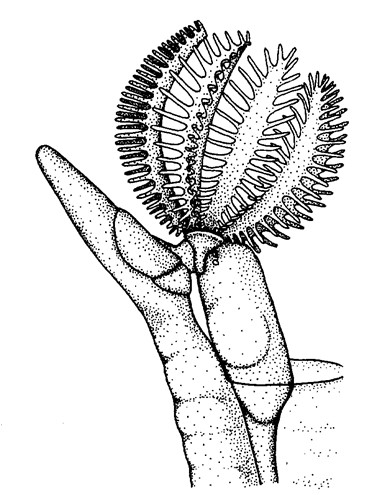
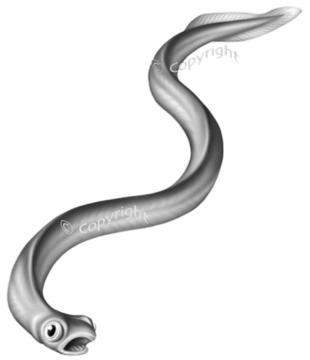
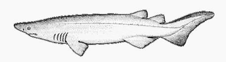
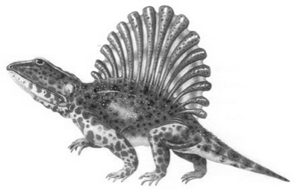
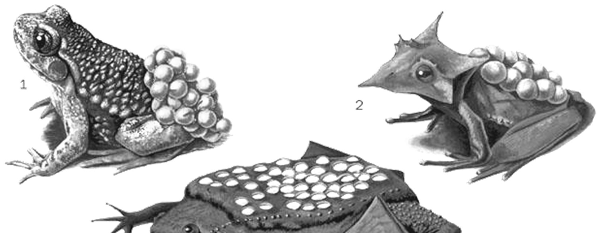
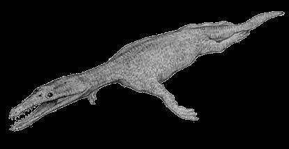

Cordados
Edición: Agosto 2021.
Fotos de portada exterior: Jirafa, sapo y cocodrilo de río (Zoológico Guadalajara, México); varano, pingüino, ganso, tiburón de la arena, tiburón toro, pez cirujano y pez payaso, (Zooacuarium de Madrid, España); gorila (Zoológico de Valencia, España). Lycaenops, Compsognathus y Kritosaurus (Museo del Desierto, Coahuila). Bosque mesófilo de Talpa de Allende. M. Mora-Núñez, 2003, 2004, 2007 y 2015.
Foto de portada interior: Pingüinos de El Cabo, Spheniscus demersus (Zooacuarium de Madrid, España). M. Mora-Núñez, 2003.
1 Cordados
1.1 Introducción
1.1.1 LOS CORDADOS Y LA DIVERSIDAD BIOLÓGICA
Existen muchas clasificaciones distintas para los seres vivos. Algunas de las más modernas los agrupan en tres conjuntos denominados imperios o dominios. Tales grupos están formados por las arqueobacterias, las eubacterias y los eucariontes respectivamente. A su vez, los dominios pueden estar divididos en reinos. Enseguida se muestra esta clasificación y el número aproximado de especies conocidas para cada uno:
Dominio Archeobacteria
Dominio Eubacteria
Dominio Eucariota
- Reino Protoctista (29,000 especies)
- Reino Fungi (99,000 especies)
- Reino Plantae (310,000 especies)
- Reino Animalia (1,525,728 especies)
El reino animal está caracterizado por el hecho de que sus miembros son multicelulares, heterótrofos, móviles en alguna etapa de su vida y sus células carentes de pared. Se conocen alrededor de 35 phyla de animales, dentro de los cuales los cordados ocupan el tercer lugar en diversidad, superados solo por los artrópodos y los moluscos. La antigua clasificación que separaba a los animales en vertebrados e invertebrados carece de validez taxonómica debido a que estas unidades no representan grupos naturales equivalentes. Los vertebrados son sólo un subgrupo de los cordados, que a su vez representa uno de los 35 planes estructurales conocidos de animales. A continuación se presenta un listado de los phyla de mayor diversidad dentro del Reino Animal y el número aproximado de especies conocidas.
| Phylum | Número de especies actuales |
|---|---|
| Artropoda | 1’257,040 |
| Mollusca | 84,977 |
| Chordata | 68,650 |
| Plathyhelminta | 29,487 |
| Nematoda | 25,033 |
| Anellida | 17,388 |
| Cnidaria | 10,203 |
| Porifera | 8,659 |
| Echinodermata | 7,550 |
| Briozoa | 6,008 |
1.1.2 CARACTERÍSTICAS DE LOS CORDADOS
Las características que definen al Phylum Chordata se agrupan en dos tipos; las primarias y secundarias. Las primeras son exclusivas del phylum y generales para todos sus miembros; las segundas pueden presentar excepciones en algún grupo o bien, pueden compartirse con algunos otros phyla.
Las características que definen al Phylum Chordata se agrupan en dos tipos; las primarias y secundarias. Las primeras son exclusivas del phylum y generales para todos sus miembros; las segundas pueden presentar excepciones en algún grupo o bien, pueden compartirse con algunos otros phyla.
1.1.2.0.1 Caracteres primarios
La presencia de notocordio. El notocordio es una varilla esquelética longitudinal formada por grandes células vacuoladas que contienen una solución gelatinosa y que están encerradas en una vaina fibrosa de tejido conectivo. Sirve, a la vez que es flexible, como estructura de soporte, ya que la presión hidrostática de la solución hace que sea rígida. En anfioxos y larvas de tunicados, los músculos se fijan a su vaina y se doblan de lado a lado en la natación. La columna vertebral se desarrolla alrededor de la notocorda y ésta se pierde en la vida postembrionaria de los vertebrados. No obstante, la notocorda persiste en algunos peces y corre recta a lo largo de los cuerpos huecos de las vértebras.
Las hendiduras faríngeas (branquiales) utilizadas en un principio para la alimentación por filtración, presentes en todos los cordados en algún estadío del desarrollo. Estructura sólo mostrada por los protocordados y peces en estado adulto. Incluso los reptiles, aves y mamíferos, que respiran por pulmones, a lo largo de su vida desarrollan hendiduras faríngeas durante su embriogenia.
Un tubo neural hueco dorsal que se extiende por casi toda la longitud del cuerpo. El tubo neural está más o menos dilatado anteriormente formando un cerebro hueco.
Presencia de un endostilo (en primitivos) o glándula tiroides (en vertebrados).
Cola postanal en alguna etapa del desarrollo. La cola es muscular y sirve para la propulsión en la larva de los tunicados, cefalocordados y vertebrados pisciformes.
1.1.2.0.2 Caracteres secundarios
Células fotosensoriales (incluyendo las retinas ópticas cuando están presentes) se desarrollan a partir del ectodermo del sistema nervioso central, no de células epidérmicas ectodérmicas como en otros phyla.
Cuerpo metamérico, especialmente en lo que se refiere a la musculatura somática que (excepto en tunicados) consiste en miómeros distribuidos segmentriamente y separados por finos mioseptos de tejido conectivo. La segmentación persiste a lo largo de la vida de los cefalocordados y vertebrados; en estos últimos está especialmente marcada en la espina dorsal, musculatura, hendiduras branquiales y nervios espinales.
Células fotosensoriales (incluyendo las retinas ópticas cuando están presentes) se desarrollan a partir del ectodermo del sistema nervioso central, no de células epidérmicas ectodérmicas como en otros phyla.
Cuerpo metamérico, especialmente en lo que se refiere a la musculatura somática que (excepto en tunicados) consiste en miómeros distribuidos segmentriamente y separados por finos mioseptos de tejido conectivo. La segmentación persiste a lo largo de la vida de los cefalocordados y vertebrados; en estos últimos está especialmente marcada en la espina dorsal, musculatura, hendiduras branquiales y en la distribución de los nervios y vasos sanguíneos que abastecen la pared del cuerpo.
El corazón está localizado ventralmente con respecto al aparato digestivo.
Cuando hay un endoesqueleto, éste deriva del mesodermo (como en equinodermos).
Animales deuterostomados con simetría bilateral: el ano se desarrolla en el lugar del blastoporo y el celoma es de origen enterocélico.
1.1.3 ORIGEN DE LOS CORDADOS
Se considera que los cordados aparecieron, junto con muchos otros phyla, en la gran explosión del Cámbrico, hace aproximadamente 545 millones de años. Aún no está claro de qué grupo animal ancestral descendieron y actualmente existen muchas teorías que explican el origen y el parentesco de los primeros cordados.
Al buscar las relaciones de los cordados con otros phyla, los anélidos ofrecen un punto de partida y esta fue una idea bastante difundida en el siglo XIX. Las características comunes entre anélidos y cordados son las siguientes:
- Simetría bilateral
- Vida activa y no sésil como en muchos invertebrados
- Segmentación del cuerpo
- Sistema nervioso central consistente en una masa encefálica en el extremo anterior del cuerpo y un cordón nervioso longitudinal.
Los argumentos son débiles, incluso la segmentación y por lo tanto muchos especialistas descartan a los anélidos como ancestros o parientes cercanos de los cordados.
Afinidades con los equinodermos
Investigaciones efectuadas permiten suponer que los equinodermos y los cordados comparten un ancestro común. Las características comunes entre equinodermos y cordados son las siguientes:
- En el anfioxo y los equinodermos el mesodermo nace de bolsas intestinales, aunque en los vertebrados sea un proceso complejo.
- Los cordados inferiores y los equinodermos presentan el cuerpo larval dividido en tres segmentos.
- Ciertos hemicordados tienen larvas ciliadas muy parecidas a las de los equinodermos.
- Las proteínas del suero sanguíneo de los cordados inferiores y de los equinodermos guarda una relación muy cercana.
- En los vertebrados, la sustancia fosfatada que libera energía en los músculos es la creatinina, mientras que en la mayoría de invertebrados es la arginina. En algunos equinodermos, urocordados y hemicordados existen ambas.
- Nuevos descubrimientos de fósiles han mostrado algunas formas intermedias probables.
1.1.4 Filogenia de los cordados
Aunque no existen fósiles de “precordados”, las evidencias indican que el ancestro común entre los equinodermos y los cordados era un organismo sésil, que habitaba en el fondo marino y se alimentaba de partículas obtenidas y llevadas a la boca por brazos extendidos de un penacho. Los equinodermos primitivos (los crinoideos actuales y algunos grupos fósiles) siguieron utilizando este mecanismo de alimentación.
Un adelanto inicial de los caracteres de cordados verdaderos fue el cambio en el método para obtener partículas de alimentos, cuando se abandonó el penacho a favor de la filtración por las branquias.
El adelanto posterior del aparato filtrante de las branquias condujo a los tunicados característicos, en los cuales todo el cuerpo es un tamiz alimenticio. Se considera una línea lateral de la evolución general de los vertebrados. Los organismos sésiles poseen larvas móviles que buscan un lugar adecuado en el fondo donde establecerse. Antes de llegar al nivel de los tunicados, aparece una larva del tipo de renacuajo que posee una cola musculosa (el notocordio le da rigidez) y nervios que coordinan la locomoción.
Habiendo aparecido esta larva, se produjo un cambio radical en el sentido de la evolución de los cordados. Se hizo posible un modo activo de vida. Apareció la neotenia y las estructuras locomotoras de las larvas se conservaron toda la vida, aunque mucho tiempo se continuó tamizando los alimentos. En el anfioxo, por ejemplo, la alimentación por filtración continúa en vida adulta. La mayor parte de los cordados no se quedaron en esta etapa, evolucionando hacia vertebrados.
1.2 CLASIFICACIÓN GENERAL DE LOS CORDADOS
1.2.1 PHYLUM CHORDATA
- Subphylum Urochordata
- Clase Ascidiacea
- Clase Thaliacea
- Clase Larvacea (Appendicularida)
- Subphylum Cephalochordata
- Clase Amphioxi
- Subphylum Vertebrata (=Craniata)
- Infraphylum Agnatha
- Clase Myxini
- Clase Petromyzontida (Cephalaspidomorphi)
- †Clase Conodonta
- †Clase Pteraspidomorphi
- †Clase Anaspida
- †Clase Thelodonti
- †Clase Osteostraci
- Infraphylum Gnatostomata
- †Clase Placodermi
- Clase Elasmobranchii
- Clase Holocephali
- †Clase Acanthodia
- Clase Cladistei
- Clase Chondrostei
- Clase Holostei
- Clase Teleostei
- Clase Coelacanthi
- Clase Dipnoi
- †Clase Tetrapodomorpha
- Clase Amphibia
- Clase Reptilia
- †Clase Synapsida
- Clase Mammalia
- Infraphylum Agnatha
1.2.2 PHYLUM HEMICHORDATA
- Clase Enteropneusta
- Clase Pterobranchia
- †Clase Graptolithina
* Basada en: Benton (2014) y Ruggiero et al. (2015).
Literatura complementaria:
- Álvarez del Villar, J. 1977. Los cordados: origen, evolución y hábitos de los vertebrados. CECSA. México.
- Benton, M. J. 2014. Vertebrate Palaeontology. Blackwell SC. United Kingdom.
- Brusca, R. C., W. Moore, S. M. Shuter. 2016. Invertebrates. Sinauer-Oxford University Press. United States of America.
- Burnie, D. & D. E. Wilson. 2001. Animal: the definitive visual guide to the world’s wildlife. DK. U.S.A.
- Dahiya, N. 2017. Vertebrate zoology. New York Arcler Press. United States of America.
- Hickman, C. P. (Jr), L. S. Roberts y F. M. Hickman. 2015. Zoología: principios integrales. Interamericana-Mc Graw Hill. España.
- Jessop, N. M. 1991. Zoología: Vertebrados. Interamericana- Mc Graw Hill. España.
- Lira I., E., C. Mudespacher y B. García. 1994. Theria: Diccionario de Mamíferos. AGT Editores. México.
- Nelson, J. S. 2006. Fishes of the World. John Wiley & Sons, Inc. U.S.A.
- Parker, T. J., W. A. Haswell y J. Nadal. 1991. Zoología: Cordados. Reverté. España.
- Ruggiero, M. A., D. P. Gordon, T. M. Orrell, N. Bailly, T. Bourgoin, R. C. Brusca, T. Cavalier-Smith, M. D. Guiry, P. M. Kirk. 2015. A higher level classification of all living organisms. PLoS ONE.:10(4).
2 Sección 02
3 HemiCordados
3.0.1 PHYLUM HEMICHORDATA (Adelochordata)
Griego: hemi, medio + chorda, cuerda.
Este phylum comprende a los gusanos bellota, los pterobranquios y los extintos graptolitos; también está incluida Planctosphaera pelagica, asignada a una clase monotípica por algunos autores. Además de los rasgos generales de los deuterostomados, los hemicordados presentan hendiduras branquiales y la mayoría posee un cordón nervioso dorsal, a veces hueco (características que comparten con los cordados). Al principio se creyó que poseían una notocorda y por tanto, se consideraron como un subphylum de los cordados. Sin embargo, se demostró que la estructura en cuestión, una evaginación de la parte anterior del tubo digestivo llamada divertículo bucal o estomocorda, no es homóloga del notocordio. El phylum se divide en tres clases (una extinta) y tiene 87 especies vivientes. Presentan las siguientes características:
- Deuterostomados bilaterales y con el cuerpo vermiforme o sacciforme y fundamentalmente tripartito. Con prosoma, mesosoma y metasoma, cada uno con sus compartimentos celómicos.
- Solitarios o coloniales.
- Con hendiduras faríngeas ciliadas.
- Sistema circulatorio abierto bien desarrollado.
- Estructura excretora única, el glomérulo.
- Gónadas en el metasoma.
- Tubo digestivo completo.
- Suspensívoros o detritívoros.
- Musculatura longitudinal (y en el caso de gusanos bellota también circular).
- Cordón nervioso corto, dorsal y mesosómico, ocasionalmente hueco y probablemente homólogo del de los cordados.
- Dioicos, con fecundación externa y desarrollo indirecto. Reproducción asexual común. Típicamente larva tornaria.
- Estrictamente marinos y bentónicos (excepto Planctosphaera, que es planctónica).
3.0.2 Clase ENTEROPNEUSTA
Griego: enteron intestino y pneustikos respiración
Son animales vermiformes y viscosos que viven en galerías o bajo las piedras, normalmente en fango o arena de la zona intermareal. Son conocidos como “gusanos bellota”.
Presentan dimensiones entre 20 mm y 2.5 m de longitud y de 3 a 20 mm de anchura.
3.0.2.1 Morfología general
El cuerpo de los enteropneustos se divide en una probóscide, un collar corto y un largo tronco. El soporte del cuerpo se consigue fundamentalmente por la naturaleza hidrostática de las cavidades corporales, y secundariamente por la integridad estructural de la pared del cuerpo, el tejido conjuntivo y otros órganos como el esqueleto de la probóscide.
Probóscide (prosoma): Es la parte activa del animal. Recoge alimento cuando se adhiere al moco que la cubre y por movimientos ciliares las partículas son acarreadas hacia la boca. Con la probóscide excavan galerías, que recubren de moco y tienen forma de U. Pueden sacar la probóscide del tubo para alimentarse, los desechos son eliminados por el otro extremo del tubo formando montoncitos muy notorios. Los músculos corporales se contraen para eliminar el exceso de agua por las hendiduras.
Collar (mesosoma): Es de carácter muscular, pudiendo tener una o dos cavidades celómicas, separadas totalmente de la cavidad de la probóscide. Poseen gran cantidad de tejido conjuntivo que le confiere una consistencia esponjosa. La cavidad del collar comunica con el exterior por un par de “poros del collar” y breves tubos ciliados conducen a las primeras bolsas branquiales.
Tronco (metasoma): Incluye al resto de órganos y ocupa el mayor porcentaje del cuerpo. En la superficie dorsal de la porción anterior hay una doble fila de aberturas branquiales. En algunas especies las aberturas poseen opérculo. Un par de crestas genitales longitudinales se extienden a través de una considerable parte del cuerpo posterior y por la región de las hendiduras branquiales. Contienen, situadas internamente, las gónadas. Estas crestas en algunos géneros son tan prominentes, que llegan a formar pliegues laterales a manera de alerones. Las hendiduras branquiales, presentes en el tronco, no asumen la función de verdaderas branquias aunque si hay algo de intercambio gaseoso. La función principal es la alimenticia. Los movimientos corporales y ciliares crean corrientes de agua que llevan alimento hacia la faringe, donde inicia el proceso digestivo.
3.0.2.2 Sistema digestivo
La boca se sitúa ventralmente, en la base de la probóscide. A la faringe se comunican las hendiduras. El resto del tubo digestivo es casi rectilíneo, que en su porción media se ramifica en ciegos hepáticos pares, los cuales se abultan por fuera formando prominencias. El tubo termina en una abertura anal en el extremo posterior del cuerpo. Las partículas alimenticias son conducidas hacia la boca por los cilios de la probóscide (atrapados por el mucus). Frente a la boca existe un órgano ciliar sensorial equivalente al sentido del gusto. La arena y fango que se ingiere se elimina por el ano. Series de poros gastro-cutáneos conectan el tubo digestivo con la superficie externa (lo que contribuye a la compactación de desechos, con la eliminación de agua).
3.0.2.3 Sistema circulatorio
Formado por dos troncos longitudinales, uno dorsal y un ventral. El dorsal termina anteriormente en un seno o vesícula pericárdica en la probóscide. En comunicación con el seno y frontalmente se encuentra el glomérulo, que probablemente tenga una función excretora.
3.0.2.4 Sistema nervioso
Consta de cordones dorsales y ventrales a lo largo del cuerpo, conectados a las neuronas dispersas. Existen neuronas gigantes. No hay órganos sensoriales especiales, salvo el órgano ciliar preoral y células epidérmicas de la probóscide.
3.0.2.5 Locomoción
Se lleva a cabo principalmente por movimientos ciliares y contracciones de la probóscide. El animal excava por peristalsis.
3.0.2.6 Reproducción y desarrollo
Sexos separados, dimorfismo sexual y fecundación externa. En algunas especies se desarrolla la larva tornaria ciliada que se parece mucho a la de los equinodermos. La reproducción asexual tiene lugar en al menos algunos enteropneustos como Balanoglossus; los gusanos bellota fragmentan pequeños pedazos del tronco, cada uno de los cuales es capaz de crecer hasta formar un animal completo. Son animales muy frágiles, que a menudo se rompen cuando se manipulan; probablemente puedan regenerar las partes dañadas.
3.0.2.7 Taxonomía
Se conocen unas 70 especies que se agrupan en un solo orden: Balanoglossida. Algunos géneros representativos son: Balanoglossus, Saxipendium, Xenopleura, Protoglossus y Saccoglossus.
| Balanoglossus | |
| Saccoglossus |
3.0.3 Clase PTEROBRANCHIA
Griego: pteron, pluma y branchia, branquia.
Esta clase está formada por unas 17 especies. Son coloniales y sedentarios, pero estrechamente relacionados con los enteropneustos. Se trata de animales poco vistosos, pues la mayor parte de ellos viven en aguas relativamente profundas y casi todas las especies se han colectado en el Hemisferio Austral.
Morfológicamente presentan un cuerpo sacciforme que se divide en tres regiones, pero en ocasiones no es tan evidente la segmentación. Son pequeños, generalmente entre 1 y 7 mm, que viven agrupados en tubos gelatinosos. Por la abertura de los tubos asoman una corona de tentáculos. Hendiduras branquiales en número pequeño o ausentes. En el caso de Cephalodiscus existe un par de hendiduras semejantes a las branquiales, por donde se expulsa el agua ingerida por la boca. Tienen el cuerpo en forma de U y embebido en una matriz gelatinosa. El ano se encuentra al nivel de la boca. Su sistema digestivo es muy simple, teniendo diferenciación de boca, faringe, estómago, intestino y ano. Las partículas alimenticias son allegadas a la boca a través de canales alimenticios situados en el penacho. La respiración se realiza por medio de penachos branquiales que se implantan en la superficie dorsal de la probóscide.
Algunas especies son hermafroditas, pero en la mayoría los sexos están separados y la fecundación es externa. En Cephalodiscus existe un órgano llamado estolón, donde se forman las yemas que, tras crecer un poco, se separan dando nuevos individuos, como resultado de reproducción asexual. El desarrollo es directo (sin estado larvario libre) para este caso.
Rhabdopleura es una especie colonial, sus zooides son de sexos separados, pero la colonia es hermafrodita; se forma por gemación. Se presenta estado larvario libre y nadador.
3.0.3.1 Taxonomía:
Todas las especies de la clase se incluyen en un solo orden: Cephalodiscida. Se conocen 17 especies vivientes. Los géneros representativos de la clase son: Cephalodiscus, Rhabdopleura y Atubaria.

Cephalodiscus
3.0.4 †Clase GRAPTOLITHINA
Griego: graptos, escrito y lithos, piedra. Es una clase extinta de hemicordados coloniales que abundaron en los mares desde el Cámbrico medio hasta el Carbonífero inferior. Sus fósiles son muy comunes y de distribución mundial, siendo utilizados por los paleontólogos como indicadores de edad. Se consideran parientes muy cercanos de los pterobranquios. Géneros representativos: Rastrites, Dydimograptus y Climatograptus.
3.0.4.1 Literatura complementaria:
- Álvarez del Villar, J. 1977. Los cordados: origen, evolución y hábitos de los vertebrados. CECSA. México.
- Brusca, R. C., W. Moore, S. M. Shuter. 2016. Invertebrates. Sinauer-Oxford University Press. United States of America.
- Burnie, D. & D. E. Wilson. 2001. Animal: the definitive visual guide to the world’s wildlife. DK. U.S.A.
- Hickman, C. P. (Jr), L. S. Roberts y F. M. Hickman. 2015. Zoología: principios integrales. Interamericana-Mc Graw Hill. España.
- Parker, T. J., W. A. Haswell y J. Nadal. 1991. Zoología: Cordados. Reverté. España.
3.1 Sección 03
3.2 Protocordados
3.3 PHYLUM CHORDATA
3.3.1 SUBPHYLUM UROCHORDATA
Griego: oura, cola + latín chorda, cordón + ata, caracterizado por. Este subphylum también es conocido como Tunicata. Son los cordados invertebrados de mayor diversidad, pues se conocen alrededor de 4,080 especies. Todos marinos y ampliamente distribuidos. El subphylum se divide en tres clases: Ascidiacea, Thaliacea y Larvacea. Presentan las siguientes características:
Presencia de túnica que es una masa fibrosa, acelular, que cubre el cuerpo. Está constituida por un tipo de celulosa (tunicina), algo bastante inusual dentro del reino animal. Puede ser fina y delicadao gruesa y correosa. Generalmente es transparente pero puede tenerfuertes coloraciones.
El notocordio queda confinado a la cola muscular de los estadoslarvarios libres.
Tienen reproducción sexual y por gemación.
No desarrollan el celoma.
Tienen estado larvario de vida libre y sufren metamorfósis para lavida sedentaria (con algunas excepciones).
La alimentación y la respiración suceden a la vez. El agua se filtra a través de las hendiduras faríngeas, se recoge en el atrio y seexpulsa por medio de un atrioporo.
La mayor parte del moco es secretado por el endostilo.
Sistema circulatorio abierto. El corazón expele sangre directamente a los espacios instersticiales.
En la sangre existen las células llamadas vanadocitos, que sonamebóticas y transportan Vanadio. El Vanadio sirve como agente reductor.
Carecen de órganos excretores. El amoniaco se difunde y el ácido úrico es recolectado por nefrocitos ameboides de la sangre.
Son en su mayoría hermafroditas.
Morfología y anatomía de una ascidia.
3.3.2 Clase ASCIDIACEA
Griego: askiolon, bolsita + aceos sufijo (Pequeñas bolsas) Incluye las conocidas jeringas de mar, solitarias o coloniales, famosas por la fuerza con la que lanzan chorros de agua. Todos son sésiles en estado adulto. Las coloniales tienen sifones bucales independientes pero comparten los orificios excurrentes.
3.3.2.1 Morfología corporal
Las ascidias tienen apariencia de saco con forma esférica o alargada. La túnica está formada por tunicina (celulosa). El manto está suspendido dentro de la túnica, afianzado firmemente en la abertura oral y atrial y está formado por materia viva (fibras contráctiles). La faringe es una cavidad bastante amplia, mientras que la cavidad atrial la rodea totalmente. La faringe tiene células glandulares que secretan moco al que se adhiere el alimento, y células ciliadas que mueven las partículas hacia el esófago. El endostilo es un surco acanalado que recorre ventralmente la cavidad faríngea. En él se concentra la mayor parte de células glandulares.
3.3.2.2 Anatomía y fisiología
Del sifón oral parte el tubo digestivo que, al llegar a la cavidad atrial, se ensancha en una faringe perforada por una multitud de estigmas respiratorios, de tal manera que el agua inhalada por el sifón oral o bucal, se cuela en el órgano mencionado, pasa a la cavidad atrial y de allí, por el poro exhalante o atrial, al exterior. El sistema circulatorio está muy desarrollado.
El corazón es un saco muscular situado cerca del estómago. No hay verdaderos vasos, la sangre circula a través de un sistema de canales o senos, por lo que es un sistema abierto.
La respiración se lleva a cabo en la faringe, la sangre lleva a cabo el intercambio gaseoso en las hendiduras faríngeas, y de ahí el oxígeno se distribuye al cuerpo en general. El sistema nervioso es extremadamente simple. Hay un solo ganglio neural que está situado entre las aberturas oral y atrial, del que parten nervios para todas partes del cuerpo.
Reproducción y desarrollo
La fecundación suele tener lugar dentro o fuera de la cavidad atrial. Las larvas tienen siempre vida libre nadadora. Cuando una larva se fija y transcurridas 36 horas, la cola desaparece y los órganos giran 180°, por lo que la boca y el atrioporo miran hacia el lado opuesto de la superficie de fijación.
3.3.2.3 Diversidad y taxonomía
La clase ASCIDIACEA incluye 2,760 especies y se divide en dos órdenes:
Orden Enterogona: urocordados solitarios o coloniales en los que cada individuo tiene sifón atrial y túnica independiente. Son incapaces de reproducirse por gemación. Géneros representativos: Ascidia, Ciona y Didemnum.
Ciona
Orden Pleurogona: son urocordados que forman pequeñas reuniones incluidas en una sola túnica, con el poro y la cavidad atrial comunes. Géneros representativos: Clavellina y Botryllus.
Botryllus
3.4 Clase THALIACEA
Griego: thalia, exuberante + aceos, sufijo (Exuberantes, lujosos)
Los taliáceos son tunicados nadadores libres, a veces simples, a veces coloniales que jamás presentan un apéndice caudal en estado adulto. Las fibras musculares de la pared del cuerpo están dispuestas en bandas anulares completas o interrumpidas, e incluso engarzadas difusamente. Algunos tienen una larva con cola que se metamorfosea en un adulto planctónico con forma de barril, conocidos como salpas, las cuales tienen sus sifones incurrente y excurrente en sentidos contrarios. Esta disposición les permite nadar por propulsión a chorro mediante la contracción de las bandas musculares (6-10). Son transparentes y a veces luminiscentes. La faringe presenta dos grandes estigmas, o muchos y pequeños, que comunican al exterior por la abertura atrial. Todas las salpas producen individuos por gemación que a veces quedan unidos en trenes de hasta 20 m. Hay alternancia de generaciones en algunas especies.
Se cree que evolucionaron a partir de ascidias sésiles.
La Clase THALIACEA incluye 1,250 especies y se divide en 3 órdenes: Orden Salpida: Incluye los thaliaceos que tienen las bandas musculares interrumpidas en la región ventral y las branquias reducidas a un par de estigmas. Tienen forma cilíndrica o prismática con el cuerpo transparente que puede alcanzar de 8 a 190 mm.
Género representativo: Salpa.
Orden Doliolida: El cuerpo tiene forma de un pequeño tonel con bandas o anillos musculares completos en derredor y dos series de estigmas respiratorios. Género representativo: Doliolum.
Doliolum
Orden Pyrosomida: Son pelágicos que forman colonias tubulares de numerosos y pequeños zooides, cuya reproducción es asexual por gemación y sin fase sexuada. Generalmente son luminiscentes.
Género representativo: Pyrosoma.
Pyrosoma
3.4.1 Clase LARVACEA
Latín: larva, espíritu + aceos, sufijo. (Fantasmas)
Su estado adulto planctónico es neoténico, es decir, capaz de reproducirse aún conservando características de larvas. La existencia de esta forma neoténica sugiere un posible mecanismo por medio del cual los peces inferiores pudieron haberse originado. Son muy pequeños, transparentes y pelágicos. La cavidad branquial comunica directamente al exterior por dos tubos expiradores. El ano es ventral y la cola está provista de notocordio y dirigida hacia delante formando un ángulo agudo con el cuerpo del animal. Son menores de 5 mm; no obstante pueden secretar masas gelatinosas envolventes del tamaño de una nuez que tienen función alimenticia, ya que atrapa las partículas nutritivas. Cada 4 o 5 horas sustituye la cubierta.
3.4.1.1 Taxonomía:
La clase incluye unas 70 especies en un solo órden: Appendicularia. Géneros representativos:
Oikopleura, Appendicularia.
Appendicularia
3.5 SUBPHYLUM CEPHALOCHORDATA
Griego: Cephale, cabeza + chorda cuerda
También llamado Acrania. Pertenecen a este subphylum los animales conocidos como anfioxos. Son cordados pisciformes que presentan todas las características básicas primitivas de los cordados: organismos marinos de vida libre que se alimentan de partículas suspendidas por medio de filtración. Son cosmopolitas en aguas marinas someras y en estuarios, donde viven semienterrados en arenas limpias. Son capaces de nadar. Por su anatomía y morfología, junto con los aspectos anteriores, se ha tomado al anfioxo como representativo del phylum Chordata. Todos los representantes vivos del subphylum se incluyen dentro de una sola clase:
3.5.1 Clase AMPHIOXI
Griego: amphi, ambos extremos + oxys, apuntado
Son animales que, aunque nadan bien, son básicamente excavadores. Viven semienterrados en la arena del fondo marino a pequeña profundidad y se encuentran distribuido en las costas de todos los océanos. En Norteamérica existen 4 especies. Tienen cuerpos comprimidos lateralmente y son generalmente transparentes, de 5 a 7 cm de longitud. Su anatomía y fisiología son, en términos generales como sigue: Sistema digestivo
Está compuesto por una boca tentaculada, farínge, ciego hepático, intestino y ano. El agua entra por la boca, impulsada por los cilios de la cavidad bucal, y pasa por numerosas hendiduras branquiales en la faringe, donde el alimento es atrapado en moco y posteriormente transladado al intestino. Aquí las partículas alimenticias se separan del moco y pasan a un ciego donde son digeridas. El agua filtrada es conducida al atrio y abandona el cuerpo por un atrioporo.
3.5.1.1 Sistema circulatorio
Es cerrado y muy complejo para un cordado tan sencillo. No existe corazón, la sangre es bombeada hacia delante en la aorta ventral por contracciones peristálticas y pasa por las arterias branquiales hacia la aorta dorsal. Desde ahí se distribuye al cuerpo por microcirculación. Al final se recoge de nuevo en las venas, que la devuelven hacia la aorta ventral. La sangre carece de eritrocitos y hemoglobina.
3.5.1.2 Sistema nervioso
Se centra alrededor de un cordón nervioso hueco situado sobre el notocordio. Parten varios pares de nervios hacia los músculos. El “cerebro” es un abultamiento en la parte anterior.
3.5.1.3 Sostén
El notocordio es persistente durante toda la vida y sirve como varilla de sostén al cuerpo, aunque ningún músculo se fija a él directamente; más bien sirve para evitar el acortamiento del cuerpo cuando los músculos se contraen. Los miótomos son pequeñas fibras musculares estriadas que corren a lo largo del cuerpo, separados por tabiques de tejido conjuntivo, los mioseptos. Esta segmentación es característica de todos los cordados. Los mioseptos no siguen una línea recta del lado dorsal al ventral del cuerpo, sino que tienen una forma de V.
3.5.1.4 Sistema excretor
Poseen “células flamígeras”, algo muy extraño, ya que son semejantes a las que se encuentran en platelmintos, moluscos y anélidos. Los nefridios se encuentran sobre la faringe.
A cada barra branquial primaria corresponde un saco nefridial que se abre por un poro en el atrio y que está provisto de numerosas células flamígeras. Estas estructuras no tienen relación homológica con ninguna estructura de los vertebrados.
3.5.1.5 Reproducción y desarrollo
Los sexos están separados, pero no hay dimorfismo sexual aparente. Las gónadas se presentan en forma de 26 pares de bolsas dispuestas metaméricamente a lo largo de la pared del cuerpo. Cuando maduran, las células sexuales se liberan en la cavidad atrial y salen por el atrioporo al exterior, donde se produce la fecundación (Generalmente en la primavera). Después de la puesta, ocurren estados larvarios muy parecidos a los adultos. #### Taxonomía
Se conocen 33 especies. El primer ejemplar del subphylum que se describió fue enviado al zoólogo alemán Pallas, el cual lo confundió con una babosa y le dio el nombre de Limax lanceolatus (1774). Posteriormente, el primero que lo dibujó, le puso el nombre de Anfioxus lanceolatus (1836). Sin embargo, en 1834 ya se le había nominado como Branchiostoma, por lo que esta denominación es la que quedó. Se puede utilizar el término “anfioxo” como nombre común. Todos los representantes de la clase se encuentran en un solo orden: Amphioxiformes. Géneros representativos: Branchiostoma (8 especies) y Asymmetron (6 especies).
Asymmetron
3.5.1.6 Literatura complementaria:
Brusca, R. C., W. Moore, S. M. Shuter. 2016. Invertebrates. Sinauer-Oxford University Press. United States of America.
Burnie, D. & D. E. Wilson. 2001. Animal: the definitive visual guide to the worldś wildlife.DK. U.S.A.
Hickman, C. P. (Jr), L. S. Roberts y F. M. Hickman. 2015. Zoología: principios integrales.Interamericana-Mc Graw Hill. España.
Parker, T. J., W. A. Haswell y J. Nadal. 1991. Zoología: Cordados. Reverté. España.
4 Sección 04
4.1 INTRODUCCIÓN A LOSVERTEBRADOS
4.1.1 SUBPHYLUM VERTEBRATA
La mayor parte de las especies de cordados vivientes y extintos están incluidos en el Subphylum Vertebrata. Se reconocen para la actualidad casi 70,000 especies. La historia de los vertebrados se despliega a lo largo de 540 millones de años; durante ese tiempo, entre los vertebrados han evolucionado algunos de los mayores y más complejos animales conocidos.
Los vertebrados ocupan entornos marinos, dulceacuícolas, terrestres y aéreos y presentan una enorme variedad de modos de vida. Como los tunicados y los anfioxos, los vertebrados son auténticos cordados, y en algún momento de su vida presentan las cinco características definitorias de los cordados: notocordio, hendiduras faríngeas, endostilo o glándula tiroides, cordón nervioso hueco dorsal y cola postanal.
4.1.1.1 CARACTERÍSTICAS DE LOS VERTEBRADOS
Características generales de los cordados: notocordio, hendiduras branquiales, cordón nervioso dorsal y cola postanal.
El tegumento constituido por dos porciones: epidermis externa y dermis interna, presentando modificaciones como escamas, plumas, etc.
Notocordio más o menos reemplazado por la columna vertebral, constituida por hueso, cartílago o ambos.
Endoesqueleto diferenciado en axial y visceral, con músculos insertos en él.
Sistema digestivo completo y ventral a la columna vertebral provisto de grandes glándulas digestivas, hígado y páncreas.
Sistema circulatorio consistente en un corazón ventral de dos a cuatro cámaras; sistema cerrado de vasos sanguíneos con arterias, venas y capilares. Sangre con eritrocitos y leucocitos. Hemoglobina presente.
Celoma bien desarrollado, ampliamente ocupado por los sistemas viscerales.
Sistema excretor constituido por riñones pares y conductos de desagüe.
Encéfalo dividido en cinco vesículas.
Diez a doce pares de nervios craneales con funciones tanto sensibles como motoras; un par de nervios espinales por cada primitivo miótomo.
Sistema nervioso autónomo.
Sistema endócrino de glándulas sin conductos dispersas por el cuerpo.
Reproducción sexual con sexos separados (salvo excepciones) con gónadas pares.
Plan estructural que consiste en cabeza, tronco y cola postanal.
4.1.1.2 MORFOLOGÍA Y ANATOMÍA GENERAL DE LOS VERTEBRADOS
4.1.1.3 1. Tegumento
El tegumento de los vertebrados tiene dos componentes: una capa profunda de origen mesodérmico que consiste principalmente de tejido conectivo (llamada dermis), y una capa externa de origen ectodérmico llamada epidermis.
Epidermis: Es un epitelio escamoso multiestratificado en el que las células más viejas mueren y se desprenden de la superficie externa, mientras que las células nuevas se producen en una capa basal, mitóticamante activa, el estrato germinativo. En los vertebrados terrestres, las capas epidérmicas más externas consisten en células muertas que se queratinizan. Estas células forman las escamas de los reptiles y derivados epidérmicos, tales como plumas, pelo, púas, garras, uñas, pezuñas, cascos, cascabeles, armaduras epidérmicas (como en los armadillos y tortugas), barbas de ballena y fundas córneas que cubren las mandíbulas de tortugas y aves (pico). Variaciones epidérmicas en el desarrollo producen estructuras tales como cuernos de rinoceronte y la superficie pilosa de las astas de ciervos.
*Glándulas tegumentarias: Se presentan en muchos vertebrados; se originan del epitelio (epidermis) y crecen en profundidad alcanzando la dermis. Algunos ejemplos son:
Odoríferas (reptiles y mamíferos)
Oleosas (aves y mamíferos) También llamadas sebáceas
Sudoríferas (mamíferos)
Mamarias (mamíferos)
De cerumen (mamíferos)
Lagrimales (mamíferos)
Salivales (tetrápodos)
Dermis: Contiene grandes cantidades de tejido conectivo elástico y colagénico que en algunos mamíferos y reptiles se puede curtir, resultando el cuero. Entre las fibras conectivas corren vasos sanguíneos y linfáticos, nervios al servicio de los órganos sensoriales cutáneos y músculos del integumento (como los que erizan el pelo o las plumas). Los tiburones y los ornitorrincos poseen receptores eléctricos cutáneos de extraordinaria sensibilidad, que permiten a estos animales localizar a las presas mediante los pequeños campos eléctricos que generan todas las criaturas vivientes. La dermis es capaz de desarrollar hueso, siendo el origen de los exoesqueletos presentes en tortugas, armadillos, placodermos, cocodrilos, algunos dinosaurios, entre otros. Las escamas de los peces son derivadas de la dermis; en este caso la epidermis se reduce a una delgada capa de mucosa, por esta razón se considera a las escamas de los peces como “verdaderas” y a las de los reptiles y aves como “falsas” ya que estas últimas son epidérmicas.
4.1.1.4 2. Esqueleto
Es un sistema interno de piezas articuladas de hueso, cartílago o ambos. Sus funciones principales son las de soporte en la movilidad y la protección de órganos importantes. Es de origen mesodérmico. El endoesqueleto de los vertebrados se divide en:
4.1.1.4.1 A. Esqueleto somático:
es la parte del esqueleto que no se origina embriológicamente de los primitivos arcos branquiales de los primeros vertebrados. Se subdivide a su vez en:
a) Axial: comprende las estructuras óseas o cartilaginosas colocadas en el eje del cuerpo o relacionadas con el mismo. El cráneo, la columna vertebral, las costillas y el esternón lo componen. El cráneo está formado por una sola pieza en peces y por varias en tetrápodos. Tiene en la parte posterior una abertura para la entrada de la médula espinal. La columna vertebral está formada por una serie de vértebras que se agrupan de acuerdo al lugar del cuerpo. En peces son dos regiones: precaudal y caudal, mientras que en tetrápodos son cinco: cervical, torácica, lumbar, sacra y caudal.
b) Apendicular: Comprende las cinturas escapular y pélvica con sus correspondientes miembros pareados. Corresponde a las aletas pectorales y pélvicas, o las patas anteriores y posteriores. Todos los agnatos carecen de él.
4.1.1.4.2 B. Esqueleto visceral:
está constituido por los arcos viscerales, los cuales en los peces son, de adelante hacia atrás: arco mandibular, arco hioideo y arcos branquiales. En los tetrápodos el primer arco se conserva como tal, pero los demás se modifican grandemente debido al cambio de respiración, quedando como derivados de dichos arcos huesos como los que conducen el sonido en el oído medio, la laringe, huesos del paladar, cartílago de la tráquea, etc.
4.1.1.5 3. Músculos
Se reconocen tres tipos en vertebrados: liso, que forma parte de las vísceras, cardíaco, que forma el corazón y estriado que está unido al endoesqueleto.
A. Músculo liso: Visto del microscopio óptico, el músculo liso carece de estriaciones, por lo que ha sido etiquetado con ese nombre. Está casi completamente relacionado con funciones viscerales: tracto digestivo, vasos sanguíneos, pulmones, etc. Está fuera de control voluntario. De forma característica, las contracciones son lentas y sostenidas comparadas con las contracciones rápidas del músculo esquelético. Cada célula muscular lisa es mononucleada.
B. Músculo cardíaco: En el corazón sólo existe músculo cardíaco. Igual que el músculo estriado, el cardíaco tiene un patrón a bandas. Sin embargo, y a diferencia del esquelético, las células musculares cardíacas son cortas, mononucleadas, a menudo ramificadas y unidas unas a otras por discos intercalares diferenciados en capas. Son involuntarios.
C. Músculo estriado (esquelético): Visto al microscopio, el músculo esquelético parece tener bandas transversales o estriaciones que resultan de su estructura fundamental. El músculo esquelético también está bajo control voluntario y, generalmente, se encuentra asociado con huesos y cartílagos. Cada célula muscular esquelética es multinucleada, con muchos núcleos distribuidos por su citoplasma. Las células individuales, generalmente, son menores de 5 cm de largo, pero pueden estar unidas por los extremos para formar fibras compuestas más largas. Por su estrecha relación con el endoesqueleto, el sistema muscular esquelético se clasifica igual que aquél: musculatura somática (axial y apendicular) y musculatura visceral.
4.1.1.6 4. Sistema nervioso
El sistema nervioso de los vertebrados es el más complejo de todo el reino animal. Sus principales divisiones anatómicas son:
4.1.1.6.1 A. Sistema nervioso central
Es la parte central del sistema y está rodeado a modo de protección por tres membranas (meninges): duramadre externa, aracnoides central y piamadre interna. El SNC es hueco y los espacios están llenos de líquido cefalorraquídeo. El SNC se compone de:
- Encéfalo: Está formado postembionariamente por 5 vesículas agrupadas en tres regiones principales: Prosencéfalo (telencéfalo = hemisferios cerebrales y lóbulo olfatorio) (diencéfalo = epitálamo, tálamo, hipotálamo, etc.), Mesencéfalo (lóbulos ópticos y pedúnculos cerebrales) y Rombencéfalo (metencéfalo = parte del bulbo, cerebelo y protuberancia, mielencéfalo = la mayor parte del bulbo).
| Región | Función |
|---|---|
| Prosencéfalo | Olfato |
| Mesencéfalo | Visión |
| Rombencéfalo | Equilibrio-audición |
- Médula espinal: Se encuentra alojada en la columna vertebral y presenta metamerización consistente en segmentos repetidos, de cada uno de los cuales sale un nervio motor y entra uno sensitivo.
4.1.1.6.2 B. Sistema nervioso periférico
Se forma de dos partes diferenciadas: somática motora-sensorial, que controla los movimientos corporales y está relacionada con las sensaciones no viscerales, y autónoma que regula los procesos fisiológicos. El SNP está formado por nervios, órganos sensoriales y ganglios periféricos. El sistema autónomo es doble y consiste en dos ramas antagónicas: simpática (relacionada con la respuesta al estrés) y parasimpática que es relajante.
4.1.1.7 5. Recepción sensorial
En los vertebrados, a diferencia de los invertebrados, no solo existen neuronas sensoriales, sino también células neuroepiteliales que actúan como receptores. Los órganos sensoriales son muy complejos.
A. Ojos: Es de tipo vesicular, solo comparable con el de los cefalópodos. Incluye una córnea transparente, un iris que cambia las dimensiones de la pupila y un cristalino con músculos ciliares para el ajuste de la distancia focal. Además es único en el sentido de que es un ojo cerebral: sus tejidos de la retina crecen exteriormente desde el diencéfalo y los conos y bastones son neuroepitelio ciliado modificado.
B. Oído: Pequeñas agrupaciones de células sensoriales (neuromastos) ampliamente dispersas por la piel y por el revestimiento de la lengua, parecen haber originado el oído interno y la línea lateral. El oído interno aparece embionariamente como una invaginación hasta formar la vesícula ótica. El oído está formado por hasta 3 compartimentos consecutivos: el oído externo, medio e interno. El oído externo falta en peces y anfibios; consiste en un canal corto y contorneado, el conducto o meato auditivo externo, que abre al exterior mediante un orificio. El oído medio consta de tres partes: un tímpano, una cavidad o meato del oído medio y de uno a tres huesecillos u osículos del oído medio. El oído interno está formado por el aparato vestibular y los espacios perilinfáticos circundantes.
C. Gusto: Se trata de células epiteliales que poseen largas microvellosidades, agrupadas en papilas gustativas (lengua, faringe, etc. En peces también en la cabeza). Se reconocen cuatro tipos de células, de acuerdo a los sabores básicos: dulce, salado, ácido y amargo.
D. Olfato: El sentido del olfato está relacionado con la existencia de quimiorreceptores que suelen estar situados en los conductos nasales. Anatómicamente, el circuito sensorial olfativo está formado por tres componentes: el epitelio olfativo, los bulbos olfativos y los tractos olfativos. Asimismo, el órgano vomeronasal, que únicamente está presente en algunos tetrápodos, se denomina así debido a que generalmente se encuentra protegido por los huesos del mismo nombre. La mayoría de las tortugas, los cocodrilos, las aves, algunos murciélagos, los primates y los mamíferos acuáticos carecen de órganos vomeronasales. En los anfibios se encuentran en una zona apartada de la cavidad nasal principal. En los reptiles se encuentran situados en unos huecos independientes. En los mamíferos que los poseen, se encuentran en un área aislada de la membrana olfativa, en el interior de la cavidad nasal. Los órganos vomeronasales son órganos olfativos accesorios. En ellos hay células basales, de soporte y células sensoriales bipolares, similares al del epitelio olfativo. #### 6. Sistema digestivo
El sistema digestivo de un vertebrado adulto se compone del tubo digestivo y las glándulas accesorias. El tubo digestivo es un conducto tubular que se extiende por el cuerpo desde la boca hasta el ano o la abertura cloacal; en las paredes que tapizan este tubo hay una serie de glándulas cuyas secreciones se liberan directamente a la luz. Se reconocen tres secciones del tubo digestivo: boca, faringe y canal alimentario (que a su vez se divide en esófago, estómago, intestino delgado e intestino grueso).
En la mayoría de los vertebrados, el tubo digestivo termina en una cloaca, una cámara terminal que recibe tanto los productos fecales del intestino, como los productos del tracto urogenital, cuya salida es la abertura cloacal. En la mayor parte de los peces y en los mamíferos sí existe un ano independiente. Las glándulas digestivas accesorias son glándulas extrínsecas que se sitúan fuera de las paredes del tubo digestivo, pero que segregan a su luz compuestos químicos, las enzimas digestivas, por medio de largos conductos. Entre estas glándulas se encuentran las salivales, el hígado y el páncreas.
El hígado y el páncreas de los vertebrados, como órganos independientes, no parecen tener equivalente real en los invertebrados, por lo que se consideran exclusivos. El hígado de los vertebrados no es únicamente una glándula digestiva, aunque secrete las sales biliares; es el órgano más grande y la fábrica bioquímica más versátil del cuerpo.
La lengua es también exclusiva de los vertebrados y su función es la de manipular el alimento tanto dentro como fuera de la cavidad oral (de acuerdo a las adaptaciones de cada animal).
4.1.1.8 7. Sistema respiratorio
Los vertebrados pueden respirar por medio de pulmones, branquias externas, branquias internas, vejigas gaseosas o por el tegumento. Las branquias internas y los pulmones son excepcionales porque se desarrollan a partir de una porción del tubo digestivo y están revestidos por el mismo epitelio.
A. Branquias: Son estructuras evaginadas para la respiración en el agua, que poseen gran cantidad de capilares para permitir el proceso. Están sostenidas por los arcos branquiales. Las branquias internas están asociadas a unas hendiduras y bolsas faríngeas. A menudo, las branquias están recubiertas y protegidas por repliegues tegumentarios blandos, como los septos interbranquiales de los condrictios, o por un opérculo rígido como sucede en actinopterigios. Las branquias internas surgen en la región branquial como masas filamentosas capilares que sobresalen hacia el agua circundante. Están presentes en peces pulmonados, actinopterigios y larvas de anfibios.
B. Pulmones: Son estructuras invaginadas para la respiración aérea. Son bolsas elásticas localizadas en el interior del cuerpo, que se originan por evaginación de la faringe. En los peces primitivos y en la mayoría de los tetrápodos, los pulmones de los adultos son generalmente pares. Ocupan una posición ventral con respecto a tubo digestivo y están comunicados al exterior a través de la tráquea, cuya entrada se produce por la glotis. La tráquea se divide en dos bronquios, uno hacia cada pulmón. En anfisbénidos y la mayoría de ofidios hay un solo pulmón.
C. Vejiga gaseosa: Muchos de los actinopterigios poseen una vejiga gaseosa que es un saco alargado situado en posición dorsal con respecto al tubo digestivo. Normalmente su función es la de controlar la flotabilidad del pez en la columna vertical, pero en algunos también presenta funciones respiratorias. En este último caso, las paredes de la vejiga están profusamente vascularizadas, lo que ayuda en el intercambio de gases.
4.1.1.9 8. Sistema circulatorio
El sistema circulatorio se compone principalmente de dos elementos: sangre y sistema vascular. El sistema vascular, a su vez, se compone de:
Corazón: Es la parte que bombea la sangre hacia los conductos especializados (arterias). Todos los vertebrados poseen corazón y puede ser de dos cavidades (en la generalidad de los peces), tres (en algunos peces pulmonados, anfibios y reptiles a excepción de cocodrilos) y cuatro (cocodrilos, aves y mamíferos). Lo que lo hace único es que late miogénicamente y su latido es iniciado por un único marcapasos.
Arterias: Son los conductos que parten del corazón hacia los órganos y sistemas.
Capilares: Tubos extremadamente estrechos que irrigan a los órganos y sistemas. En ellos se lleva a cabo el intercambio de gases, sustancias nutritivas, desechos, etc.
Venas: Son los conductos que llevan la sangre de los capilares hacia el corazón.
Sistema linfático: Es un sistema vascular semi-independiente del circulatorio. Es un sistema de desagüe accesorio al cuerpo porque recolecta el agua que se escapa de los capilares y lo devuelve al corazón. Tiene además nódulos linfáticos que producen y almacenan las células de defensa.
Sistema porta: Representan una característica única del sistema venoso de los vertebrados: permiten la entrada de materiales al torrente sanguíneo por una red de capilares y abandonarla rápidamente por otra sin haber sido distribuido por todo el cuerpo. Los vertebrados tienen tres de estos sistemas portas:
Sistema porta hepático: Lleva sangre de las paredes del intestino hacia el hígado (para llevar nutrimentos). Por esta razón el hígado es más susceptible a daño por alcohol o venenos.
Sistema porta renal: Solo es funcional en peces, en tetrápodos solo existe en el embrión.
Sistema hipofisiario: Conecta el hipotálamo con la pituitaria, para que las hormonas controladoras no se desperdicien en grandes cantidades.
La sangre de los vertebrados está compuesta por una mayor proporción de células que la sangre de los invertebrados.
4.1.1.10 9. Sistema excretor
Está formado básicamente por unidades excretoras llamadas nefronas. En los vertebrados se encuentran tres tipos de riñones con diferentes grados de complejidad, de acuerdo al desarrollo ontogenético y evolutivo. El pronefro, que se encuentra en agnatos adultos y en estado embrionarios del resto de vertebrados consiste en una serie de nefronas conectadas a un tubo colector llamado conducto arquinéfrico, el cual conduce la orina hasta la vejiga urinaria o directamente al exterior, realizando una filtración simple. Dicho conducto cambia de función en los machos (como conducto espermático). El mesonefro, presente en adultos de peces mandibulados y anfibios ya realiza una filtración más selectiva. El riñón de los reptiles, aves y mamíferos, llamado metanefro, es el más derivado. Las nefronas comunican a tubos colectores que llevan la orina a estructuras en forma de copa llamadas cálices, estos a su vez la llevan al cáliz mayor. Este cáliz se conecta a los uréteres que llevan la orina hacia la vejiga (excepto en aves, que no poseen vejiga) y de ahí al exterior a través de la uretra. Se realiza una filtración doble como adaptación al ahorro de agua en ambientes continentales, que es una condición primitiva generalizada de los amniotas.
4.1.1.11 10. Sistema reproductor
Las gónadas de los vertebrados presentan un par de características que los hacen únicos dentro del Reino Animalia. 1. En el desarrollo embrionario de los vertebrados existe un etapa en la que las gónadas ya están bien formadas, pero no pertenecen a ningún sexo todavía; es decir, son indiferenciadas. Esto tiene implicaciones en la vida adulta, ya que algunos vertebrados tienen la capacidad de cambiar de sexo. Además persisten estructuras vestigiales del sexo contrario, hecho que no se produce en invertebrados dioicos. 2. Las gónadas de los vertebrados son únicas también porque además de producir gametos, funcionan como glándulas endócrinas productoras de hormonas sexuales.
4.1.1.12 Literatura complementaria:
- Dahiya, N. 2017. Vertebrate zoology. New York Arcler Press. United States of America.
- Hickman, C. P. (Jr), L. S. Roberts y F. M. Hickman. 2015. Zoología: principios integrales. Interamericana-Mc Graw Hill. España.
- Jessop, N. M. 1991. Zoología: Vertebrados. Interamericana- Mc Graw Hill. España.
- Kardong, K. V. 2014. Vertebrados: anatomía, comparada función, evolución. Mc Graw Hill. España.
- Parker, T. J., W. A. Haswell y J. Nadal. 1991. Zoología: Cordados. Reverté. España.
- Romer, A. S. y T. S. Parsons. 1981. Anatomía comparada. Interamericana. México.
5 Sección 05
6 Agnatos: características y diversidad
6.1 CARACTERÍSTICAS DE LOS AGNATOS
- Ausencia de mandíbulas
- Arcos branquiales indiferenciados
- Branquias firmemente unidas al cráneo
- Endoesqueleto cartilaginoso en su totalidad (salvo excepciones)
- Ausencia de aletas pares verdaderas
- Órgano del equilibrio formado por uno o dos canales semicirculares (a diferencia del resto de los vertebrados en que son tres)
- Un solo orificio nasal (salvo excepciones)
- Primeros vertebrados
Los agnatos son el grupo de vertebrados más primitivos, se tienen registros desde el Cámbrico inferior (540 ma). Se reconocen siete grupos organizados a nivel de clase. Los conodontos y los ostracodermos (Pteraspidomorphi, Anaspida, Thelodonti y Osteostraci) presentan muchos problemas taxonómicos por tratarse de grupos fósiles en su totalidad y porque su registro es escaso y fragmentario, por lo que puede haber variaciones taxonómicas importantes.
6.1.1 Clase MYXINI
Griego: myxa = viscoso
Son un grupo enteramente marino que se alimenta de peces muertos o moribundos, anélidos, moluscos y crustáceos. Son depredadores y carroñeros. Tienen una narina que comunica con la cavidad oral y de una a quince aberturas branquiales. Los conductos de salida de las branquias generalmente se unen para formar uno solo en las fases adultas. Los ojos están muy degenerados y en la mayor parte del grupo han desaparecido. Son de gran interés para los fisiólogos. Al contrario de otros vertebrados acuáticos, son isosmóticos con el agua de mar al igual que algunos invertebrados. Poseen no menos de cuatro conjuntos de corazones situados en diferentes lugares del cuerpo, que impulsan la sangre a través de su sistema circulatorio de baja presión. Producen enormes cantidades de moco en poco tiempo. Este moco es de naturaleza defensiva y alimenticia. Otra peculiaridad es su capacidad para anudarse a sí mismos, ya sea para arrancar trozos de comida, como para liberarse de sus depredadores.
| Myxine | |
| Eptatetrus |
Taxonomía: Todos los representantes de la Clase se incluyen en un solo orden: Myxiniformes. Alrededor de 60 especies vivientes. Géneros representativos: Myxine y Eptatretus. La biología reproductiva de los mixines es muy poco conocida. Se sabe que, aunque en un mismo individuo existen gónadas de ambos sexos, solo una de ellas es funcional. Las hembras producen un pequeño número de huevos sorprendentemente grandes, con mucho vitelo y hasta 3 cm de diámetro. No existen estados larvarios y el desarrollo es directo. Se distribuyen principalmente en aguas templadas del Océano Atlántico y Pacífico.
6.1.2 Clase PETROMYZONTIDA (=CEPHALASPIDOMORPHI)
Griego: Petros = piedra y myzon = absorber o chupar (chupapiedras). El nombre de grupo hace referencia a la costumbre de la lamprea de agarrarse a las piedras con su boca para sujetarse en una corriente. La mayor parte son ectoparásitos de peces. Son los agnatos más conocidos y probablemente los más especializados. Descendientes de los ostracodermos, son marinos y dulceacuícolas. Los hay desde 30 cm hasta 1 metro de longitud. Se caracterizan por tener la boca en forma circular a manera de embudo para succionar y una lengua raspadora. Poseen una sola narina y el notocordio es persistente hasta el estado adulto.
6.1.2.1 Morfología corporal
Presentan la llamada degeneración anguiliforme: cuerpo cilíndrico y ausencia de miembros pareados. En el extremo anterior se encuentra el embudo oral, tapizado por pequeños dientes córneos. La narina se encuentra en la parte dorsal media de la región cefálica. La pineal se encuentra como mancha blanquecina vestigial detrás de la narina. Detrás de los ojos (laterales) se sitúan generalmente 7 pares de aberturas branquiales. En el tercio posterior se localiza la cloaca. Se pueden reconocer una aleta dorsal anterior, una dorsal posterior y una caudal.
6.1.2.2 Tegumento
No poseen estructuras exoesqueléticas, siendo la piel lisa y delgada. Se pueden notar los paquetes musculares. La piel es resbalosa debido al mucus secretado por numerosas glándulas epidérmicas microscópicas.
6.1.2.3 Endoesqueleto
Es de tipo cartilaginoso y lo más notable es la permanencia del notocordio toda la vida. Sobre el notocordio se forman delgadas plaquitas que protegen a la médula. No poseen un cráneo bien formado: consta de un conjunto de cartílagos pareados y no pareados que soportan el embudo oral y protegen al encéfalo. Existen también cestas branquiales que dan soporte a las branquias.
6.1.2.4 Sistema muscular
La musculatura más importante es la axial, formada por paquetes musculares en forma de W, cuya contracción alternada por segmentos provoca la locomoción por ondulaciones del cuerpo. Como musculatura especializada se presenta la lengua, que raspa el tejido blando de la presa.
6.1.2.5 Sistema digestivo
Principia en la cavidad oral que se conecta, a su vez, con el esófago y el intestino (no existe estómago). La secreción de las glándulas salivales impide la coagulación de la sangre de la víctima. El hígado está bien diferenciado y está comunicado con el intestino por el conducto biliar. El páncreas no se encuentra diferenciado como órgano. Por último, el ano se abre a la cloaca.
6.1.2.6 Sistema respiratorio
El intercambio de gases se lleva a cabo a través del tejido vascularizado de las branquias, las cuales tienen forma de bolsas con una abertura externa que comunica al exterior y una abertura interna que comunica con la faringe. La faringe es un tubo ciego, a diferencia de los demás vertebrados en los que se continúa con el esófago. El agua entra y sale por las aberturas branquiales externas, sin pasar por la boca, la cual puede realizar la única función de tomar el alimento.
6.1.2.7 Sistema circulatorio
La aorta ventral sale del corazón y lleva la sangre hacia las branquias y al resto del cuerpo (a través de la aorta dorsal). De regreso de los tejidos, la sangre pasa por las venas, entrando al corazón.
6.1.2.8 Sistema nervioso y órganos de los sentidos
El encéfalo y la médula se encuentran parcialmente protegidos por cartílago de cráneo y vértebras respectivamente. Como en todos los peces, los nervios craneales se organizan en 10 pares. El órgano olfatorio se compone de un saco olfatorio y una abertura (narina). Los ojos son laterales y a veces se encuentran atrofiados. El oído interno se encuentra situado en la cápsula ótica o auditiva, y su función es la de determinar la posición del cuerpo y el movimiento. Poseen un sistema rudimentario de línea lateral que capta movimientos del agua.
6.1.2.9 Sistema urogenital
Presentan un par de riñones primitivos, los cuales son alargados y colocados en la parte dorsal de la cavidad celómica. La orina es transportada a la cloaca por conductos arquinéfricos. Las gónadas se encuentran también en la parte dorsal entre los riñones. Los sexos están separados. Al madurar los óvulos y los espermatozoides se liberan dentro del celoma. De ahí viajan hacia un par de aberturas celómicas que se ubican en el último tramo del conducto excretor. La fecundación es externa, liberándose los espermatozoides muy cerca de los óvulos cuando las lampreas están entrelazadas.
6.1.2.10 Ciclo biológico
Todas las lampreas remontan ríos o corrientes de agua dulce para reproducirse. Las formas marinas son anádromas (corriente arriba), es decir, dejan el mar para desovar río arriba. Los machos comienzan la construcción de los nidos y son ayudados posteriormente por la hembra. Forman una depresión oval en el fondo rodeado de rocas. En el momento del desove, la hembra se sujeta a una roca y el macho a la hembra (adhiriéndose a la parte dorsal de la hembra). A medida que los huevos son depositados, son fecundados. Los huevos se adhieren a las rocas y se cubren con arena. Los adultos mueren poco después de la puesta. Los huevos eclosionan dos semanas después. Sale una larva muy diferente al adulto (ammocete) y muy parecida a un anfioxo. Después de reabsorber los restos de vitelo, el joven ammocete de unos 7 mm de longitud, abandona el nido y se deja llevar corriente abajo para instalarse en una zona arenosa apropiada de aguas lentas. Aquí permanece un tiempo extraordinariamente largo, de 3 a 7 años, y entonces con rapidez se convierte en adulto. La metamorfosis consiste en el desarrollo de grandes ojos, formación del disco con dientes, desplazamiento del orificio nasal y desarrollo de la musculatura natatoria. Las lampreas parásitas se alimentan de sangre, utilizando anticoagulante (puede ser mortal para el huésped). Las no parásitas no se alimentan en estado adulto (su tubo digestivo degenera como un cordón de tejido no funcional). Viven unos pocos meses como adultos. Las lampreas de agua dulce parásitas viven un año o más antes del desove y las anádromas viven más tiempo.
6.1.2.11 Distribución geográfica
Generalmente prefieren aguas templadas y frías. Se localizan en lagos del hemisferio norte principalmente y el Océano Atlántico.
Lampetra
Petromyzon

Ichthyomyzon
6.1.2.12 Taxonomía:
Todos los representantes actuales pertenecen a un solo orden: Petromyzontiformes, que presenta las características de la clase. Se conocen 38 especies actuales.
Géneros y especies representativos:
Petromyzon marinus: Ambos lados del océano Atlántico
Lampetra sp.: Norteamérica y Eurasia
Lampetra spadicea: Lamprea de Chapala
Ichthyomyzon sp.: Este de Norteamérica
La Petromyzon marinus ha causado muchos problemas en los grandes lagos de E. U. (invasión provocada por la construcción de un canal), por lo que hay programas de exterminio. Los problemas causados se enfocan en la merma de las especies de importancia en la pesca deportiva de la región. La lamprea de Chapala se considera extinta.
6.1.2.13 †Clase CONODONTA
Durante casi 150 años, unos microfósiles con forma de diente, conocidos como elementos conodontos, han sido unos importantes fósiles indicadores en muchos estudios geológicos. Aunque muy comunes en rocas del Cámbrico tardío hasta finales del Triásico, el organismo portador de este conjunto de elementos fosfáticos, agudos o en forma de peine, era desconocido, y se especulaba sobre si era un molusco, un cordado, o incluso partes de una planta acuática. Este misterio se resolvió a principios de los años ochenta, con el descubrimiento de impresiones fósiles de un animal de cuerpo blando, delgado y comprimido, dotado de un juego completo de elementos conodontos en su boca. Estos fósiles presentaban la prueba de que eran verdaderos vertebrados. El cuerpo exhibía una serie de miotomos en forma de V, una probable notocorda en la linea media y radios en una aleta caudal, lo que podría interpretarse como una cola postanal. Por encima de la notocorda se encuentran una banda, que coincide con la interpretación de un cordón nervioso dorsal. El examen histológico de los elementos conodontos sugiere la presencia de tejidos dentales mineralizados conocidos en los vertebrados, hueso celular, cristales de fosfato cálcico, cartílago calcificado, esmalte y dentina. La dentina es depositada por odontoblastos, derivados embrionarios del ectomesodermo, lo que puede ser una prueba indirecta de la existencia de una cresta neural, un tejido exclusivo de los vertebrados.
Muchos pensaron que el aparato de los conodontos era un sistema para la alimentación filtradora de animales relativamente pequeños, de tres a diez centímetros de largo, aunque algunos alcanzarían los 30 cm. Sin embargo, hay pruebas en algunos de estos elementos que muestran que las piezas posteriores, con forma de cuchilla, eran utilizadas para despedazar y masticar el alimento, algo muy distinto a la alimentación basada en el endostilo de los protocordados. Este aparato de alimentación inusual, el sistema locomotor (notocorda y miotomos), y los ojos relativamente grandes, movidos por los músculos extrínsecos, sugieren además que los conodontos no comían material en suspensión, sino que seleccionaban alimentos de mayor tamaño en las aguas marinas en que vivían (Tomado de Kardong, 1999).
| Elementos conodontos | |
|  | |
| Reconstrucción de un conodonto |
†Clase PTERASPIDOMORPHI (Diplorhina)
Peces que vivieron del Cámbrico superior al Silúrico. Caparazón formado por grandes placas dorsales y ventrales. Tubérculos en forma de hoja de encino en los huesos dermales.
Células óseas ausentes; la naturaleza acelular de los huesos puede ser más un carácter primitivo que una condición secundaria, a diferencia de los peces avanzados, los cuales se derivaron de osteocitos. Al menos dos canales semicirculares. El origen monofilético de este grupo está actualmente bien aceptado. Tres subclases y 4 órdenes (Astrapidiformes, Arandaspidiformes, Cyathaspidiformes y Pteraspidiformes). Géneros representativos: †Astraspis, †Arandaspis, ———————————————————— ————————————————————
*†Arandaspis*

*†Pteraspis*

*†Astraspis*| lase ANASPIDA | Cuerpo fusiforme o ligeramente deprimido, con una longitud máxima de 15 cm y boca terminal. Seis a 15 pares de aperturas branquiales laterales. La región branquial se encuentra en la parte posterior de los ojos, con la primera apertura un tanto separada de los mismos (como en lampreas). Ojos grandes y laterales; cola hipocerca. Grandes lóbulos epicordales. Aleta dorsal anterior ausente. Espinas pectorales únicas presentes. Cuerpo usualmente cubierto por escamas ornamentales dorsoventralmente elongadas. Un solo orden (Anaspidiformes). Géneros representativos: †Pharyngolepis, †Lasanius, †Jamoytius y †Birkenia. |
|---|---|
| †Jamoytius | |
| †Pharyngolepis |
†Clase THELODONTI
Este grupo fue conocido primeramente por escamas aisladas y tomó una gran importancia en la datación estratigráfica. La mayoría son de cuerpo deprimido, con una boca horizontal, cola asimétrica, una aleta dorsal y un par de prolongaciones pectorales. Algunos son comprimidos con una boca tubular y colas simétricas. Vivieron del Ordovícico superior al Devónico superior. Se reconocen cinco ordenes (Loganelliformes, Shieliiformes, Phlebolepidiformes, Thelodontiformes y Furcacaudiformes). Géneros representativos: †Thelodus, †Lanarkia, †Paralogania, †Furcacauda. ———————————————————— ————————————————————
*†Lanarkia*

*†Thelodus*6.1.2.14 †Clase OSTEOSTRACI (Monorhina)
| gún análisis cladísticos, este grupo es considerado como herm | ano de los gnatostomados. Vivieron en el Silúrico y Devónico. La coraza cefálica es de una sola pieza y no crecía con el pez. Tenían dos canales semicirculares. Algunas zonas óseas de los cephalaspidomorfos podrían haber tenido osteocitos. Un solo nostrilo abierto entre los ojos con el ojo pineal por detrás. El sistema de línea lateral estaba restringido a la cabeza. Se reconocen tres órdenes (Cephalaspidiformes, Galeaspidiformes y Pituriaspidiformes). Géneros representativos: †Hemicyclaspis, †Cephalaspis, †Ateleaspis, †Eugaleaspis, †Huananaspis. |
|---|---|
*†Hemicyclaspis*

*†Cephalaspis*| teratura complementaria: | n y hábitos de los vertebrados. CECSA. México. |
|---|---|
| † Dunkleosteus | |
| † Bothriolepis | |
 |
|
| † Coccosteus |
6.1.2.15 Literatura complementaria:
Álvarez del Villar, J. 1977. Los cordados: origen, evolución y hábitos de los vertebrados.CECSA. México.
Benton, M. J. 2014. Vertebrate Palaeontology. Blackwell SC. United Kingdom.
Carroll, R. L. 1988. Vertebrates paleontology and evolution. Freeman. USA.
Dahiya, N. 2017. Vertebrate zoology. New York Arcler Press. United States of America.
Helfman, G.S., B. B. Collette, D. E. Facey and B. W. Bowen. 2009. The Diversity of Fishes: Biology, Evolution and Ecology. Wiley-Blackwell. U.S. A.
Hickman, C. P. (Jr), L. S. Roberts y F. M. Hickman. 2015. Zoología: principios integrales. Interamericana-Mc Graw Hill. España.
Jessop, N. M. 1991. Zoología: Vertebrados. Interamericana- Mc Graw Hill. España.
Kardong, K. V. 2014. Vertebrados: anatomía, comparada función, evolución. Mc Graw Hill. España.
Lagler, K. F., J. E. Bardach, R. R. Millar y D. R. May Pasión. 1984. Ictiología. AGT Editor. México.
Nelson, J. S. 2006. Fishes of the World. John Wiley & Sons, Inc. U.S.A.
Parker, T. J., W. A. Haswell y J. Nadal. 1991. Zoología: Cordados. Reverté. España.
Torres-Orozco, R. 1991. Los peces de México. AGT Editor. México.
7 Sección 07
8 Los condríctios
8.1 Superclase: CHONDRICHTHYES
Del griego chondros, cartílago y ichtys, pez
8.1.0.0.1 CARACTERÍSTICAS
• Esqueleto cartilaginoso
• Cinco a siete pares de hendiduras branquiales
• Presencia de aletas pareadas
• Presencia de línea lateral
• Machos poseen órganos copuladores
• Cuerpo cubierto de escamas placoideas
• Dientes bien formados
8.1.0.0.2 MORFOLOGÍA Y ANATOMÍA
Morfología
Existen dos formas básicas de condrictios: unos con cuerpo fusiforme y otros deprimidos. La boca generalmente es ventral (con excepción de tres géneros). Las hendiduras branquiales se encuentran a los lados (tiburones) o ventrales (rayas). Las narinas se localizan por delante de la boca. La cloaca está entre las aletas pélvicas. En algunos casos se encuentra un espiráculo a manera de una hendidura branquial extra (sobre todo en rayas). Los ojos están bien desarrollados y en ocasiones se presentan sobre la piel órganos sensoriales extra.
Tegumento
Lo más sobresaliente son las escamas placoides que cubren todo el cuerpo. Poseen cromatóforos que le dan color al cuerpo, sobre todo en la parte dorsal y lateral.
Endoesqueleto
Es de cartílago con algunas incrustaciones de calcio. El cráneo está formado por una sola pieza. La columna vertebral está formada de vértebras discoidales a manera de placas. No tienen costillas. Las aletas pareadas, pectorales y pélvicas, están articuladas a las cinturas (escapular y pélvica). No se relacionan con la columna vertebral y están formadas por radios dérmicos y placas cartilaginosas.
Sistema muscular
Se forma de paquetes de músculos dorsales y ventrales separados por el septo lateral, que coincide con la línea lateral. Las aletas no tienen gran movilidad y poseen músculos extensores y flexores. Existe otra serie de músculos que abren y cierran las hendiduras branquiales y la boca, lo que permite las corrientes de agua para el intercambio gaseoso. Sistema digestivo y alimentación
La alimentación es siempre a base de otros animales, que pueden ser grandes presas como peces o mamíferos, o pequeñas como moluscos, crustáceos o zooplancton. La boca es ventral en todos los casos y comunica con la faringe a la que se abren las hendiduras branquiales. El estómago presenta forma de J. La mayor parte del intestino está formado por el llamado “intestino valvular”, que posee un pliegue interno en espiral, el cual aumenta considerablemente la superficie interna para la absorción. Conectada al recto se encuentra la glándula rectal que ayuda a mantener la cantidad de sales en el cuerpo. El hígado y el páncreas están bien desarrollados en estos vertebrados; en la mayoría de tiburones existe un tipo especial de aceite alojado en el hígado y denominado escualeno, que contribuye en la flotación.
Sistema respiratorio
Presentan de cinco a siete pares de arcos branquiales, formado cada uno de ellos por un esqueleto cartilaginoso sobre el que se encuentra el tejido branquial muy vascularizado. El agua entra por la boca y sale por la hendiduras llevándose a cabo el intercambio de gases. En las rayas, el agua entra y sale por el espiráculo en cada lado, los cuales son aberturas circulares primitivas en posición dorsal, debido a que las hendiduras branquiales y la boca están muy reducidas y bloqueadas contra el fondo.
Sistema circulatorio
El corazón se forma de (atrás hacia delante) seno venoso, aurícula, ventrículo y cono arterial. Sólo la aurícula y el ventrículo son contráctiles. El circuito es como sigue: cono arterial, aorta ventral, arterias branquiales (ramificado), unión en aorta dorsal, distribución corporal, venas (cardinales anteriores, hepáticas y yugulares) se unen y entran al corazón.
Sistema nervioso y órganos sensoriales
El sistema nervioso es similar al del resto de los vertebrados. Lo notable en este sistema es el gran desarrollo de los bulbos olfatorios, relacionado con el agudo olfato. El órgano del olfato se encuentra encerrado en la cápsula olfatoria del cráneo, y tiene una abertura al exterior, la narina. La posición del cuerpo y el movimiento son percibidos por el llamado oído interno, que en los peces no tiene funciones auditivas. No existen estructuras que transmitan el sonido desde el exterior. Los movimientos del agua son percibidos por el sistema de la línea lateral, que es exclusivo en los peces y algunos anfibios. Consiste en una serie de perforaciones en la piel comunicadas a un canal que tiene cierta inervación. Estos canales se sitúan a los lados del cuerpo y en varias partes de la cabeza. La visión es relativamente buena, pero no es el principal sentido de los condrictios. No tienen vestigios de un tercer ojo. Como exclusivo de esta clase se encuentran las ámpulas de Lorenzini, situados sobre todo en el rostro y que captan los campos electromagnéticos emitidos por las presas.
Sistema urogenital y reproducción
Los riñones son alargados y están colocados en la parte dorsal de la cavidad celómica.
El conducto arquinéfrico conduce a las sustancias de excreción en la hembra, mientras que en el macho conduce el esperma, teniendo éste un conducto excretor adicional. Ambos conductos urinarios desembocan en la papila urinaria en la hembra y en la urogenital en el macho. Tanto los ovarios como los testículos están situados cerca de los riñones. El oviducto es largo y tiene una parte diferenciada en útero. El conducto arquinéfrico del macho también es largo y tiene en la parte distal una diferenciación en vesícula seminal, que a su vez se relaciona con un saco espermático, que se comunica con el órgano copulador.
El órgano copulador se forma de modificaciones de las aletas pélvicas, que reciben el nombre de gonopterigios. Su función consiste en introducir en los orificios genitales femeninos, el esperma que fluye por surcos excavados a lo largo de los gonopterigios. En los condrictios existen tres tipos de desarrollo embrionario:
• Ovíparos: los huevos presentan cápsulas córneas generalmente provistas de filamentos que se enlazan con las algas u otros sostenes del fondo marino. Tras la incubación que dura hasta 6 meses en algunos casos, los huevos eclosionan y las crías salen provistas de un saco vitelino, de cuyo contenido se alimentan durante las primeras semanas de vida.
• Ovovivíparos: los huevos fecundados se retienen en el oviducto de la hembra, donde pierden la cápsula, de modo que los embriones permanecen dentro del cuerpo materno hasta su completa formación y nacen hasta que han absorbido todo el contenido del saco vitelino y con ayuda de secreciones del oviducto.
• Vivíparos: Los embriones presentan en el exterior del saco vitelino, prolongaciones filamentosas que se adosan con prolongaciones del oviducto, constituyéndose una estructura muy semejante a las de índole placentaria.
ORIGEN Y EVOLUCIÓN DE LOS CONDRICTIOS
Los peces cartilaginosos perdieron la pesada armadura de los primeros placodermos (o acantodios en su caso) y adoptaron el cartílago como esqueleto en vez del hueso óseo. La mayoría ha desarrollado un modo de vida activo y depredador, y una forma hidrodinámica que ha sufrido pocos cambios a lo largo del tiempo. Como grupo, los tiburones florecieron durante el Devónico y el Carbonífero, pero declinaron peligrosamente, cercanos a la extinción, al final del Paleozoico. Sufrieron un resurgimiento durante el Mesozoico, y dieron lugar al modesto pero muy diversificado grupo de los tiburones. Los tiburones actuales han evolucionado a partir de formas devónicas y pasando por un estado heterodonto. Durante el Triásico había en los mares un número muy reducido de peces que pudieran servir de alimento a los tiburones, y por lo que parece, éstos debieron acomodarse a comer invertebrados. Esta alimentación era más fácil para aquéllos animales que poseían heterodoncia y al mismo tiempo adquirieron cuerpos aplanados para la vida en el fondo. Cuando en el Jurásico el número de peces marinos volvió a aumentar, algunos de estos heterodontos volvieron a la vida nectónica, perdiendo los dientes planos y se diversificaron en las numerosas formas carnívoras actuales. La única tendencia evolutiva persistente en elasmobranquios es la alimentación zoofágica. Las quimeras nunca han sido un grupo abundante, apareciendo en el Pérmico y manteniéndose como formas marginales hasta la actualidad.
NOTA: Los elasmobranquios han desarrollado una solución interesante al problema fisiológico de vivir en un medio hiperosmótico. Como los antecesores de los peces óseos, los de los tiburones y sus parientes vivían en aguas dulces, volviendo al mar en el Triásico, después de haber estado completamente adaptados a la vida en agua dulce. La concentración de sal en sus líquidos corporales era, por lo tanto, mucho más baja que la del agua de mar que les rodeaba; para evitar la pérdida de agua por ósmosis los elasmobranquios retienen los metabolitos nitrogenados, especialmente urea, y óxido trimetilamina en la sangre. Estos metabolitos, combinados con las sales del plasma, permiten que la concentración de solutos de la sangre exceda ligeramente la del agua marina, reduciendo así el desequilibrio osmótico entre su cuerpo y el agua de mar circundante.
IMPORTANCIA ECONÓMICA
En algunas partes del mundo los tiburones y torpedos son utilizados como alimento.
Suponen el 1% del pescado comercial actual. Las especies pequeñas se consumen como pescado fresco, mientras que las grandes como carne salada. Las aletas dorsales y pectorales son muy estimadas en oriente. Hay un pequeño mercado de piel de tiburón, que es más resistente a la presión y más duradera que los cueros de los mamíferos. Se elabora calzado y prendas de cuero desde que se encontró la técnica industrial de eliminar los dentículos dérmicos.
Antiguamente en España se utilizaba la piel del pez lija como abrasivo, de ahí el nombre del papel utilizado con los mismos fines. En los 40’ y 50’ se capturaban tiburones para aprovechar el hígado en la obtención de vitaminas, pero actualmente se sintetizan industrialmente. Los condríctios no pueden considerarse como un recurso pesquero de gran volumen, porque al explotarlo a gran escala, las poblaciones muestran muy pronto indicios de decaimiento.
IMPORTANCIA ECOLÓGICA
Al ser depredadores casi en su totalidad, son importantes reguladores de las poblaciones de otros peces en los mares principalmente, manteniéndolas sanas porque se alimentan preferentemente de organismos heridos o viejos. También hay condríctios especializados en la depredación de algunos invertebrados como moluscos y crustáceos.
DISTRIBUCIÓN GEOGRÁFICA
Es un grupo casi en su totalidad marino. Algunas especies hacen incursiones hacia los ríos, en las partes bajas (como Carcharhinus). Una familia de rayas es únicamente dulceacuícola. La mayor abundancia de elasmobranquios corresponde a los mares tropicales y subtropicales de todo el mundo y van haciéndose menos frecuentes hacia las regiones árticas y antárticas. En las aguas poco profundas se encuentra la mayoría de las especies pequeñas principalmente y las poblaciones más copiosas. Tienen preferencia por la zona bentónica (tanto fusiformes como aplanados).
Literatura complementaria:
Benton, M. J. 2014. Vertebrate Palaeontology. Blackwell SC. United Kingdom.
Burnie, D. & D. E. Wilson. 2001. Animal: the definitive visual guide to the worldś wildlife. DK. U.S.A.
Carroll, R. L. 1988. Vertebrates paleontology and evolution. Freeman. USA.
Dahiya, N. 2017. Vertebrate zoology. New York Arcler Press. United States of America.
Helfman, G.S., B. B. Collette, D. E. Facey and B. W. Bowen. 2009. The Diversity of Fishes: Biology, Evolution and Ecology. Wiley-Blackwell. U.S. A.
Hickman, C. P. (Jr), L. S. Roberts y F. M. Hickman. 2015. Zoología: principios integrales. Interamericana-Mc Graw Hill. España.
Jaime, M. 2012. Tiburones. Fondo de Cultura Económica, México.
Kardong, K. V. 2014. Vertebrados: anatomía, comparada función, evolución. Mc Graw Hill. España.
Lagler, K. F., J. E. Bardach, R. R. Millar y D. R. May Pasión. 1984. Ictiología. AGT Editor. México.
Mojeta, A. 2005. Guía del mundo submarino: Tiburones. Diana. Italia.
Nelson, J. S. 2006. Fishes of the World. John Wiley & Sons, Inc. U.S.A.
Parker, T. J., W. A. Haswell y J. Nadal. 1991. Zoología: Cordados. Reverté. España.
Ruggiero, M. A., D. P. Gordon, T. M. Orrell, N. Bailly, T. Bourgoin, R. C. Brusca, T. Cavalier-Smith, M. D. Guiry, P. M. Kirk. 2015. A higher level classification of all living organisms. PLoS ONE. :10(4).
Torres-Orozco, R. 1991. Los peces de México. AGT Editor. México.
9 Sección 08
10 Condríctios
11 Diversidad y taxonomía
11.1 Superclase CHONDRICHTHYES
Los condrictios son una clase antigua, homogénea y bien adaptada. Aunque son un conjunto mucho menor y menos diversificado que los peces óseos, la impresionante combinación de unos órganos sensoriales bien desarrollados, potentes mandíbulas, musculatura natatoria y hábitos depredadores, les asegura una posición ecológica firme en la comunidad acuática. Excepto algunas calcificaciones aquí y allá, el hueso óseo falta por completo en toda la clase: un curioso hecho evolutivo, ya que los condrictios derivan de unos antecesores que presentaban exoesqueleto óseo bien desarrollado. El grupo incluye unas 1,201 especies y se divide en dos subgrupos reconocidos taxonómicamente al nivel de subclase.
11.1.1 Clase ELASMOBRANCHII
Del griego elasmos, placa de metal y branchia branquia. Son carnívoros que localizan a su presa mediante su sistema de la línea lateral y grandes órganos olfativos. Su vista no está bien desarrollada. Taxonómicamente se agrupan en tres infraclases, dos de las cuales son extintas.
11.1.1.1 †Subclase Cladoselachimorpha
Son los elasmobranquios más primitivos. Poseían dos aletas dorsales y sin aleta anal. El orificio cloacal en posición muy posterior. La suspensión mandibular de tipo anfistílico. Los dientes tenían una cúspide principal en la parte media y varias cúspides secundarias. El notocordio fue persistente. No tenían gonopterigio por lo que la fecundación pudo haber sido externa. Fueron marinos en su totalidad y habitaron la Tierra del Devónico al Triásico. Pueden considerarse como el tronco basal del que se desarrollaron el resto de elasmobranquios. Se reconocen dos órdenes: Cladoselachiformes y Cladodontiformes. Géneros representativos: Cladoselache (1 m) y Ctenacanthus (80 cm).
† Cladoselache
†Subclase Xenacantimorpha
También llamados pleurocántidos, fueron tiburones dulceacuícolas que vivieron en el Carbonífero y Pérmico, persistiendo como fauna residual hasta finales del Triásico. Condición anfistílica del cráneo. Las aletas pectorales tienen un eje central articulado y dos series de radios cartilaginosos, una preaxial y otra postaxial, y en las aletas pélvicas solamente el eje y los radios preaxiales, esto es, aletas pectorales de tipo arquipterigio. Tienen dos aletas anales; la dorsal está muy prolongada, casi se une a la caudal que es dificerca. El notocordio es persistente. Se consideran como rama evolutiva lateral originada en los cladoseláceos, cuando apenas habían invadido el ambiente marino y regresaron a las aguas dulces. Se conoce un solo orden: Xenacantiformes. Género representativo: Xenacanthus =Pleuracanthus (75 cm).

† Xenacanthus
Subclase Euselachii
Están incluidos los tiburones y las rayas actuales (Alrededor de 981 especies vivientes) . Se caracterizan porque las aletas pares carecen de eje central o medio; las pectorales, además presentan la base muy reducida.
Tienen pocos vestigios del notocordio, que es substituido por cartílago a veces muy calcificado. En casi todos los casos poseen gonopterigios los machos. Los representantes actuales de esta infraclase se agrupan en 14 órdenes actuales y 2 extintos.
†Orden Hybodontiformes: Son tiburones que vivieron del Carbonífero
† Hybodus
al Cretácico. Los machos poseían espinas cefálicas a manera de ganchos que quizá sirvieron como sujetadores en la copulación. Su tamaño varía de 15 cm hasta varios metros. Sus hábitos alimenticios eran muy variados, similares a los actuales tiburones y rayas. Géneros representativos:
† Acrodus e † Hybodus.
Orden Hexanchiformes: (6 spp.) (Tiburón serpiente, cañabotas) Se caracterizan por tener 6 a 7 hendiduras branquiales por lo que son considerados muy primitivos. Géneros representativos: Chlamydoselachus y Hexancus
Chlamydoselachus
Orden Squaliformes: (125 spp.) (Tiburón clavo, etc.) Poseen cinco hendiduras branquiales y no tienen aleta anal. Tienen dos aletas dorsales, que en ocasiones están precedidas por una espina. Existen tres familias.
Géneros representativos: Squalus, y Centrophorus.
Squalus
Orden Echinorhiniformes: (2 spp.) (Tiburones zarza). Ambas aletas dorsales son pequeñas y sin espinas. Pélvicas mas grandes que la segunda dorsal. Cuerpo con grandes dentículos. Ultima de las aberturas branquiales un poco mas grande que las anteriores. Línea lateral en canal abierto.
Género único: Echinorhinus.

Echinorhinus
†Orden Protospinaciformes: Tiburones del Jurásico superior, conocidos por algunos fósiles de conservación excepcional. Tenían el cuerpo fusiforme alargado, con una fuerte espina precediendo a ambas dorsales.
Las pectorales y pélvicas muy próximas entre sí. Género representativo:
† Protospinax.
Orden Pristiophoriformes: (7 spp.) (Tiburones sierra). Son tiburones
† Protospinax
bentónicos que al igual que los peces sierra, tienen la cabeza trasformada en un largo y aplanado rostro con protuberancias laterales semejantes a los dientes de una sierra, a manera de dientes agudos y afilados. No presentan aleta anal. Tienen dos aletas dorsales y la cola tiene un ancho lóbulo superior. En el rostro presentan largos barbillones delante de las narinas. Género representativo: Pristiophorus
Pristiophorus
Orden Squatiniformes (22 spp.) Pez ángel. Tienen un cuerpo aplanado como el de las rayas, carecen de aleta anal y tienen dos aletas dorsales. El nombre de pez ángel se debe al agrandamiento de las aleta pectorales a manera de alas. La gran boca terminal está flanqueada de barbillones de longitud variable y los dientes en palizada son pequeños y regulares, con una ancha base y punta triangular. Un solo género: Squatina.
Squatina
Orden Heterodontiformes: (9 spp.) (Cornudas) Se caracterizan por tener cinco hendiduras branquiales por lado, aleta anal y fuertes espinas en las aletas dorsales. Actualmente se conoce una sola familia y un solo género, pero tiene mucha importancia evolutiva, ya que se considera como puente entre cladoseláceos y seláceos. Un solo género: Heterodontus.
Heterodontus
Orden Orectolobiformes (43 spp.) Tiburones alfombra. Tienen una boca subterminal situada delante de los ojos y un marcado surco naso-bucal que va desde la boca a las narinas y los espiráculos. Otra característica típica es que poseen barbillones nasales de tamaño variable. Generos representativos: Ginglymostoma, Rhincodon, Chiloscyllium Orectolobus.
Ginglymostoma
Orectolobus
Rhincodon
Orden Lamniformes: (15 spp.) (Tiburón de la arena, tiburón de gran boca, tiburón zorro, tiburón canasta, gran tiburón blanco y los makos entre otros) Agrupa tiburones con dos aletas dorsales y una anal, carentes de espinas y con heterodoncia monognatica. No poseen surcos naso-bucales ni barbillones. Géneros representativos: Isurus, Cetorhinus, Carcharodon y Alopias
Carcharodon
Alopias
Isurus
Cetorhinus
Orden Carcharhiniformes: (280 spp.) (Amplia variedad de tiburones, tanto de fondo como de la columna de agua, tiburón tigre, tiburón toro, pez martillo, etc.) Tienen el cuerpo largo y ahusado, dos aletas dorsales carentes de espinas, una aleta anal, cinco hendiduras branquiales y un rostro alargado con una boca bien desarrollada que casi llega a la parte inferior de los ojos. Tienen una membrana nictitante inferior. Géneros representativos: Apristurus, Galeus, Scyliorhinus, Galeorhinus, Mustelus, Triakis, Carcharhinus, Galeocerdo, Rhizopriondon y Sphyrna.
Sphyrna
Galeus
Mustelus
Galeocerdo
Orden Torpediniformes: (67 spp.) (Torpedos) Poseen órganos eléctricos bien desarrollados y funcionales capaces de producir descargas eléctricas, localizados entre la cabeza y las aletas pectorales. Aleta caudal bien desarrollada. Este grupo tiene representantes que presentan riesgos para la salud y la integridad de los humanos. Algunos géneros representativos son: Torpedo y Narcine.
Torpedo
Orden Myliobatiformes (220 spp.) (Pez diablo, rayas águila, rayas de agua dulce, rayas mariposa, rayas de seis branquias, rayas hocico de vaca, mantas gigantes, etc.) Cuerpo aplanado con aletas pectorales muy expandidas y fusionadas en la cabeza; cola delgada parecida a un látigo, normalmente con una o varias espinas. Poseen una aleta dorsal pero no una caudal. Géneros representativos: Dasyatis, Himantura, Urolophus, Potamotrygon, Gymnura, Myliobatis y Manta.
Gymnura

Myliobatis
Manta
Orden Rhinobatiformes: (61 spp.) (Peces guitarra) Cuerpo alargado y deprimido. Las aletas pectorales no están fusionadas a la cabeza y no forman un disco completo. Rodto alargado y triangular. Géneros representativos: Rhinobatos y Zapteryx.

Rhinobatos
Orden Pristiformes: (7 spp.) (Peces sierra) Tienen el cuerpo algo aplanado y el rostro alargado con prolongaciones a manera de sierra. No presenta barbas en el rostro como los tiburones sierra. Géneros representativos: Pristis y Anoxypristis.
Pristis
Orden Rajiformes: (292 spp.) (Rayas) De forma deprimida, con las aletas pectorales extendidas a los lados del cuerpo asociadas a la cabeza. Aletas dorsales colocadas muy atrás o desaparecidas. No tienen órganos eléctricos o los tienen muy rudimentarios. Son de hábitos preferentemente bentónicos. Algunos géneros representativos son: Raja.Bathyraja y Dipturus
Raja
Bathyraja
Dipturus
11.1.1.2 Clase HOLOCEPHALII (Euchondrocephali)
Del griego holos, entero y kephale, cabeza. Hendiduras branquiales cubiertas con un opérculo; mandíbulas con placas dentales; abertura nasal simple; cuerpo sin escamas y línea lateral en surco abierto.
Condición autostílica de la mandíbula. Se conocen 33 especies actuales. El notocordio es persistente y no está constreñido por las vértebras. Las aletas pectorales son el principal órgano de locomoción, tienen dimensiones relativamente grandes y la aleta dorsal presenta una espina de gran tamaño.
†Subclase Paraselachimorpha
Grupo poco conocido extinto en su totalidad que habitó los mares del Pérmico al Terciario y cuyas relaciones con otros grupos de condrictios todavía son inciertas. Incluye seis órdenes:
†Orodontiformes
†Petalodontiformes
†Helodontiformes
†Iniopterygiformes
†Debeeriiformes
†Eugeneodontiformes
†Subclase Holocephalimorpha
Dentición caracterizada por placas de crecimiento permanente. Palatocuadrado fusionado al neurocráneo (holostilia); espina en la dorsal normalmente presente. Formada por siete órdenes, solo uno de ellos con especies vivientes.
†Psammodontiformes
†Copodontiformes
†Squalorajiformes
†Chondrenchelyformes
†Menaspiformes
†Cochliodontiformes
Orden Chimaeriformes: (33 spp.) (Quimeras, peces ratón) Incluye formas que habitan zonas profundas de la planicie continental y abismal de los océanos. Todos marinos. El nombre común es quimera, rata marina o pez gallo. Algunos géneros representativos son: Chimaera y Harriotta.
Chimaera
11.1.1.3 Literatura complementaria:
Benton, M. J. 2014. Vertebrate Palaeontology. Blackwell SC. United Kingdom.
Burnie, D. & D. E. Wilson. 2001. Animal: the definitive visual guide to the worldś wildlife. DK. U.S.A.
Carroll, R. L. 1988. Vertebrates paleontology and evolution. Freeman. USA.
Dahiya, N. 2017. Vertebrate zoology. New York Arcler Press. United States of America.
Helfman, G.S., B. B. Collette, D. E. Facey and B. W. Bowen. 2009. The Diversity of Fishes: Biology, Evolution and Ecology. Wiley-Blackwell. U.S. A.
Hickman, C. P. (Jr), L. S. Roberts y F. M. Hickman. 2015. Zoología: principios integrales.Interamericana-Mc Graw Hill. España.
Jaime, M. 2012. Tiburones. Fondo de Cultura Económica, México.
Kardong, K. V. 2014. Vertebrados: anatomía, comparada función, evolución. Mc Graw Hill. España.
Lagler, K. F., J. E. Bardach, R. R. Millar y D. R. May Pasión. 1984. Ictiología. AGT Editor. México.
Mojeta, A. 2005. Guía del mundo submarino: Tiburones. Diana. Italia.
Nelson, J. S. 2006. Fishes of the World. John Wiley & Sons, Inc. U.S.A.
Parker, T. J., W. A. Haswell y J. Nadal. 1991. Zoología: Cordados. Reverté. España.
Ruggiero, M. A., D. P. Gordon, T. M. Orrell, N. Bailly, T. Bourgoin, R. C. Brusca, T. Cavalier-Smith, M. D. Guiry, P. M. Kirk. 2015. A higher level classification of all living organisms. PLoS ONE. :10(4).
Torres-Orozco, R. 1991. Los peces de México. AGT Editor. México.
12 Sección 09
13 Los acantodios
13.1 †Clase: ACANTHODIA
Son los peces mandibulados más antiguos conocidos y un grupo extinto en su totalidad.
Los restos de estos peces se sitúan hace 425 m.a. en el periodo Silúrico y habitaron la Tierra hasta el periodo Pérmico. Su nombre significa “espinosos”. Ocuparon ambientes marinos y dulceacuícolas, y su cuerpo fusiforme sugiere que eran buenos nadadores. Pequeños de cinco a 30 cm. Originalmente eran clasificados dentro de los placodermos. Las principales características del grupo son:
Las aletas dorsal y anal, y las aletas pares, tenían solo una fuerte espina ósea que formaban el borde anterior, y el resto tan solo una tela de piel que se extendía desde la espina hasta el cuerpo.
Una línea media de espinas.
Endoesqueleto parcialmente osificado.
Aleta caudal heterocerca, con un gran lóbulo superior.
Cabeza redondeada con una gran boca.
Uno o varios opérculos que protegían a las branquias
Dientes y mandíbula cartilaginosa muy parecida a la de lostiburones, con dientes que se reponían.
Escamas cuadradas que crecían con el pez.
Tres canales semicirculares.
No se han precisado las relaciones evolutivas de este grupo con los demás peces.
Algunos autores los consideran ancestros de los actinopterigios.
Taxonomía: Según Carroll (1988), los acantodios se clasifican en 3 órdenes:
†Climatiiformes
†Ischnacanthiformes
†Acanthodiformes
Entre los géneros representativos están: †Climatius, †Parexus, †Diplacanthus y †Acanthodes.

†Climatius

†Diplacanthus
13.1.0.1 Literatura complementaria:
Benton, M. J. 2014. Vertebrate Palaeontology. Blackwell SC. United Kingdom.
Carroll, R. L. 1988. Vertebrates paleontology and evolution. Freeman. USA.
Helfman, G.S., B. B. Collette, D. E. Facey and B. W. Bowen. 2009. The Diversity of Fishes: Biology, Evolution and Ecology. Wiley-Blackwell. U.S. A.
Hickman, C. P. (Jr), L. S. Roberts y F. M. Hickman. 2015. Zoología: principios integrales. Interamericana-Mc Graw Hill. España.
Lagler, K. F., J. E. Bardach, R. R. Millar y D. R. May Pasión. 1984. Ictiología. AGT Editor. México.
Nelson, J. S. 2006. Fishes of the World. John Wiley & Sons, Inc. U.S.A.
14 Sección 10
15 Los Actinopterigios
Características
Superclase: ACTINOPTERYGII
Del griego: actinos, radios + pteron, aleta.
CARACTERÍSTICAS
Esqueleto más o menos óseo (que representa el esqueleto primitivo).
Notocordio persistente en algunos casos.
Cola homocerca o con sus variantes.
Aletas pares presentes y articuladas en cinturas esqueléticas.
Las membranas de las aletas están sostenidas por radios.
Tegumento con glándulas mucosas
Cuerpo con escamas (ganoidea, cicloidea o ctenoidea) o sin ellas.
Boca terminal con muchos dientes o sin ellos.
Intercambio gaseoso en branquias soportadas por arcos branquiales óseos y cubiertos por un opérculo común.
Con vejiga gaseosa en la mayoría de los casos.
Sexos separados y gónadas pares.
15.1 MORFOLOGÍA Y ANATOMÍA DE LOS ACTINOPTERIGIOS
Morfología corporal
La forma típica del cuerpo es de huso, a partir de la cual se hacen modificaciones, como aplanamiento lateral y dorsoventral, alargamiento, y otras características más especializadas.
La boca es terminal generalmente, las narinas se subdividen en dos orificios de cada lado y el ano cerca de la aleta anal y anterior al orificio urogenital. La línea lateral es evidente en muchos grupos y en algunos no. Las aletas tienen radios que pueden estar ramificados; si son muy rígidos entonces reciben el nombre de espinas.
Tegumento
La piel está cubierta de escamas, generalmente cicloides y en posición imbricada. Las escamas pueden contener cromatóforos que les proporcionan llamativas ornamentaciones en algunos casos.
Endoesqueleto
Esta osificado total o parcialmente, en este último caso con dominancia de material óseo.
El cráneo está formado por numerosos huesos. La columna vertebral se forma de vértebras completas, varias de las cuales sostienen dos tipos de costillas que protegen a las vísceras. La cintura escapular es compleja mientras que la pélvica está formada por un solo hueso de cada lado. Las aletas impares están sostenidas por numerosos huesos en forma de espina.
Sistema muscular
La organización muscular es muy similar a la de los condrictios, con fuerte musculatura axial con miotomos en forma de W. Además, dentro de la musculatura apendicular, poseen músculos bien desarrollados asociados a la cintura escapular, lo que permite el nado hacia atrás.
Sistema digestivo
Presenta todas las regiones del sistema digestivo general de los vertebrados. A diferencia de los condrictios, los actinopterigios tienen ciegos pilóricos para aumentar la superficie interna en lugar de la válvula espiral. No existe glándula rectal y el ano se abre directamente al exterior.
Sistema respiratorio
A diferencia de los condrictios, el tabique branquial que separa ambas hemibranquias de una holobranquia no llega hasta el extremo distal de ésta, quedando libres las branquias dentro de la llamada cámara branquial. Esta está cubierta por una tapa de hueso llamada opérculo, de modo que tienen una sola abertura por lado. No hay espiráculos. Existen cuatro o cinco arcos branquiales funcionales. La respiración se logra por: (1) expansión de la faringe, con la abertura opercular cerrada y la boca abierta, y (2) constricción de la faringe con la boca cerrada, lo que obliga al agua a salir por la abertura opercular. En los actinopterigios, el primitivo pulmón evolucionó hacia la vejiga gaseosa, que le sirve al pez para mantenerlo a un determinado nivel del agua, es decir para flotar o desplazarse verticalmente. Su posición es dorsal al esófago.
Sistema circulatorio
Es básicamente igual al de los condrictios. El corazón es bicavitario y la circulación simple basada en baja presión.
Sistema nervioso y sentidos
El sistema nervioso consiste en el plan general de los vertebrados. No poseen las ámpulas de Lorenzini de los condrictios.
Sistema urogenital
Los riñones son órganos alargados colocados dorsalmente a la vejiga gaseosa, cuyos conductos urinarios se unen en una papila urinaria abierta atrás del ano, no existiendo cloaca.
Las gónadas están colocadas paralelamente a los riñones. Los testículos se comunican a la base de los conductos urinarios y los ovarios son sacos cerrados que se continúan con los oviductos.
La fecundación es generalmente externa.
ASPECTOS FISIOLÓGICOS PARTICULARES
Locomoción en el medio acuático
El mecanismo de propulsión de un pez es la musculatura de su tronco y cola. Los músculos axiales (que tienen forma de W) están doblados hacia delante y hacia atrás de una manera compleja que logra una eficacia mayor de movimiento. La mayoría de los peces nadan a una velocidad máxima de 10 cuerpos por segundo (que es considerable). Por ejemplo, una trucha de 30 cm alcanza cerca de 10.4 km/h. Cuanto más grande es el pez, más rápido puede nadar.
Los peces se desplazan principalmente por un movimiento de “serpenteo”, con ondas de contracción que se desplazan hacia atrás a lo largo del cuerpo por contracciones alternativas de los miotomos de cada lado. El extremo anterior del cuerpo se curva menos que el posterior, por lo que cada ondulación aumenta en amplitud a medida que viaja a lo largo del cuerpo. El serpenteo produce una fuerza de reacción que impulsa al pez hacia delante. Esta fuerza consiste en dos componentes: una fuerza de empuje (hacia delante) y una fuerza lateral, que tiende a desviar la cabeza en la misma dirección que la cola. El movimiento de cabeza es muy evidente en anguilas y tiburones, pero en los peces que tienen una cabeza rígida y grande se minimiza.
El serpenteo es muy eficaz a bajas velocidades, pero los peces veloces evolucionaron hacia la disminución de la flexibilidad del cuerpo. Los atunes, peces vela y peces espada presentan un potente movimiento de la aleta caudal mientras que su cuerpo permanece prácticamente rígido.
Las aletas caudales en forma de hoz son las ideales para la alta velocidad.
La natación es el medio más económico de locomoción animal, porque los seres acuáticos están perfectamente sostenidos por su medio y necesitan gastar poca energía para vencer la fuerza de gravedad. Por ejemplo, para desplazarse 1 km, un salmón necesita 0.39 kcal (nadando), una gaviota 1.45 kcal (volando) y una ardilla 5.43 kcal (corriendo).
Vejiga gaseosa y flotación
El cuerpo de un pez es ligeramente más pesado que el agua. En el caso de condrictios (tiburones específicamente), para evitar hundirse necesitan estar en movimiento continuo.
Poseen, además, en el hígado un hidrocarburo que se llama “escualeno”, que tiene una densidad de 0.86. Por lo tanto, el hígado funciona como un saco oleoso. La vejiga gaseosa es originada a partir de los pares de pulmones de los peces primitivos del Devónico, Los pulmones eran una característica presente en todos los peces óseos de agua dulce. Actualmente las vejigas están presentes en la mayor parte de peces pelágicos, pero ausentes en atunes, casi todos los peces abisales, y en las formas bentónicas como lenguados y platijas.
El pez puede conservar una flotación neutra y mantenerse suspendido prácticamente sin esfuerzo muscular. Este mecanismo presenta limítrofes: si el pez desciende a grandes profundidades, la vejiga se comprime y el pez se hunde; por otro lado, si el pez sube, el gas se expande y el animal sale irremediablemente a la superficie.
Los actinopterigios ajustan el gas de sus vejigas de dos formas y con este criterio se agrupan en:
• Fisóstomos: los peces menos especializados (trucha, por ejemplo) tienen un conducto neumático que conecta la vejiga gaseosa con el esófago. Estos animales deben subir a la superficie y tragar aire para cargar la vejiga, y están restringidos a aguas poco profundas. Algunos tienen órganos que liberan el gas en la vejiga.
• Fisoclistos: los teleósteos más especializados han perdido el conducto neumático.
En estos peces, el gas debe originarse en la sangre y ser segregado en la vejiga gaseosa. El intercambio se realiza en dos zonas: una glándula de gas que segrega gas al interior de la vejiga (que contiene una importante red de capilares llamados
“rete mirabilis”) y un área de absorción u “oval” que puede sacar gas de la vejiga.
La vejiga gaseosa también participa en la producción de sonidos, como un músculo especial provocando la vibración de sus gases, produciendo gritos, gorgoteos y gruñidos. El gas puede también vibrar debido a ondas de presión del agua circundante; así, en muchos peces de agua dulce, hay una pequeña cadena de pequeños huesos que transmiten las vibraciones desde la vejiga hasta el oído interno, aumentando la audición.
Regulación osmótica
La regulación de los líquidos internos en los peces depende de la salinidad del ambiente donde habite. De esta forma se reconocen básicamente dos maneras de hacerlo:
• Agua dulce: Es un medio muy diluido, con una concentración de sal muy inferior a la de la sangre de los peces. El agua tiende a entrar y las sales a difundirse en el medio. La piel es “impermeable”, pero el intercambio se lleva a cabo en las branquias. Estos peces son reguladores hiperosmóticos. Las estrategias son (1) el exceso de agua es bombeado por el riñón, que forma una orina muy diluida; (2) células especializadas del epitelio de las branquias transportan activamente iones (cloruro y sodio principalmente) desde el agua a la sangre. Esto, junto con las sales de los alimentos reemplazan las sales perdidas. El pez invierte poca energía en su regulación osmótica.
• Agua marina: Los peces marinos son reguladores hipoosmóticos, por lo que tienden a perder agua y ganar sales. Debido a esto corren el riesgo de deshidratarse. Para compensar la pérdida de agua, beben agua de mar. El exceso de sales lo eliminan de dos maneras: (1) los iones principales (Na, Cl y K) son transportados por la sangre hasta las branquias donde son segregados al exterior por células especiales secretoras de sales; (2) los iones restantes quedan en el intestino y son expulsados por las heces. A diferencia del riñón de los peces de agua dulce (que forma su orina por filtración y reabsorción), los riñones de los peces marinos excretan iones. El glomérulo ha perdido importancia y ha desaparecido en la mayor parte de los osteíctios marinos.
Reproducción y desarrollo
La mayor parte de actinopterigios son dioicos, con fecundación externa y desarrollo externo de los huevos y el embrión. (ovíparos). Algunos son ovovivíparos y otros son vivíparos.
En los ovíparos, las hembras desovan en determinados momentos y estaciones dentro de estrechos límites de temperatura, que es crítica tanto para el éxito de la puesta como para la supervivencia de los sensibles huevos y estados juveniles. La mayoría de los peces desovan en primavera, cuando la temperatura está aumentando, y otros en invierno (bacalao, salmón, etc.).
Muchos peces invierten gran cantidad energía y materia en la reproducción, para obtener un bajo rendimiento. Un solo ejemplar de bacalao hembra puede liberar entre 4 y 6 millones de huevecillos, de los cuales sólo sobrevivirá uno de cada millón.
Los peces pelágicos marinos producen huevecillos pequeños, transparentes y flotantes (con poco vitelo). Por el contrario, los peces litorales producen pocos huevos grandes con mucho vitelo que generalmente son adhesivos. Algunos fijan los huevos a las rocas o la vegetación, los colocan en nidos, los entierran en la arena o incluso los incuban en la boca.
Muchas especies costeras vigilan las puestas. Los peces de aguas dulces desarrollan casi siempre huevos no flotantes. Algunos producen grandes cantidades de huevos que dispersan en el medio; otros producen pocos huevos que son cuidados. Varias especies presentan complicados rituales de apareamiento para asegurar la fecundación. Cuando eclosionan, salen larvas que pueden ser muy diferentes a los adultos. Estas larvas tienen una gran bolsa de vitelo que les impide el movimiento rápido. Después sufren metamorfosis (que en algunas especies presenta cambios notables) con la que se convierten en juveniles parecidos a los adultos. El crecimiento depende de la temperatura. Un pez de zonas templadas crecerá más en el verano.
El crecimiento estacional queda reflejado en los anillos anuales de las escamas (con lo que es posible determinar la edad de un pez). La mayor parte de los peces siguen creciendo toda la vida.
IMPORTANCIA ECOLÓGICA
Los actinopterigios forman parte de todos los niveles de consumidores en los ecosistemas acuáticos: primarios, secundarios y depredadores especializados. Representan una importante proporción de la biomasa del medio acuático y cubren una enorme cantidad de nichos ecológicos. Dentro del comportamiento trófico se pueden encontrar: (1) carnívoros, consumidores de zooplancton u otros animales que tragan a su presa entera; (2) herbívoros, que consumen algas principalmente; (3) filtradores, que comen plancton; (4) omnívoros que comen vegetales y animales y (5) detritívoros que se alimentan de desechos orgánicos. Algunos también son parásitos.
DISTRIBUCIÓN GEOGRÀFICA
Los actinopterigios se encuentran en todos los cuerpos de agua permanentes naturales y en algunos estacionales. Habitan desde los mares polares hasta los ecuatoriales y es posible encontrarlos desde los 4,400 msnm, hasta profundidades superiores a 11,000 m (en las pozas abisales).
MIGRACIONES
Existen algunos casos interesantes de conducta migratoria en los peces. Generalmente los peces soportan estrechos rangos de temperatura lo que los obliga a migrar en caso de cambios en el lugar de residencia. Estas migraciones pueden ser longitudinales o verticales (influye la termoclina).
Anguila: Se reconocen algunas especies, de las cuales la nortemericana Anguilla rostrata y la europea Anguilla vulgaris revisten una gran importancia. El ciclo es como sigue:
(1) Las anguilas adultas (que habitan el interior de los continentes) nadan río abajo hasta alcanzar el mar. Nadan continuamente a gran profundidad (300 m) durante uno ó dos meses hasta llegar al mar de los Sargazos, donde se aparean y mueren;
(2)El huevo se desarrolla y eclosiona en algunas semanas.
(3) Las larvas (leptocéfalos = “cabeza delgada”) que son muy aplanadas y transparentes comienzan el viaje de regreso. Guiándose por las corrientes del golfo y siendo presa de muchos depredadores llega a la mitad del Atlántico en dos años.
(4) Al final del tercer año llega a las costas europeas donde el leptocéfalo se convierte en angula (juvenil)
(5) Aquí los machos y las hembras se separan; los machos permanecen en las aguas salobres de las desembocaduras de los ríos y estuarios, mientras que las hembras viajan río arriba (hasta cientos de km).
(6) Después de ocho a quince años de crecimiento, las hembras (de 1 m) vuelven al mar para reunirse con los machos más pequeños; ambos vuelven a las zonas de apareamiento original.
Salmón: Se conoce una especie del Atlántico ( Salmo salar) y seis especies del género Oncorhynchus para el Pacífico. Son anádromos (vuelven al agua dulce a desovar). En el caso del salmón del Atlántico realiza el viaje año tras año, mientras que los del Pacífico mueren después de la puesta. El ciclo es como sigue:
(1) El pez nace río arriba.
(2) Los alevines viajan corriente abajo y son juveniles al llegar al mar.
(3) En el mar se desarrolla hasta el estado adulto.
(4) Los adultos viajan río arriba reconociendo el río de su nacimiento (por orientación geomagnética, por olor, por la posición del sol).
(5) Los adultos contruyen nidos y se aparean.
IMPORTANCIA ECONÓMICA
Este grupo reviste una gran importancia de tipo económico. Se puede resumir en lo siguiente:
• Fuente alimentaria mundial (aproximadamente 100 millones de toneladas anuales).
Las naciones orientales y el norte de Europa tienen un amplio desarrollo de la pesca comercial. En Islandia la pesca representa el 90% de la producción nacional. La mayor parte de las pesquerías se desarrollan en el hemisferio boreal (porque la mayor parte de los continentes y mares someros se encuentran ahí), aunque en Sudamérica existe una amplia explotación.
• Fuente de productos industriales que sirven para la elaboración y obtención de aceites, harinas (utilizadas para complemento alimenticio de aves y bovinos), fertilizantes, etc.
• Pesca deportiva: que apoya la industria turística. Especies importantes: marlin, pez espada, salmón, trucha, etc.
15.1.0.1 Literatura complementaria:
Burnie, D. & D. E. Wilson. 2001. Animal: the definitive visual guide to the worldś wildlife. DK. U.S.A.
Dahiya, N. 2017. Vertebrate zoology. New York Arcler Press. United States of America.
Helfman, G.S., B. B. Collette, D. E. Facey and B. W. Bowen. 2009. The Diversity of Fishes: Biology, Evolution and Ecology. Wiley-Blackwell. U.S. A.
Hickman, C. P. (Jr), L. S. Roberts y F. M. Hickman. 2015. Zoología: principios integrales. Interamericana-Mc Graw Hill. España.
Jessop, N. M. 1991. Zoología: Vertebrados. Interamericana- Mc Graw Hill. España.
Kardong, K. V. 2014. Vertebrados: anatomía, comparada función, evolución. Mc Graw Hill. España.
Lagler, K. F., J. E. Bardach, R. R. Millar y D. R. May Pasión. 1984. Ictiología. AGT Editor. México.
Miller, R. R. 2010. Peces dulceacuícolas de México. CONABIO.México.
Nelson, J. S. 2006. Fishes of the World. John Wiley & Sons, Inc. U.S.A.
Parker, T. J., W. A. Haswell y J. Nadal. 1991. Zoología: Cordados. Reverté. España.
Romer, A. S. y T. S. Parsons. 1981. Anatomía comparada. Interamericana. México.
Torres-Orozco, R. 1991. Los peces de México. AGT Editor. México.
16 Sección 11
17 Los Actinopterigios
DIVERSIDAD Y TAXONOMÍA
ACTINOPTERIGIOS
CLASIFICACION GENERAL
SUPERCLASE ACTINOPTERIGII
Representa el grupo de peces óseos de mayor éxito evolutivo en cuanto a la conquista del medio acuático.
Formado por 3 subclases, 67 órdenes (entre extintos y actuales) y 26,891 especies. El grupo se origina en el Devónico en cuerpos de agua dulce. Eran, al principio, pequeños de grandes ojos con aletas caudales heterocercas.
Su principal característica es la presencia de radios en las aletas y la ausencia de lóbulos (con excepciones). Como abanicos, las aletas pueden ser extendidas hacia fuera o doblarlas juntas, y también pueden ser levantadas, bajadas, aproximarse al cuerpo o ser alejadas del mismo. Carecen de coanas. La clase se divide en 3 subclases, 67 ordenes (entre actuales y extintos) y un aproximado al año 2014 de 30,534 especies vivientes: CLASE CLADISTEI
Formada por un solo orden, que tiene representantes actuales. Originados en el Devónico, prosperaron durante 200 millones de años y posteriormente fueron sustituidos por peces más especializados.
| Orden Polypteriformes:** (12 spp.) peces de cuerpo generalmen | te fusiforme y aleta caudal heterocerca, escamas de forma romboica. Los bichires ( Polypterus) son representantes vivos de este grupo con escamas ganoideas con dentículos externos. Las aletas pectorales tienen un pequeño lóbulo carnoso. La vejiga gaseosa es bilobulada y se encuentra en posición ventral. Son únicamente dos géneros: Polypterus y Calamoichthys, ambos habitantes de los ríos de Africa. |
|---|---|
*Polypterus*

*Calamoichthys*


CLASE CHONDROSTEI
Formada por un solo orden con representantes actuales y 10 extintos. Son filogenéticamente cercanos a los paleoniscoideos por la tendencia a la condrificación del esqueleto.
Orden Acipenseriformes: (28 spp.) Tienen aleta caudal heterocerca, el rostro prolongado y el cuerpo cubierto por cinco series de escudos óseos o desnudo. La vejiga gaseosa está en posición dorsal al tubo digestivo y conectado a este. El intestino tiene válvula espiralada (como los tiburones). Los esturiones y peces espátula son ejemplos: Acipenser, esturión del Mar Caspio. Los peces espátula habitan ríos de Norteamérica Polyodon y China ( Polyodon).
Acipenser
CLASE HOLOSTEI
Representados por siete órdenes, cinco de los cuales están extintos. Aparecieron en el Pérmico. No han mostrado tendencia a la condrificación. Aleta caudal heterocerca abreviada. Escamas rómbicas y ganoideas. En algunas formas extintas faltan las escamas. Largos hocicos con dientes cónicos. La vejiga gaseosa puede ser utilizada como pulmón. Son dulceacuícolas americanos (la mayor parte de los extintos eran marinos). Los órdenes actuales son:
Orden Amiiformes: (1 sp.) peces de extraña apariencia, con la caudal heterocerca abreviada; la aleta dorsal muy prolongada y el cuerpo protegido por escamas pequeñas cuadragulares muy imbricadas y con ganoína en la superficie. Género y especie única: Amia calva.
Orden Lepisosteiformes: (7 spp.) peces dulceacuícolas con el rostro Amia
prolongado en forma de pico y en el extremo los orificios nasales. Las escamas son pesadas y romboicas. Son los llamados pejelagartos. Género representativo: Lepisosteus y Atractosteus.
Lepisosteus
CLASE TELEOSTEI
Formada por 39 órdenes con representantes actuales y ocho extintos. El mayor y más diversificado grupo de peces. Los huesos casi totalmente osificados. Es un grupo polifilético (porque proceden de al menos 4 grupos de holósteos). Aparecieron en el Triásico. Aleta homocerca generalmente. Poseen un sistema neural de tipo
“Mauteriano”, es decir, una neurona gigante en cada cara del cerebro posterior recibe el estímulo del nervio auditivo y su axón se extiende posteriormente a todo lo largo de la médula espinal, en sinapsis con las neuronas motoras de la espina dorsal a lo largo de esta cara del cuerpo. Esta disposición sirve para disparar simultaneamente la fuerte contracción de todos los músculos de un lado, provocando una poderosa reacción de todo el cuerpo y una aceleración rápida. Las escamas son cicloideas o ctenoideas. Pueden presentar vejiga gaseosa o la han perdido.
Los principales órdenes son los siguientes:
Orden Clupeiformes: (394 spp.) (Arenques, sardinas, anchoas, anchovetas, etc.) peces caracterizados por ser primitivos, con aletas carentes de espinas, sostenidas sólo por radios generalmente ramificados.
Son fisóstomos. Las aletas pélvicas implantadas siempre en la región abdominal. Presentan Recessus lateralis (una conexión en la que varios Clupea
canales sensoriales emergen dentro de una cámara en la región ótica del neurocráneo, no conocida en ningún otro grupo). Géneros representativos: Clupea, Sardinella y Sardina.
Sardinella
Orden Anguilliformes: (906 spp.) (Anguilas verdaderas, morenas) Cuerpo alargado, esbelto; con aletas dorsales, caudales y anales continuas.
Aletas pélvicas generalmente ausentes. Escamas pequeñas o ausentes.
Fisóstomos. Vértebras numerosas, hasta 260. Géneros representativos: Anguilla, Conger y Muraena
Muraena
Anguilla
Gymnothorax
Orden Cypriniformes: (3,969 spp.) (Carpas, anguilas eléctricas, pez dorado, etc.) peces con aparato de Weber (elementos laterales separados de cuatro vértebras formando “los huesecillos del oído” conectando a la vejiga gaseosa con el oído interno) Son fisóstomos con la vejiga dividida en dos o tres partes. La mayor parte de agua dulce. Géneros representativos: Cyprinus, Barbus, Catostomus y Gobio.
Cyprinus
Orden Characiformes: (1,979 spp.) (Tetras, pirañas) Dientes usualmente bien desarrollados (la mayoría son carnívoros). Presentan aleta adiposa.
Cuerpo casi siempre cubierto de escamas de tipo ctenoidea. Pélvicas presentes y anal corta o moderadamente larga. Línea laterial normalmente recurvada y algunas veces incompleta. Géneros representativos: Serrasalmus.
Serrasalmus
Orden Siluriformes: (3,477 spp.) (Peces gato, bagres) Formas principalmente dulceacuícolas y de plataforma continental. Poseen barbillas que se extienden a cada lado de la mandíbula superior. Las aletas pectorales y dorsales están provistas a menudo de espinas puntiagudas, a veces venenosas. Géneros representativos: Bagre, Ictalurus y Clarias.
Silurus
Bagre
Ictalurus
Orden Salmoniformes: (213 spp.) (Truchas, salmones) Aleta adiposa presente. Membranas de las branquias extendiéndose hacia el exterior. Procesos pélvicos auxiliares presentes.Las últimas tres vértebras giradas hacia arriba. Géneros representativos: Salmo, Oncorhynchus y Salvelius.
Salmo
Oncorhynchus
Orden Atheriniformes: (333 spp.) (Charales, pez blanco, peces plateados) Peces marinos y dulceacuícolas con dos aletas dorsales, la primera con espinas flexibles y una aleta anal con espina al frente. Línea lateral poco evidente. Géneros representativos: Menidia.
Menidia
Orden Beloniformes: (262 spp.) (Peces voladores) Peces de talla mediana, que habitan aguas superficiales sobre todo de los mares. Presentan una morfología muy variada en sus mandíbulas, desde alargamiento hasta desfase del tamaño de ambas mandíbulas. Algunos presentan un marcado agrandamiento de sus aletas pectorales. Géneros representativos: Exocoetus.
Exocoetus
Orden Cyprinodontiformes: (1,193 spp.) (Goodeidos, pecílidos, cachorritos) Aleta caudal truncada o redondeada, inserción de las pectorales en posición ventrolateral. Habitan medios adversos como aguas salobres, muy cálidas o de mala calidad (con respecto a otros peces). Suelen vivir cerca de la superficie para la obtención de oxígeno. Géneros representativos: Tapatia, Poecilia, Gambusia y Goodea.
Poecilia
Goodea
Gambusia
Orden Sygnathiformes: (365 spp.) (Caballitos de mar, agujas) Cuerpo delgado y alargado o con la cabeza dispuesta en ángulo recto con respecto al cuerpo. Las mandíbulas prolongadas y unidas por una membrana, dando aspecto de tubo. Si hay aleta dorsal, tiene espinas. Principalmente marinos tropicales. Género representativo: Hippocampus y Phycodurus.
Phycodurus
Hippocampus
Orden Pleuronectiformes: (783 spp.) (Platijas, rodaballos, lenguados) Peces aplanados asimétricos, con ambos ojos a un lado de la cabeza (adultos) y móviles. Aletas sin espinas. Habitantes del fondo, generalmente marinos. Género representativo: Pleuronectes. Pleuronectes
Orden Tetraodontiformes: (430 spp.) (Pez globo, pez erizo, pez ballesta, etc.) Cuerpo desnudo o con pocas escamas y carentes de aletas pélvicas.
Peces capaces de inflarse por introducir aire a su cuerpo. Géneros representativos: Diodon y Mola.
Diodon
Spheroides
Mola

Orden Scorpaeniformes: (1,588 spp.) (Pez escorpión, pez piedra, escorpiones de mar). Su característica distintiva es la estancia suborbital: una extensión posterior del tercer hueso infraorbital (parte del cráneo, detrás del ojo) a través de la mejilla hasta el preopérculo, al cual está fusionada en la mayoría de las especies. La cabeza y el cuerpo son espinosos o cubiertos por placas óseas. Las aletas pectorales son generalmente grandes y redondas. Géneros representativos: Scorpaena.
Scorpaena
Orden Perciformes: (10,555 spp.) (Percas, lobinas, robalos, meros, bonitos, caballas, tilapias, sierras, jureles, jorobados, pargo, pez mariposa, peces aplanados de arrecife, pez loro, pez espada, pez vela, etc.) peces simétricos con no más de diecisiete radios principales en la caudal.
Fisoclistos. Generalmente con espinas bien definidas en las aletas dorsales y anales. No más de seis radios en las pélvicas, implantadas generalmente en la zona torácica. Géneros representativos: Centropomus, Perca y
Tilapia.
Pomacanthus
Oreochromis
Perca
Centropomus
Sphyraena
CLASIFICACIÒN COMPLETA DE LOS ACTINOPTERIGIOS
En seguida se despliega la clasificación de los actinopterigios incluyendo todos los órdenes según Nelson (2006).
ACTINOPTERYGII
†Guildayichthyformes
CLASE CLADISTIA
†Phanerorhynchiformes
Polypteriformes
†Saurichthyformes
Acipenseriformes
CLASE CHONDROSTEI
†Ptycholepiformes
†
†
Cheirolepiformes
Pholidopleuriformes
†
†
Tarrasiformes
Perleidiformes
†
†
Palaeonisciformes
Luganoiiformes

CLASE HOLOSTEI
Gymnotiformes
†Macrosemiiformes
Argentiniformes
†Semionotiformes
Osmeriformes
Lepisosteiformes
Salmoniformes
†Pycnodonthiformes
Stomiiformes
Amiiformes
Ateleopodiformes
†Aspidorhynchiformes
Aulopiformes
†Pachycormiformes
Myctophiformes
Lampriformes
Polymixiiformes
†
CLASE TELEOSTEI
Ctenothrissiformes
†
Percopsiformes
Pholidophoriformes
†
†
Sphenocephakiformes
Leptolepidiformes
Gadiformes
†Tselfatiiformes
†
Ophidiiformes
Ichthyodectiformes
†
Batrachoidiformes
Lycopteriformes
Lophiiformes
Hiodontiformes
Mugiliformes
Osteoglossiformes
Atheriniformes
Elopiformes
Beloniformes
Albuliformes
Cyprinodontiformes
Anguilliformes
Stephanoberyciformes
Saccopharingiformes
†
Beryciformes
Crossognathiformes
†
Zeiformes
Ellimmichthyformes
Gasterosteiformes (Sygnathiformes)
Clupeiformes
Synbranchiformes
Gonorhynchiformes
Scorpaeniformes
Cypriniformes
Perciformes
Characiformes
Pleuronectiformes
Siluriformes
Tetraodontiformes
(†)
Orden extinto
Literatura complementaria:
Dahiya, N. 2017. Vertebrate zoology. New York Arcler Press. United States of America.
Helfman, G.S., B. B. Collette, D. E. Facey and B. W. Bowen. 2009. The Diversity of Fishes: Biology, Evolution and Ecology. Wiley-Blackwell. U.S. A.
Hickman, C. P. (Jr), L. S. Roberts y F. M. Hickman. 2015. Zoología: principios integrales.
Interamericana-Mc Graw Hill. España.
Kardong, K. V. 2014. Vertebrados: anatomía, comparada función, evolución. Mc Graw Hill. España.
Lagler, K. F., J. E. Bardach, R. R. Millar y D. R. May Pasión. 1984. Ictiología. AGT Editor. México.
Miller, R. R. 2010. Peces dulceacuícolas de México. CONABIO.México.
Nelson, J. S. 2006. Fishes of the World. John Wiley & Sons, Inc. U.S.A.
Ruggiero, M. A., D. P. Gordon, T. M. Orrell, N. Bailly, T. Bourgoin, R. C. Brusca, T. Cavalier-Smith, M. D. Guiry, P. M. Kirk. 2015. A higher level classification of all living organisms. PLoS
ONE. :10(4).
Torres-Orozco, R. 1991. Los peces de México. AGT Editor. México.
Sección 12
Los Actinopterigios
Origen y evolución
ORIGEN Y EVOLUCIÓN DE LOS PECES ÓSEOS
Los actinopterigios son un grupo claramente monofilético. Su origen muy probablemente se ubica en acantodios del Silúrico. Los primeros actinopterigios se ubican en rocas del periodo Devónico, hace 400 millones de años. Son, por tanto, más antiguos que los tiburones. Hacia mediados del Devónico ya eran formas dominantes en aguas dulces y posteriormente en aguas saladas. Al parecer había pulmones en todos los actinopterigios primitivos, aunque posteriormente los pierden, evolucionando hacia la vejiga gaseosa. Se cree que los pulmones ayudaban a los peces a sobrevivir en las épocas de sequía, que eran muy marcadas en el Devónico. Desde el comienzo de su historia, los peces óseos se dividieron en dos grandes ramales: los sarcopterigios (aletas carnosas) y actinopterigios (aletas radiadas). Los sarcopterigios tienen poca importancia en la actualidad, pero revisten una importancia de primer orden evolutivamente hablando; de ellos procedemos todos los tetrápodos. Por su parte, los actinopterigios cambiaron en otro sentido, logrando colocarse como el grupo de más éxito en el medio acuático de todos los vertebrados.
Los teleósteos modernos constituyen la culminación de una escala evolutiva que avanzó en una serie de pasos de un grupo de actinopterigios a otro. Esta progresión comenzó a finales del Silúrico, con la aparición de los paleoniscídos. Los teleósteos del tipo de los arenques (fisóstomos) fueron los primeros en aparecer. A continuación la evolución del grupo experimentó dos saltos importantes. El primero tuvo lugar a mediados del Cretácico cuando aparecieron los salmones y las truchas. El segundo y definitivo se produjo a finales del Cretácico y principios del Terciario cuando evolucionaron las formas más avanzadas del grupo de las percas (fisoclistos), que actualmente constituyen el 40% de las especies de teleósteos. El final de la Era Mesozoica, hace unos 65 millones de años, coincidió con el auge de los teleósteos en las aguas del mundo y con el inicio del predominio de los mamíferos en la Tierra.
Tendencias evolutivas
Desarrollo de escamas más pequeñas y delgadas, de forma más redondeada e hidrodinámica.
Aletas homocercas y dificercas
Movilidad de aletas pares para maniobrar
Independización de vejiga gaseosa
Mayor movilidad de las mandíbulas
Cámara branquial expandible (Capacidad de succión de agua y presas)
Adquisición de mecanismo de defensa complejos (corazas protectoras, espinas, glándulas venenosas, órganos eléctricos, coloración mimética, velocidad de arranque y desplazamiento, etc.)
Literatura complementaria:
Burnie, D. & D. E. Wilson. 2001. Animal: the definitive visual guide to the worldś wildlife.
DK. U.S.A.
Dahiya, N. 2017. Vertebrate zoology. New York Arcler Press. United States of America.
Helfman, G.S., B. B. Collette, D. E. Facey and B. W. Bowen. 2009. The Diversity of Fishes: Biology, Evolution and Ecology. Wiley-Blackwell. U.S. A.
Hickman, C. P. (Jr), L. S. Roberts y F. M. Hickman. 2015. Zoología: principios integrales.
Interamericana-Mc Graw Hill. España.
Jessop, N. M. 1991. Zoología: Vertebrados. Interamericana- Mc Graw Hill. España.
Kardong, K. V. 2014. Vertebrados: anatomía, comparada función, evolución. Mc Graw Hill. España.
Lagler, K. F., J. E. Bardach, R. R. Millar y D. R. May Pasión. 1984. Ictiología. AGT Editor. México.
Miller, R. R. 2010. Peces dulceacuícolas de México. CONABIO.México.
Nelson, J. S. 2006. Fishes of the World. John Wiley & Sons, Inc. U.S.A.
Parker, T. J., W. A. Haswell y J. Nadal. 1991. Zoología: Cordados. Reverté. España.
Romer, A. S. y T. S. Parsons. 1981. Anatomía comparada. Interamericana. México.
Torres-Orozco, R. 1991. Los peces de México. AGT Editor. México.


Sección 13
Los
SARCopterigios
SUPERCLASE SARCOPTERYGII
Del griego: sarkos, lóbulo y pteros, aleta.
CARACTERÍSTICAS
• Endoesqueleto óseo
• Aleta caudal dificerca en las formas actuales y heterocerca en las primitivas.
• Piel con escamas cosmoideas.
• Aletas pareadas con lóbulos musculares.
• Mandíbulas con dientes cubiertos de auténtico esmalte.
• Sacos olfatorios pares que pueden o no tener conexión a la boca.
• Branquias soportadas por arcos óseos y cubiertas por un opérculo.
• Vejiga gaseosa vascularizada y utilizada en la respiración y la flotación.
• En el sistema circulatorio, el corazón tiene un seno venoso, dos atrios, un ventrículo parcialmente dividido y un cono arterioso.
• Circulación doble, con circuito pulmonar y sistémico, típicamente con cinco arcos aórticos.
• Sexos separados; fecundación interna o externa.
Los peces de aletas lobuladas están representados actualmente sólo por ocho especies: seis de peces pulmonados y dos de celacantos; todos ellos sobrevivientes de un grupo denominado ripistidios, que fue abundante en las aguas dulces y zonas costeras poco profundas durante el paleozoico. Los ripistidios, como Eusthenopteron, eran peces cilíndricos de grandes cabezas con aletas carnosas y, presumiblemente, pulmones.
Todos los antiguos sarcopterigios tenían tanto pulmones como branquias y una cola heterocerca. Sin embargo, durante el paleozoico, la orientación de la columna vertebral cambió de forma que la cola se hizo simétrica y las aletas impares dorsal y anal se desplazaron hacia atrás, lo que conformó una aleta continua y flexible alrededor de la cola. Las fuertes y carnosas aletas lobuladas pares (pectorales y pélvicas) de los sarcopterigios pudieron muy bien utilizarse como cuatro patas para transladarse sobre el fondo. Tenían mandíbulas poderosas, y su piel estaba cubierta con fuertes escamas, formadas por un material semejante a la dentina, llamado cosmina, recubierto por una delgada capa de esmalte.


De los géneros actuales, el más parecido a las formas primitivas es Neoceratodus, pez pulmonado australiano actual que puede alcanzar una longitud de 1.5 m; este pez, a diferencia de sus parientes, respira normalmente por branquias y no puede sobrevivir fuera del agua. El pulmonado sudamericano ( Lepidosiren) y africano ( Protopterus) pueden vivir fuera del agua durante largos periodos de tiempo. Protopterus vive en África, en corrientes y ríos que se agostan en temporada seca, con un lecho fangoso endurecido por el caluroso sol tropical. El pez excava y se hunde en el fango al aproximarse el periodo de sequía, y segrega una baba copiosa que se mezcla con el fango para formar un duro capullo en el que estiva hasta la llegada de las lluvias. Las adaptaciones para utilizar oxígeno atmosférico consisten en un pulmón para el intercambio respiratorio y en circuitos cardiovasculares pulmonar y sistémico parcialmente independientes.
Los celacantos que aparecieron también en el Devónico, sufrieron una pequeña radiación y alcanzaron su cima evolutiva en el Mesozoico. Al final de esta estuvieron a punto de desaparecer, pero dejaron un género sobreviviente: Latimeria. Descienden de un grupo de agua dulce. La aleta caudal es dificerca, pero posee un pequeño lóbulo entre los lóbulos caudales superior e inferior, lo que produce una estructura trilobulada. Son de color azul metálico profundo, con manchas irregulares blancas o bronceadas, lo que le camufla en los oscuros arrecifes y cuevas de lava en las que vive. Las crías nacen completamente formadas tras la eclosión interna de los huevos, de 9 cm de diámetro, los mayores entre los peces óseos.
SUPERCLASE SARCOPTERYGII
CLASE COELACANTHI
Formada por un solo orden:
Orden Coelacanthiformes (2 spp): Poseen una aleta caudal dificerca consistente en tres lóbulos.
Nostrilos externos, sin coanas. Aleta dorsal anterior por delante del centro del cuerpo. Se reconocen 9
familias, 8 de ellas solo con representantes únicamente extintos. Actualmente existen 2 especies del género Latimeria. Los celacantos presentan algunas características degenerativas como más zonas cartilaginosas y una vejiga gaseosa calcificada o persistente como vestigio.
Latimeria
CLASE DIPNOI
Es otro grupo relicto representante también de un tronco basal de sarcopterigios. Entre sus miembros se encuentran los actuales peces pulmonados. Poseen, al igual que los crosopterigios, pares de aletas lobuladas y pulmones. En los dipnoos más antiguos se encuentran cráneos formados por numerosos huesos que en el curso de la evolución tienden a fusionarse. De esta forma, no es posible establecer equivalencias entre los huesos del cráneo los dipnoos con los del resto de los peces óseos o tetrápodos. El grupo apareció en el Devónico. Se reconoce un número variable de órdenes (dependiendo de los autores y basado en análisis cladísticos); a continuación se describen algunos de los mejor conocidos:
†Orden Dipteriformes: Presentan características primitivas del grupo, como el gran número de huesos en el cráneo. Se cree que eran dulceacuícolas que habitaban cuerpos de agua estacionales, lo que los obligaba a tomar aire atmosférico. Un ejemplo es: † Dipterus.
† Dipterus
Orden Ceratodiformes: (6 spp.) Incluye algunas especies extintas y los tres géneros con representantes actuales. Constituyen un grupo de peces muy especializados, representados por tres géneros aislados en tres continentes. Pueden tener uno o dos pulmones. Las aletas pares tienen lóbulos bien desarrollados en las formas primitivas y en las formas derivadas pueden estar reducidos a meros filamentos. Son dulceacuícolas habitantes de ríos y lagos. Algunos, en temporada de estiaje se cubren de moco y se entierran a la espera de las lluvias (entrando en vida latente). Géneros representativos: Neoceratodus, Protopterus y Lepidosiren. Neoceratodus Protopterus Lepidosiren
CLASE TETRAPODOMORPHA
Formado por tres órdenes totalmente extintos y algunos grupos que no poseen un nivel claro en la taxonomía formal. Se agrupan crosopterigios primitivos con cola heterocerca o dificerca. Escamas cosmoideas. El esmalte de los dientes estaba plegado, formando un laberinto (como en un grupo de anfibios primitivos). Osteolepis es el género mejor conocido.
†Orden Rhizodontiformes: Peces conocidos del Devónico superior al Carbonífero, que posiblemente no poseían coanas debido a que tenían dos pares de nostrilos externos. Géneros representativos: † Rhizodus, † Sauripterus, † Strepsodus y † Barameda. † Strepsodus
†Orden Osteolepidiformes: Sarcopterigios con cuerpo alargado; aletas pectorales usualmente insertadas en la parte baja del cuerpo. Escamas cosmoideas delgadas y forámen pineal presente. Género representativo:
† Osteolepis.
† Osteolepis
†Orden Panderichthyda: Sarcopterigios de reciente descubrimiento que representan el eslabón mas cercano de los peces hacia los anfibios. Poseían una gran cabeza triangular parecida a los tetrápodos mas primitivos. La característica mas notable es su espiráculo, un tubo vertical que les permitía respirar mientras estaban en el lodo. Géneros representativos: † Panderichtys y † Tiktaalik.
† Panderichthys
Literatura complementaria:
Burnie, D. & D. E. Wilson. 2001. Animal: the definitive visual guide to the worldś wildlife.
DK. U.S.A.
Dahiya, N. 2017. Vertebrate zoology. New York Arcler Press. United States of America.
Helfman, G.S., B. B. Collette, D. E. Facey and B. W. Bowen. 2009. The Diversity of Fishes: Biology, Evolution and Ecology. Wiley-Blackwell. U.S. A.
Hickman, C. P. (Jr), L. S. Roberts y F. M. Hickman. 2015. Zoología: principios integrales.
Interamericana-Mc Graw Hill. España.
Jessop, N. M. 1991. Zoología: Vertebrados. Interamericana- Mc Graw Hill. España.
Kardong, K. V. 2014. Vertebrados: anatomía, comparada función, evolución. Mc Graw Hill. España.
Lagler, K. F., J. E. Bardach, R. R. Millar y D. R. May Pasión. 1984. Ictiología. AGT Editor. México.
Nelson, J. S. 2006. Fishes of the World. John Wiley & Sons, Inc. U.S.A.
Parker, T. J., W. A. Haswell y J. Nadal. 1991. Zoología: Cordados. Reverté. España.
Romer, A. S. y T. S. Parsons. 1981. Anatomía comparada. Interamericana. México.
Ruggiero, M. A., D. P. Gordon, T. M. Orrell, N. Bailly, T. Bourgoin, R. C. Brusca, T. Cavalier-Smith, M. D. Guiry, P. M. Kirk. 2015. A higher level classification of all living organisms. PLoS
ONE. :10(4).
Sección 14
Los
Anfibios
características
Clase: AMPHIBIA
Del griego: amphi, ambos o doble y bios, vida.
Los anfibios son los tetrápodos más antiguos y los más primitivos que forman un tronco basal del que han derivado todos los demás vertebrados terrestres. Su nombre alude a su desarrollo inicialmente en el medio acuático, mientras que los adultos son terrestres y respiran el aire atmosférico. Se conocen actualmente unas 7,340 especies vivientes.
CARACTERÍSTICAS:
Esqueleto fundamentalmente óseo.
Notocordio nunca persistente.
Primitivamente con dos pares de extremidades.
Piel desnuda o con escamas y con glándulas.
Dos narinas que se abren en la parte anterior de la boca.
Respiración por branquias, pulmones y la piel.
Circulación doble con corazón tricavitario.
Dependencia del medio acuático para la reproducción.
Metamorfosis (En casi todos los casos).
Hábitat siempre relacionado con cuerpos de agua dulce.
MORFOLOGÍA Y ANATOMÍA DE LOS ANFIBIOS
Morfología corporal
Existen tres formas corporales básicas de anfibios: los más primitivos con cuerpo alargado, cola y extremidades pentadáctilas para desplazamiento horizontal; otros con cuerpo compacto, carentes de cola en estado adulto y extremidades posteriores adaptadas para el salto; y por último algunos con cuerpo alargado sin extremidades.
La boca es amplia, las narinas pequeñas, y el ano y orificio urogenital están reunidos en una cloaca. El tímpano está situado atrás del ojo al nivel de la superficie del cuerpo. Los ojos sobresalen ligeramente de la cabeza (adaptación al medio acuático). No existen aletas propiamente dichas, pues a pesar de que las larvas acuáticas y aún algunos adultos tienen expansiones dorsales y ventrales de la región caudal que se emplean en la natación, dichas estructuras no son homólogas a las aletas de los peces.
Tegumento
La piel puede ser desnuda o poseer escamas (mayoría de extintos). Las escamas, si existen, están recubiertas de piel. La piel se mantiene húmeda debido a la secreción de numerosas glándulas mucosas microscópicas. La piel tiene una importante función respiratoria, ya que a través de ella se realiza un importante porcentaje del intercambio gaseoso. La permeabilidad del tegumento de los anfibios lleva consigo serias limitaciones en la selección del hábitat, así como en su distribución geográfica. Generalmente las células de la piel están provistas de cromatóforos. En los sapos la piel es gruesa y rugosa y además presenta una glándula llamada parótida, situada detrás del tímpano, que segrega sustancias urticantes con fines defensivos.
Endoesqueleto
El cráneo presenta menor número de huesos que en los peces óseos, siendo parcialmente cartilaginoso. La columna vertebral presenta un número reducido de vértebras, siendo nueve en los anuros, estando fusionadas las caudales en el urostilo. Algunos tienen costillas y otros carecen de ellas. El esqueleto apendicular es diferente al de los peces. Consiste en una cintura escapular que sostiene las patas delanteras y de una cintura pélvica que sostiene las patas posteriores. Este plan se puede considerar un patrón para todos los tetrápodos, a partir del cual se puede presentar modificaciones. La cintura pélvica de los anfibios se encuentra dividida en tres regiones (ilion, isquión y pubis) y está unida a la columna vertebral, como una disposición para mantener el cuerpo más o menos levantado sobre el suelo.
Sistema muscular
Al subir en la escala evolutiva de los vertebrados notaremos que la musculatura axial se hace menos importante que la apendicular. Esto se observa en los anfibios, pero es más evidente en el resto de los tetrápodos. Los músculos de las patas posteriores están muy desarrollados en anuros, los cuales efectúan saltos para desplazarse.
Sistema digestivo
Tiene las mismas partes esenciales del resto de los vertebrados. La boca es amplia y presenta en el paladar las coanas u orificios nasales internos por los que pasa el aire desde las narinas. En algunos faltan los dientes de la mandíbula inferior. En la parte posterior de la cavidad oral se encuentran los orificios de las trompas de Eustaquio, que comunican el oído medio y por las cuales se equilibran la presión del aire en ambos lados del tímpano. En el piso de la boca se implanta la lengua, que en algunos casos puede ser impelida hacia delante para atrapar las presas. El esófago es un tubo corto que comunica con el estómago en forma de J. El intestino es delgado en casi toda su extensión, aunque se engruesa en el recto, que desemboca en la cloaca. La vejiga urinaria se conecta al recto. Como glándulas accesorias se encuentran el hígado que puede ser multilobulado y el páncreas, que no es un órgano definido.
Sistema respiratorio
Se presentan branquias en el estado larvario, las cuales son externas y se van reabsorbiendo conforme los anfibios se transforman en adultos. En el estado adulto el intercambio de gases se efectúa tanto por los pulmones como por la piel ampliamente vascularizada. Los pulmones reciben el aire que entra por la glotis, que es una abertura formada por cartílagos y que se comunica con la tráquea. Esta es corta y se bifurca hacia los pulmones, los cuales no tienen mucha tabicación interna como en los demás tetrápodos.
Sistema urogenital
Los riñones son más cortos que en los peces. Se encuentran en la parte dorsal de la cavidad celómica y de cada uno de ellos parte un conducto arquinéfrico que desemboca en la cloaca. Los testículos son órganos ovalados colocados cerca de los riñones. Los espermatozoides recorren los conductos arquinéfricos, los cuales se dilatan en una vesícula seminal. Los ovarios son órganos grandes que liberan los óvulos en la cavidad celómica, de donde pasan a la abertura proximal de cada oviducto. Estos son largos y desembocan por separado en la cloaca. Los anfibios carecen de órganos copuladores, siendo en la mayor parte de los casos la fecundación externa y en el agua.
Sistema circulatorio
Poseen un corazón tricavitario con circulación doble. Del ventrículo salen las arterias pulmocutáneas que se dirigen a la piel y los pulmones. Estas y las restantes arterias resultan de la modificación de arterias branquiales. La sangre, aunque se mezcla en el ventrículo único, se mantiene parcialmente separada. Otro cambio importante que sufren los anfibios con respecto a los peces consiste en la transformación de las venas cardinales anteriores y posteriores en venas cavas anterior y posterior.
Sistema nervioso y órganos de los sentidos
El sistema nervioso no presenta particularidades con respecto al plan general de los vertebrados. Los bulbos olfatorios son pequeños por lo que el olfato es poco importante. Los ojos están bien desarrollados y sobresalen de la superficie de la cabeza. Tienen párpados, de los cuales el inferior es más móvil que el superior. Presentan además membrana nictitante.
Presentan un hueso de transmisión del sonido en la cavidad del oído medio. Este hueso es la columela, cuyo extremo distal se fija al tímpano y el proximal a la ventana oval del oído interno.
El oído interno está conectado a la faringe por medio de la trompa de Eustaquio. El oído sirve para el equilibrio y la audición. Poseen también un órgano llamado vomeronasal colocado en el paladar que capta el olor y sabor del alimento.
ASPECTOS FISIOLÓGICOS PARTICULARES
Regulación osmótica
Los anfibios, que tienen una piel húmeda, están en constante peligro de hinchazón osmótica cuando se sumergen en el agua, y de desecación cuando están en tierra. Para impedir lo primero, los riñones de los anfibios están adaptados para la eliminación de mucha agua, siendo hasta un tercio del peso del cuerpo por día. Las sales perdidas en el agua por ósmosis se ganan en los alimentos.
Respiración y voz de los anfibios
En todos los anfibios inmaduros, el intercambio gaseoso se lleva a cabo por medio de branquias externas. En el caso de los adultos, utilizan tres superficies respiratorias: la piel, la boca y los pulmones. Los anuros presentan una mayor dependencia a la respiración pulmonar de lo que muestran las salamandras, ya que la respiración cutánea tiene dos desventajas:
1. La piel debe ser siempre fina y mantenerse húmeda para el intercambio gaseoso, por lo que se hace demasiado delicada para la vida terrestre.
2. La cantidad de gas que puede intercambiarse a través de la piel es fundamentalmente constante y no puede modificarse frente a la demandas diferentes del cuerpo para mayor o menor cantidad de oxígeno.
Todos los anuros presentan cuerdas vocales, que siempre están más desarrolladas en machos. Se localizan en la laringe o caja de resonancia. El sonido se produce al pasar aire hacia delante y hacia atrás de las cuerdas vocales, entre los pulmones y un par de sacos en la base de la boca. Estos sacos son expandibles. La principal función de la voz es la de atraer pareja. Se pueden utilizar los sonidos para determinar la especie de rana que se trate.
Reproducción, metamorfósis y desarrollo
Cecilias: En el caso de las cecilias, la fecundación es interna (el macho posee un órgano copulador proyectable). Los huevos se depositan en tierra cerca de un cuerpo de agua. Las larvas pueden ser acuáticas o la totalidad del desarrollo larvario puede ocurrir dentro del huevo. En algunas especies los huevos son guardados en pliegues de piel. La viviparidad es común en las cecilias más especializadas, cuyos embriones se nutren de la pared del oviducto.
Salamandras: Los huevos de las salamandras son fecundados internamente, por lo general después de que la hembra recoge un paquete de esperma (espermatóforo) que ha sido previamente depositado por un macho en una hoja o roca. Los huevos son depositados en el agua o entre la vegetación de las cercanías de un cuerpo acuático. Los embriones de las salamandras eclosionan con un aspecto muy parecido al de los adultos. Por esta razón sufre una metamorfosis que no es muy evidente. Existen algunas salamandras que presentan neotenia, es decir, que en el adulto persisten características de larvas. Un ejemplo conocido es el ajolote mexicano. Dependiendo de las especies puede presentarse neotenia obligatoria (Necturus spp.), o facultativa (Ambystoma spp.).
Anuros: Los anuros se reproducen generalmente en la temporada cálida. Tras el llamado del macho, la pareja entra al agua y se lleva a cabo un proceso llamado “amplexo” (del latín amplexus, abrazo), que consiste en que la hembra libera los huevos y el macho los baña con espermatozoides.
La fecundación es externa.
Tras la fecundación las capas gelatinosas absorben agua y se hinchan. Las masas de huevos son pegajosas y se adhieren a la vegetación.
Después de 6 a 9 días los huevos eclosionan. En el momento de la eclosión el renacuajo tiene cabeza y un cuerpo diferenciados y una cola comprimida. La boca se localiza en la región ventral. Aparecen a ambos lados las branquias externas, que posteriormente se hacen internas.
Al lado izquierdo en la región del cuello se encuentra el espiráculo que sirve para que el agua que pase a través de las branquias salga del cuerpo. Las patas posteriores aparecen primero, mientras que las anteriores están cubiertas por pliegues del opérculo. Al final de la metamorfosis la cola y las branquias se absorben, mientras que se forman los pulmones. Este ciclo puede variar de tres meses a dos o tres años.
HÁBITOS Y COMPORTAMIENTO
Las cecilias, por regla general, son animales cavícolas que habitan las zonas húmedas.
No presentan rasgos etológicos sobresalientes. El comportamiento más sobresaliente de las salamandras lo presentan en la reproducción, en la que macho y hembra no tienen contacto alguno, valiéndose de espermatóforos para consumar la fecundación. Algunos casos presentan hibernación.
La mayor parte de las ranas de mayor tamaño son de hábitos solitarios, excepto en estación de cría, época en que son muy ruidosas, especialmente los machos. Cada macho normalmente toma posesión de una zona particular en donde puede permanecer durante horas o incluso días tratando de atraer una hembra hacia ese lugar. Cuando son molestadas generalmente se mantienen quietas, pero pueden lanzarse hacia la vegetación o entrar en el agua. En este último caso se lanzan rápidamente para alcanzar el fondo de la charca en donde remueven una nube de agua fangosa. Algunas se defienden con glándulas venenosas o con fuertes mordiscos. La mayoría de las ranas pasa los meses de invierno en los fangos blandos que se encuentran en los fondos de charcas y cursos de agua. Naturalmente, su actividad vital se encuentra rebajada durante el período de hibernación, y la mayor parte de la energía que necesita la obtienen del glucógeno y de la grasa almacenada en sus cuerpos durante la primavera y el verano. Las ranas más terrestres, como las arborícolas, se entierran en el humus del suelo forestal durante el invierno. Toleran bajas temperaturas y de hecho algunas pueden soportar la congelación de todos sus líquidos extracelulares.
ORIGEN Y EVOLUCIÓN
Los primeros anfibios se localizan en rocas del Devónico (370 m.a.) y corresponden al género Ichthyostega encontrado en Groenlandia. Con esto se puede inferir que el centro de origen de los anfibios se encuentra precisamente en el antiguo continente euroamericano. Lo más probable es que los crosopterigios fueron los que evolucionaron hacia los anfibios. Las bases para tal afirmación son las siguientes: Ambos presentan pulmones (en estado primitivo).
Los huesos de las aletas lobuladas pueden homologarse con los de las extremidades de los tetrápodos.
Son coanados.
Los huesos del cráneo presentan homologías.
Los peces pulmonados se descartan como ancestros debido a que desde el principio se han mostrado como formas muy especializadas. Las presiones evolutivas probables que originaron a los anfibios son las siguientes:
Desecación estacional de los cuerpos de agua en donde habitaban sus ancestros.
Presión de los depredadores dentro del agua.
Abundancia de alimento en tierra firme.
Es muy probable que los anfibios primitivos presentaran metamorfosis como los actuales ya que algunos fósiles muestran las branquias externas. También se presentaba la neotenia. La respiración cutánea se puede considerar como una característica derivada, ya que los primeros anfibios tenían escamas y pieles gruesas. Durante el Carbonífero sufren su primer radiación adaptativa. En el Pérmico sigue la expansión y la tendencia era hacia hábitos más terrestres. A finales del mismo periodo comienzan a ser reemplazados por los reptiles mamiferoides. En el Triásico aparecen las ranas y en el Jurásico las salamandras. Las cecilias carecen de registro fósil. Existen grandes lagunas en el registro fósil del grupo, por lo que es difícil establecer un árbol filogenético confiable.
IMPORTANCIA ECOLÓGICA
Los anfibios son importantes reguladores de las poblaciones de insectos en los cuerpos de agua dulce. Las ranas adultas tienen numerosos enemigos, tales como serpientes, aves acuáticas, tortugas, mapaches, etc. A los que les sirve de alimento. Es importante señalar que las ranas no son depredadores selectivos, es decir, se alimentan de una enorme variedad de presas.
DISTRIBUCIÓN GEOGRÁFICA
En general habitan cerca de cuerpos de agua, aunque hay especies del desierto y cavernícolas, así como arborícolas. Los anuros tienen distribución universal con excepción del extremo sur de Sudamérica, Nueva Zelanda y las zonas extremadamente frías o áridas. Los urodelos son holárticos principalmente. Los apodos, por su parte, habitan sólo las zonas intertropicales muy húmedas.
IMPORTANCIA ECONÓMICA
El principal aprovechamiento de los anfibios radica en el empleo de las ranas para la alimentación humana. Aunque se cultivan con cierta escala, la principal producción proviene de la captura de animales salvajes (rana toro). Los ajolotes se capturan y consumen por habitantes del centro de México. También se usan como medicamentos tradicionales, sobre todo en Asia y Africa, polvos de sapos secos, piel de los mismos animales y otras cosas semejantes. Por último son importantes fuentes de animales para investigación. En Estados Unidos se sacrifican más de 20 millones de ranas y sapos al año con estos fines.
Literatura complementaria:
Benton, M. J. 2014. Vertebrate Palaeontology. Blackwell SC. United Kingdom.
Burnie, D. & D. E. Wilson. 2001. Animal: the definitive visual guide to the worldś wildlife.
DK. U.S.A.
Casas A., G. y C. J. McCoy. 1987. Anfibios y reptiles de México. Limusa. México.
Dahiya, N. 2017. Vertebrate zoology. New York Arcler Press. United States of America.
Hickman, C. P. (Jr), L. S. Roberts y F. M. Hickman. 2015. Zoología: principios integrales.
Interamericana-Mc Graw Hill. España.
Kardong, K. V. 2014. Vertebrados: anatomía, comparada función, evolución. Mc Graw Hill. España.
Parker, T. J., W. A. Haswell y J. Nadal. 1991. Zoología: Cordados. Reverté. España.
Romer, A. S. y T. S. Parsons. 1981. Anatomía comparada. Interamericana. México.
Vitt, L.J. & J.P. Caldwell. 2009. Herpetology: an introductory biology of amphibians and reptiles. Academic Press. United States of America.

Sección 15
Los
Anfibios
Diversidad y taxonomía
CLASE AMPHIBIA
Los anfibios fueron los primeros vertebrados que surgieron de un medio acuático para vivir en tierra la mayor parte de su vida adulta. Al igual que los peces, las larvas y los adultos acuáticos poseen línea lateral (rudimentaria). La clase Amphibia se organiza en tres grupos al nivel de subclase, que a su vez incluyen diez órdenes (siete de los cuales son extintos).
†SUBCLASE LABYRINTHODONTIA
Formas primitivas con dientes laberintodontos, es decir, que en corte transversal la dentina forma betas claras y obscuras en formas de laberinto. Se reconocen tres órdenes:
† Orden Ichthyostegalia: Los primeros anfibios, de fines del Devónico y el Carbonífero que conservaron colas pisciformes. Tienen algunas características en común con los crossopterigios como la estructura del cráneo (en cuanto al número y distribución de los huesos) y los dientes laberintodontos. Presentan miembros pares quiridiados. Los géneros mejor conocidos son: †Ichthyostega del que se han encontrado numerosos ejemplares en Groenlandia y †Acanthostega. Tienen una gran importancia evolutiva por tratarse de formas de enlace entre peces y tetrápodos terrestres.
†Acanthostega
†Ichthyostega
†Orden Temnospondyli: Anfibios grandes comunes en el Carbonífero, Pérmico y Triásico, llegando hasta el Cretácico. El intercentro de las vértebras es más grande que el pleurocentro. Son el orden más diversificado de los anfibios. En general daban la impresión de animales superficialmente cocodrilianos, que pasaban mucho tiempo en el agua. Muchos, como†Eryops, alcanzaban grandes tallas (1.5 metros). Géneros representativos: †Cacops,
†Plathyhystrix, †Eryops, †Paracyclotosaurus.
†Platyhystrix
†Paracyclotosaurus
†Eryops
†Orden Anthracosauria: Anfibios paleozoicos poco diversificados que representan el tronco basal de los reptiles. Vivieron en el Carbonífero y el Pérmico. Tenían cabeza puntiaguda y cuerpo grueso, con cola corta. Todos sus miembros eran pentadáctilos, cortos y musculosos, partiendo de la línea media, de forma aparentemente reptiliana. Son importantes formas de enlace por poseer características mezcladas de anfibios y reptiles. Géneros representativos: † Seymouria y †Eogyrinus..
†Eogyrinus
†Seymouria
SUBCLASE LEPOSPONDYLI
Formas paleozoicas con centros vertebrales únicos, a menudo en forma de cilindros huecos. No se observa división en el pleurocentro o intercentro. Son de pequeña talla con miembros reducidos o ausentes. Se reconocen cuatro órdenes:
†Orden Aistopoda: Son anfibios serpentiformes sin apéndices. Pueden tener más de 100 vértebras. Carecen de cinturas escapular y pélvica, y poseen una especie de armadura ventral, formada por placas dérmicas. Es probable que tuvieran una vida subterránea; posiblemente habitaron el fango del fondo de las ciénegas, durante el Carbonífero. Género representativo: †Ophiderpeton.
†Ophiderpeton
†Orden Nectridea: Tienen forma de salamandra. Frecuentemente presentan expansiones del cráneo a manera de cuernos aplanados que probablemente daban estabilidad en el nado. Existían también formas aberrantes de cuerpo serpentiforme. Vivieron en el Carbonífero. Géneros representativos: †Diplocaulus y †Diploceraspis.
†Diplocaulus
†Orden Microsauria: Animales pequeños con forma de salamandra, extremidades cortas y débiles, con 3 ó 4 dedos en las anteriores y 5 en las posteriores. Los ojos ocupan una posición muy adelantada. Se desarrollaron desde el principio del Carbonífero hasta el Pérmico inferior, en Europa y América del Norte. Género representativo: †Microbrachis.
†Microbrachis
†Orden Lysorophia: Formas con patas muy reducidas y un cráneo incompletamente techado. Sus grandes arcos branquiales estaban osificados, por lo que se concluye que la respiración branquial continuaba hasta la vida adullta. Vivieron en el Pérmico. Es probable que se traten de formas aberrantes de microsaurios, por lo que muchos autores no consideran a los lysorofios como orden. Género representativo: †Lysorophus.
†Lysorophus


SUBCLASE LISSAMPHIBIA
Anfibios modernos de piel lisa. En general carecen de escamas. Las vértebras están formadas por una sola pieza, dientes pedicelados sencillos y gran reducción de los huesos que forman la bóveda craneal. Se reconocen tres órdenes:
Orden Gymnophiona (Apoda): (200 spp.) (Griego: gymnos, desnudo y ophineos, serpiente). Cecilias. Anfibios poco conocidos de cuerpo vermiforme, sin extremidades ni cinturas, algunos con escamas mesodérmicas. La cola es corta o ausente. Su parecido con las lombrices de tierra se acentúa por los pliegues en su piel, que simulan segmentos. Poseen grandes glándulas mucosas en la parte ventral de cada anillo. Presentan de 95 a 285 vértebras y un pequeño tentáculo facial junto a cada ojo. Son de distribución tropical. 6 familias, 34 géneros y 160 especies. Géneros representativos: Caecilia, Chthonerpeton y Siphonops.
Siphonops
Orden Caudata (Urodela): (691 spp.) (Griego: caudatus, cola).
Salamandras, ajolotes y tritones. Cuerpo con cabeza, tronco y cola. Carencia total de escamas y piel ceñida al cuerpo (al contrario de las ranas que la tienen libre). Dos pares de extremidades en la mayoría (10 a 60 vértebras). La cola es larga y fuerte, con musculatura segmentada y cinturas escapulares muy cartilaginosas. Las larvas tienen tres pares de branquias externas y unos cuantos géneros las retienen toda la vida. Algunas formas adultas carecen de branquias y pulmones, y sólo respiran por la piel o boca. Son de distribución predominantemente holártica. 9 familias, 62 géneros y 350 especies. Géneros representativos: Salamandra, Triturus, Siren y Ambystoma.
Salamandra
Amphiuma
Triturus
Andrias
Ambystoma (Adulto)
Siren
Ambystoma (Neoténico)




Orden Anura: (6,449 spp.) (Griego: an, sin y oura, cola). Ranas y sapos.
Forman el grupo más numeroso de los anfibios. Poseen piel floja y desnuda, carecen de cola en estado adulto, tienen la cintura pectoral más o menos osificada y por lo general carecen de costillas. Cabeza fusionada al tronco. Dos pares de extremidades con modificación de las posteriores para el salto. Boca amplia, pulmones en todos los casos. La fecundación es externa y no existe neotenia en ningún caso. 6 a 10 vértebras incluyendo el urostilo (fusión de vértebras caudales). Cosmopolitas predominantemente tropicales. 21 familias, 301 géneros y 3,400 especies. Géneros representativos: Lithobates, Rinella, Hyla, Pipa, Alytes y Dendrobates.
Lithobates
Hyla
Agalyichnis
Rhinella
Dendrobates
Alytes
Hemiphractus
Pipa
Colostethus
Gastrotheca
Literatura complementaria:
Benton, M. J. 2014. Vertebrate Palaeontology. Blackwell SC. United Kingdom.
Burnie, D. & D. E. Wilson. 2001. Animal: the definitive visual guide to the worldś wildlife.
DK. U.S.A.
Casas A., G. y C. J. McCoy. 1987. Anfibios y reptiles de México. Limusa. México.
Dahiya, N. 2017. Vertebrate zoology. New York Arcler Press. United States of America.
Hickman, C. P. (Jr), L. S. Roberts y F. M. Hickman. 2015. Zoología: principios integrales.
Interamericana-Mc Graw Hill. España.
Kardong, K. V. 2014. Vertebrados: anatomía, comparada función, evolución. Mc Graw Hill. España.
Parker, T. J., W. A. Haswell y J. Nadal. 1991. Zoología: Cordados. Reverté. España.
Romer, A. S. y T. S. Parsons. 1981. Anatomía comparada. Interamericana. México.
Vitt, L.J. & J.P. Caldwell. 2009. Herpetology: an introductory biology of amphibians and reptiles. Academic Press. United States of America.

Sección 16
Los
reptiles
características
Clase: REPTILIA (SAUROPSIDA)
CARACTERISTICAS DE REPTILES NO AVIANOS:
Es difícil dar una diagnosis de los reptiles (saurópsidos) que los defina y los separe de forma clara de otros grupos, pues en ellos, más que en otras clases zoológicas se deben tener en cuenta a las especies desaparecidas (que son muy numerosas y diversas). Aunque Sauropsida y Reptilia no son sinónimos (ya que en la primera quedan excluidas las aves), para fines prácticos les llamaremos reptiles a todos los representantes de la clase y que no posean plumas para el vuelo (asimétrticas). Con este criterio, se conocen alrededor de 10,039 especies vivientes y poseen las siguientes características:
• Tetrápodos quiridiados (primitivamente).
• Desarrollo embrionario dentro de un huevo con cáscara (primitivamente).
• Con amnios
• Sin estados larvarios
• Piel cubierta de escamas epidérmicas (o plumas simétricas en algunos extintos)
• Piel seca sin glándulas mucosas
• Con pulmones
• Esqueleto bien osificado y costillas formando una caja torácica
• Corazón tri o tetracavitario
Los reptiles proceden de los anfibios y comparten con ellos algunas características. De la misma forma tienen características diferenciales con ellos y éstas son:
• Los reptiles tienen una piel dura, seca y escamosa que les ofrece protección contra la desecación y daños físicos. Los anfibios tienen piel delgada, desnuda (actuales) o con escamas dérmicas (cecilias y algunos extintos) y normalmente permeable.
• El huevo de los reptiles contiene alimento y membranas protectoras que permiten el desarrollo embrionario en ambiente aéreo.
• Los reptiles tienen mandíbulas con mayor fuerza de trituración sobre sus presas.
• Los reptiles, en general, tienen algún tipo de órgano copulador que permite la fecundación interna.
• Los reptiles tienen una presión sanguínea más alta y pulmones más desarrollados.
• Tienen, en general, mejor desarrollo en su soporte corporal que los anfibios, y extremidades más eficaces para el desplazamiento en tierra.
MORFOLOGÍA Y ANATOMÍA
Morfología corporal
Los reptiles actuales presentan tres formas corporales básicas, con sus respectivas variantes. Una es la lacertiforme, que es alargada con ambos pares de extremidades y cuerpo cubierto de escamas (mayoría de extintos y actuales). La segunda es con el cuerpo ofidioforme, sin apéndices o muy reducidos (serpientes) y el tercero es el queloniforme, con un caparazón que le cubre el tronco (tortugas y algunos extintos). Las patas tienen primitivamente cinco dedos y pueden estar orientadas hacia los lados del cuerpo o bajo del mismo. Generalmente poseen garras. Tienen boca amplia, narinas cercanas entre sí y el tímpano superficial. Presentan cloaca y los órganos copuladores no se notan externamente.
Tegumento
Las escamas son de origen epidérmico, de formas y tamaños variables, las cuales en la cabeza reciben nombres especiales y su número es constante. En el caparazón de las tortugas las escamas son denominadas escudos por su dureza y gran tamaño. No existen glándulas muscíparas, por lo que la piel es seca. Presentan una gran gama de coloraciones.
Endoesqueleto
Los reptiles presentan un mayor número de huesos que los anfibios actuales. Con excepción de algunos casos presentan en el cráneo una o dos fosas (orificios temporales) en la región temporal para aumentar la superficie de inserción de los músculos de la mandíbula. En los cocodrilos se presenta un paladar secundario, que permite la separación de la vía aérea y de la digestiva, carácter que es muy notable en aves y mamíferos. Las dos primeras vértebras están modificadas para permitir la rotación de la cabeza, llamándose atlas y axis, respectivamente. El cuello está bien definido en reptiles. Algunas costillas llegan hasta el esternón, el cual lleva un hueso característico llamado interclavícula. Las vértebras de la cola son numerosas. El esqueleto apendicular no presenta variaciones muy notables.
Sistema muscular
El avance más notable con respecto a los anfibios es la mayor utilización de la musculatura apendicular que la axial, sobre todo para la locomoción, con excepción de las serpientes.
Sistema digestivo
Poseen todas las regiones típicas de los vertebrados. Es notable el mecanismo de sacar y meter la lengua, la cual se acomoda en un tubo en el piso de la cavidad bucal. Dicho movimiento permite acercar el aire al órgano vomeronasal (Jakobson) y así captar el olor de los materiales. En algunos casos la lengua es protráctil (como los camaleones). El hígado y el páncreas están bien desarrollados.
Sistema circulatorio
Poseen, en su mayoría, un corazón tricavitario (con excepción de los cocodrilos y algunos grupos extintos como dinosaurios y pterosaurios, que es tetracavitario). La organización de las venas y arterias es muy similar a la de los anfibios.
Sistema respiratorio
Las branquias sólo se presentan en estado embrionario. La respiración es pulmonar toda la vida. El aire entra por la narina, pasa a la cavidad bucal, la glotis, la tráquea, los bronquios, bronquiolos y alvéolos. La tabicación interna es mayor que en los anfibios porque en este caso es el único órgano respiratorio. El aire es jalado por presión negativa. Las tortugas, al no poder expandir su pecho para respirar, utilizan movimientos de la cavidad abdominal para crear la presión necesaria.
Sistema urogenital
El riñón de los reptiles es más avanzado que el de los anfibios. Están colocados dorsalmente a la cavidad abdominal, siendo de forma lobulada y cada uno con un conducto urinario llamado uréter, que llega hasta la vejiga urinaria. La orina es muy concentrada para evitar la pérdida de agua. Las gónadas son siempre pares, pero en las serpientes y lagartos a menudo se encuentran uno detrás del otro. Los testículos son ovoides y pueden cambiar de tamaño de manera estacional. Los espermatozoides pasan por el epidídimo, y luego por el conducto deferente, el cual desemboca en la cloaca. Los ovarios son multilobulados (en serpientes y lagartos están llenos de linfa, mientras que en cocodrilos, tortugas y tuatara son compactos). El oviducto tiene una modificación en útero, el cual llega a la papila urogenital, abierta en la cloaca. Los machos poseen órganos copuladores y la fecundación, por tanto, es interna. El tipo de pene es comparable al primitivo pene de los mamíferos. Consiste en tejido eréctil con una prominencia esponjosa (glande). Los escamosos poseen hemipenes (1 par) que también son eréctiles.
Sistema nervioso
El encéfalo es mayor y más complejo que el de los anfibios, teniendo más desarrollado el prosencéfalo. No poseen memoria de largo plazo, con la posible excepción de los cocodrilos.
Órganos de los sentidos
Tienen bien desarrollados la visión, el oído y el olfato. Muchos presentan un órgano vomeronasal bien desarrollado que auxilia al olfato y se encuentra en el paladar. Algunas serpientes y saurios sacan y meten la lengua para captar las partículas del aire. Como órgano sensorial exclusivo de ciertas serpientes está el de la foseta, colocado entre la narina y el ojo, y que capta el infrarrojo del espectro, y con eso, la temperatura de las presas.
ASPECTOS FISIOLÓGICOS Y DE ADAPTACIÓN
Reproducción y desarrollo
La época de reproducción de los reptiles viene determinada por condiciones óptimas de tiempo y clima. Fuera de los trópicos corresponde al verano generalmente. La periodicidad de la reproducción está bajo la influencia de la longitud del día o de cambios en la temperatura.
El comportamiento de apareamiento es muy variado y puede ser determinado por el oído, el olfato o la vista. Los cocodrilos machos emiten ruidos. En tortugas acuáticas se hacen exhibiciones natatorias y en las terrestres hay persecuciones y mordiscos. Muchos lagartos machos en época reproductora son territoriales y cuidan su harén de hembras con combates. En algunos casos utilizan vivos colores en gorgueras para atraer las hembras. Las serpientes atraen a su pareja por el olfato generalmente. Para inducir la cópula se da una serie de contactos de reconocimiento entre las cabezas y los cuerpos entrelazados. En las formas que poseen armas efectivas, como los varanos y las serpientes venenosas, las luchas entre machos son ritualizadas.
La fecundación es interna siempre, incluyendo al tuátara que no posee órgano copulador. En muchas especies las hembras pueden almacenar los espermatozoides y utilizarlos en la fecundación cuando sea necesario. Algunas tortugas pueden retenerlos hasta cuatro años y serpientes hasta seis años. De esta forma, con una sola cópula pueden fecundar varias puestas.
Como algo poco usual entre los vertebrados se sabe que hay reproducción partenogenética en algunos miembros del género Lacerta y Aspidoscelis, así como en Varanus komodensis.
Recientemente se ha encontrado este tipo de reproducción en algunos otros grupos de lacertilios. En los taxones antes mencionados existen algunas poblaciones sólo de hembras y se reproducen con éxito.
La mayor parte de los reptiles son ovíparos, presentándose algunos ejemplos de ovoviviparidad y viviparidad verdadera (algunas serpientes y lagartos). Muchas hembras tienen comportamientos hacia la construcción de nidos. La cantidad de huevos varía con el grupo; los promedios son: 1-200 en tortugas, 50-60 en cocodrilos, cuatro a ocho en lagartos (60 en varanos), ocho a diez en serpientes y diez para el tuátara. Algunas especies presentan comportamiento de cuidado del nido y las crías. Quizás los más espectaculares son los cocodrilos. Las serpientes pitón incuban sus huevos por espacio de seis semanas y una vez pasado este periodo los abandona. Algunos lagartos ayudan a sus vástagos a quebrar el cascarón. No presentan ningún comportamiento de enseñanza.
El huevo de los reptiles
Los reptiles, aves y mamíferos forman un grupo que se distingue por tener un huevo amniótico. Al abandonar la vida acuática por la aérea, los primeros animales terrestres tuvieron que adquirir un huevo complejo que contuviese un sistema completo de supervivencia. Además del saco vitelino que contiene el alimento (presente ya en los peces y anfibios), hay otros tres sacos membranosos: amnios, corion y alantoides. Se consideran todos ellos membranas extraembrionarias porque son estructuras accesorias que se desarrollan después de formado el cuerpo del embrión y son descartadas cuando éste nace.
• Amnios: es un saco lleno de fluido que incluye al embrión y le proporciona un acuario particular para su desarrollo. Flotando libremente en este medio acuático, el embrión queda protegido de choques y adherencias.
• Alantoides: es una bolsa que se forma a partir del intestino posterior del embrión y se encuentra ricamente capilarizada. Recoge los desechos del metabolismo (ácido úrico) y funciona como superficie respiratoria.
• Corion: es la más externa y envuelve el resto del sistema embrionario. Yace inmediatamente debajo de la cáscara. Funciona como superficie respiratoria entre el interior y el exterior. A medida que crece el embrión, el alantoides y el corion se unen y forman una membrana corioalantoidea. Está provista de una rica red vascular conectada a la circulación del embrión. La fecundación es forzosamente interna porque el espermatozoide debe llegar al óvulo antes de que se forme el cascarón.
Alimentación
La mayor parte son depredadores activos; otros como tortugas y algunos saurios son herbívoros. Las presas son localizadas por la vista (cocodrilos y saurios), olfato y termorreceptores (serpientes). Utilizan el mecanismo del acecho. Los camaleones tienen largas lenguas protáctiles con las que capturan insectos. Generalmente tragan la presa entera, aunque los cocodrilos y tortugas carnívoras pueden cortar y arrancar trozos de la presa. Las serpientes tienen las mandíbulas libres, por lo que pueden tragar presas de mucho mayor diámetro que ellas. Algunas asfixian a sus presas antes de tragarlas. Las hay especialistas en el consumo de huevos. Las más derivadas utilizan toxinas para paralizar la presa y predigerirla fuera del cuerpo.
Mecanismos de defensa
Los cocodrilos se defienden con su tamaño y agresividad. Las tortugas están protegidas por su caparazón y algunas son muy agresivas en sus mordiscos. Los saurios se defienden generalmente con una veloz huida o con mimetismo (sólo dos especies son venenosas). Las serpientes se defienden huyendo, mordiendo o utilizando sus potentes toxinas. Los venenos son una mezcla de enzimas y neurotransmisores y se clasifican en neurotóxicos y proteolíticos, según la acción principal que ejerzan en la víctima. El efecto del veneno varía dependiendo de la presa, por ejemplo, 1 g de veneno de cobra puede matar: 20,000 kg de caballo, 10,000 kg de humano, 8,300 kg de ratón ó 1,200 kg de perro. La peligrosidad de las serpientes para el humano depende de la estructura de sus dientes, la abundancia de estas y sobre todo de la agresividad.
Cada año mueren por mordedura de serpiente 30,000 personas en Asia, 25,000 en América, 500 en Africa y 6 en Australia (Primer lugar en número de especies venenosas).
Temperatura y actividad
Los reptiles actuales son ectotérmicos, lo que limita en cierta forma su actividad y distribución geográfica. El margen superior de temperaturas tolerables de muchos reptiles es alto: 30° en tortugas terrestres, 35° en iguana y 40° en tejú. En animales de clima frío puede ser muy baja (10° en tuátara). La amplitud del margen temperatura-actividad concuerda con las condiciones del espacio vital. Para un habitante de la zona húmeda de manglar oscila entre 35-39°, mientras que para un lagarto del desierto oscila entre 12-32°C.
Comportamiento
Al ser organismos complejos, muestran pautas de comportamiento muy avanzadas.
Muchos defienden su territorio en temporada que no es de reproducción. Por lo general son de hábitos solitarios. Los que habitan zonas templadas y frías presentan hibernación (tortugas, serpientes de cascabel, etc.) y los que viven en ambientes de marcada estacionalidad en cuanto a la humedad pueden presentar estivación (para soportar la temporada seca). Presentan comportamiento mimético (falsas coralillo) y de intimidación (clamidosaurio). Son de hábitos más o menos sedentarios a excepción de las tortugas marinas.
ORIGEN Y EVOLUCIÓN
El origen de los reptiles se puede situar muy probablemente en los laberintodontos, específicamente los antracosaurios. Seymouria es la mejor forma de enlace conocida entre las dos clases (anfibios y reptiles), presentando características de ambas. El centro de origen es el continente Euramericano. El representante más antiguo del grupo se sitúa en rocas del Carbonífero (315 millones de años) y corresponde a Hylonomus. Las novedades evolutivas fueron muchas, pero las más importantes son: el desarrollo del huevo amniótico, la piel córnea que evita la deshidratación, una respiración eficiente (basada en la presión negativa de los pulmones) y el desarrollo de extremidades más fuertes (para sostener el cuerpo). Los reptiles han sufrido dos grandes radiaciones adaptativas. La primera ocurrió a principios del Pérmico con los anápsidos.
La segunda radiación fue más importante y ocurrió a mediados del Triásico. De esta gran radiación se desarrollaron los pterosaurios, los grandes reptiles marinos, los dinosaurios, las tortugas, los cocodrilos y muchas otras formas poco conocidas. A finales del Cretácico aconteció una extinción masiva que puso fin al dominio de los reptiles. Sólo sobrevivieron representantes de los órdenes actuales (cocodrilos, tuataras, escamosos y tortugas).
IMPORTANCIA ECOLÓGICA
Los reptiles son importantes componentes de los ecosistemas tropicales y templados. Las serpientes controlan las poblaciones de roedores y anfibios principalmente; además son alimento de aves rapaces, mangostas y otras serpientes. Los lacertilios consumen cantidades importantes de insectos y otras pequeñas presas y les sirven de alimento a depredadores mayores. Las tortugas controlan las poblaciones de pequeños peces en cuerpos de agua dulce. Los cocodrilos y los dragones de Komodo son los depredadores más grandes dentro de los reptiles, no siendo selectivos en sus presas. En resumen, los reptiles forman parte de la mayoría de cadenas y redes tróficas de la biósfera.
DISTRIBUCIÓN GEOGRÁFICA
La obtención de calor tipo ectotermo restringe la distribución de los reptiles a las zonas templadas y tropicales. Las formas más grandes (cocodrilos y grandes serpientes) son más bien tropicales y en las zonas frías habitan pequeños reptiles. No existen en las zonas polares.
IMPORTANCIA ECONÓMICA
Los reptiles no tienen gran importancia económica. La principal explotación es la peletería; la piel de cocodrilos, cobras, pitones, iguanas y algunos otros es utilizada para la elaboración de calzado y bolsos. Los cocodrilos se crían con éxito.
Algunos tienen importancia alimenticia como las tortugas marinas y las iguanas (muy apreciadas en América Latina). Las tortugas de las Galápagos eran aprovechadas por los marineros del siglo pasado. Otros reptiles tienen importancia etnobiológica. Muchas serpientes son utilizadas con fines medicinales y mágicos en Asia, África y América. Las culturas precolombinas consideraban a algunas especies de serpientes como deidades. Por último, tienen importancia en el comercio de mascotas, siendo animales favoritos en los terrarios.

Literatura complementaria:
Álvarez del Toro, M. 2001. Los Crocodylida de México. INE. México.
Álvarez del Villar, J. 1977. Los cordados: origen, evolución y hábitos de los vertebrados.
CECSA. México.
Benton, M. J. 2014. Vertebrate Palaeontology. Blackwell SC. United Kingdom.
Burnie, D. & D. E. Wilson. 2001. Animal: the definitive visual guide to the worldś wildlife.
DK. U.S.A.
Carroll, R. L. 1988. Vertebrates paleontology and evolution. Freeman. USA.
Casas A., G. y C. J. McCoy. 1987. Anfibios y reptiles de México. Limusa. México.
Dahiya, N. 2017. Vertebrate zoology. New York Arcler Press. United States of America.
Hickman, C. P. (Jr), L. S. Roberts y F. M. Hickman. 2015. Zoología: principios integrales.
Interamericana-Mc Graw Hill. España.
Kardong, K. V. 2014. Vertebrados: anatomía, comparada función, evolución. Mc Graw Hill. España.
Mattison, C. 2002. The encyclopedia of snakes. Cassel Paperbacks. Hong Kong.
Parker, T. J., W. A. Haswell y J. Nadal. 1991. Zoología: Cordados. Reverté. España.
Romer, A. S. y T. S. Parsons. 1981. Anatomía comparada. Interamericana. México.
Ruggiero, M. A., D. P. Gordon, T. M. Orrell, N. Bailly, T. Bourgoin, R. C. Brusca, T. Cavalier-Smith, M. D. Guiry, P. M. Kirk. 2015. A higher level classification of all living organisms. PLoS
ONE. :10(4).
Vitt, L.J. & J.P. Caldwell. 2009. Herpetology: an introductory biology of amphibians and reptiles. Academic Press. United States of America.


Sección 17
Los
reptiles
diversidad y taxonomía
CLASE REPTILIA (SAUROPSIDA)
Los reptiles o saurópsidos son de los primeros vertebrados verdaderamente adaptados a la vida terrestre.
Pueden distinguirse fácilmente de los anfibios por tener la piel recubierta de escamas que impiden la desecación. Pero a diferencia de los anfibios carecen de larvas acuáticas y los recién nacidos son una versión en miniatura de los adultos.
Siempre respiran por pulmones, nunca con branquias o a través de la piel. La fecundación es interna. La mayoría pone huevos, pero algunas especies son ovovivíparas y vivíparas. El embrión está dentro de un saco lleno de líquido llamado amnios. La clasificación descrita enseguida está basada en los trabajos de Benton (2015) y Ruggiero et al. (2015);el nombre de la clase ha pasado de Reptilia originalmente (que incluía a los sinápsidos) a Sauropsida (cuando se excluyó el linaje hacia mamíferos) y de nuevo Reptilia que considera a las aves como una subclase al interior; este último es el criterio más reciente. Se tienen descritas unas 10,039 especies vivientes de reptiles no avianos y se organizan en dos subclases:
SUBCLASE PARAREPTILIA
Son los reptiles cuyo cráneo carece de fosas temporales aún en el embrión. Incluye las formas primitivas o de transición, que convivieron con los anfibios del Pérmico.
†Orden Mesosauria: Son reptiles acuáticos primitivos y fueron los primeros en regresar al agua. Tenían el cuerpo alargado, la cola lateralmente comprimida y las mandíbulas con numerosos dientes a manera de agujas. Más o menos 1 metro de longitud. Habitaban aguas continentales. Género representativo: † Mesosaurus.
† Mesosaurus
†Orden Millerosauria: grupo de parareptiles que incluye saurópsidos muy primitivos que vivieron del Pérmico medio al superior. Fueron pequeños insectívoros de cuerpo lacertiforme. Géneros representativos: † Milleretta,
† Eunotosaurus.
† Milleretta
†Orden Procolophonomorpha: Son reptiles que aparecieron a mediados del Pérmico, que tenían formas corporales desde pequeñas lagartijas hasta masivos como Pareiasaurus. Se cree que de este grupo evolucionaron las modernas
tortugas.
Géneros
representativos:
† Rhipaeosaurus y
† Pareiasaurus.
{kind=link}
† Pareiasaurus


SUBCLASE EUREPTILIA
†Orden Protorothyrida: Son los más antiguos de los reptiles. Aparecieron hace al menos 315 millones de años y se extinguieron 90 millones de años después. Muchos de ellos presentaban escasos avances respecto a sus antepasados, los anfibios laberintodontos. Se caracterizaban por el completo techado del cráneo y una pelvis aplanada en forma de placa. Géneros representativos: † Hylonomus y † Paleothyris.
† Hylonomus
CLADO: DIAPSIDA (Subclase para algunos autores)
Todos los reptiles modernos pertenecen a este clado. El cráneo se caracteriza por tener un par de aberturas a cada lado, por detrás de los ojos, aunque en gurpos como las tortugas, estas aberturas se pierden en la segunda mitad del desarrollo embrionario. Los músculos de los maxilares están conectados a ligamentos que se extienden a través de esas aberturas y proporcionan a estos animales unas mandíbulas muy poderosas.
†Orden Araeoscelidia: Los más primitivos de los diápsidos. Parecidos a lagartijas, con largos cuellos y delgadas patas corredoras. Algunos autores los incluyen en los euriápsidos y otros los elevan al nivel de subclase por la abertura postorbital que se muestra degenerada. Género representativo: † Araeoscelis.
†Orden Younginiformes (Eosuquia): Reptiles semejantes a lagartos y
† Araeoscelis
probablemente ancestros de los escamosos actuales. Presentaban características propias de reptiles primitivos como orificio pineal y estructura del cráneo muy similar a los laberintodontos: se diferencía en dos segmentos, occipital y maxilar, articulados de forma que el segmento maxilar se desplaza con relación al occipital, al abrir la boca. Pérmico al Triásico. Género representativo: Hovasaurus.
† Hovasaurus
†Infraclase ICHTHYOPTERIGIA
†Orden Ichthyosauria: Eran los reptiles más especializados a la vida acuática. Tenían el cuerpo fusiforme, algo comprimido, terminando en una aleta caudal heterocerca invertida. Las extremidades estaban totalmente modificadas hacia aletas y la propulsión del cuerpo era por parte de la cola.
Posiblemente eran vivíparos y por lo tanto no tenían la necesidad de desovar en tierra como el resto de reptiles marinos. Ocuparon el mismo nicho ecológico que los cetáceos de la actualidad. Géneros representativos:
† Ichthyosaurus, † Mixosaurus y † Ophthalmosaurus.
† Ichthyosaurus
† Shonisaurus
† Ophtalmosaurus


Infraclase LEPIDOSAUROMORPHA
†Orden Thalatosauria: Es un grupo especializado de reptiles semiacuáticos con el cráneo prolongado en un hocico y aberturas nasales retrasadas. Cuerpo alargado con extremidades en forma de paleta. Vivían probablemente en los mares cerca de las costas durante el Triásico. Género representativo:
† Askeptosaurus.
† Askeptosaurus
Orden Squamata: (9,671 spp.) Es el grupo de reptiles más diversificado y exitoso de la actualidad. Incluye serpientes, lagartos y anfisbenios. Piel con escamas o placas epidérmicas córneas que sufren mudas periódicas. En general, han perdido secundariamente una o las dos fosas temporales. Los machos poseen un par de órganos copuladores denominados hemipenes.
Géneros representativos: Gekko, Iguana, Chamaeleo, Heloderma, Varanus, Lacerta, Boa, Coluber, Naja, Vipera y Crotalus.
Eublepharis
Naja
Boa
Chamaeleo
Varanus
Amphisbaena
Anolis
Crotalus
Heloderma
Bitis
Ctenosaura
Orden Rinchocephala (Esfenodontos): (2 spp.). Constituyen un antiguo grupo de reptiles que estuvo bien diversificado en el Triásico y Jurásico.
Tienen el ojo pineal bien desarrollado, la cloaca en una abertura transversal, los huesos nasales reducidos y los huesos parietales estrechos. Carecen de órgano copulador. El único género con representantes vivos es: Sphenodon.
Sphenodon



†Orden Choristodera: Reptiles semejantes a cocodrilos habitaban los cuerpos de agua dulce en el Cretácico. Probablemente emparentados cercanamente con las modernas tuátaras. Género representativo:
† Champsosaurus.
† Champsosaurus
Infraclase ARCHOSAUROMORPHA
CLADO: PANTESTUDINES
†Orden Nothosauroidea: Eran reptiles marinos piscívoros de cuerpo hidrodinámico. El cuello, el tronco y la cola eran largos, tenían patas palmeadas, mandíbulas estrechas y dientes agudos. Se movían por propulsión de las extremidades. Ejemplo: † Nothosaurus y † Pistosaurus.
† Nothosaurus
† Pistosaurus
†Orden Plesiosauria: Fueron los grandes reptiles marinos del Mesozoico.
Las extremidades están modificadas hacia remos. Hasta 10 huesos en cada dedo. Cuerpo rechoncho y cola corta. Algunos de cabeza pequeña y cuello largo y otros de gran cabeza y cuello corto. Una densa serie de costillas se conectaba en la región ventral para darle rigidez al tórax (para sostener el cuerpo cuando salían del agua). Vida costera en muchas formas. Ejemplos:
† Plesiosaurus
† Kronosaurus, † Elasmosaurus y † Plesiosaurus.
† Cryptocleidus
† Elasmosaurus
† Liopleurodon
† Kronosaurus
†Orden Placodonta: Fueron los nadadores menos especializados entre los reptiles marinos. Aparecieron y desaparecieron en el Triásico. El nombre viene de los dientes en forma de placa que tenían en el paladar. Muchos tenían caparazón como las tortugas, que les protegían el dorso y el vientre. Ejemplos:
† Placodus y † Henodus.
† Placochelys
† Henoduss
† Placodus


Orden Chelonia (Testudines): (341 spp.) Se caracterizan por tener el cuerpo (a excepción de cabeza y extremidades) cubierta por un caparazón dividido en dos grandes secciones: un dorsal llamada espaldar y una ventral llamada plastrón. Mandíbulas sin dientes pero con fundas córneas. Vértebras y costillas fusionadas al caparazón. Desde el principio se han diferenciado por esto y existen desde hace 200 m.a. Géneros representativos: Testudo, Pseudemys, Lepidochelys, Dermochelys y Apalone.
Dermochelys
Lepidochelys
Pseudemys
Chelydra
Apalone
Kinosternon
CLADO: ARCHOSAURIFORMES
†Orden Prolacertiformes: Es un grupo que incluye a los miembros mas
†
antiguos de los arcosauriomorfos. Aparecen en el Pérmico superior. Se Tanystropheus
caracterizan por tener cuello largo, debido a una elongación de las vértebras individuales. El cráneo se asemeja mucho al de las lagartijas (Squamata), de ahí el nombre del orden. Géneros representativos: † Protorosaurus y † Tanystropheus.
†Orden Rhynchosauria: Fueron los más comunes y mejor distribuidos de los arcosauriomorfos primitivos. Vivieron en el Triásico. Se caracterizaron por una dentición altamente especializada, con muchas filas de dientes.
Fueron en su mayoría herbívoros. Géneros representativos: † Mesosuchus y
† Hyperodapedon.
† Hyperodapedon
†Orden Trilophosauria: Grupo de arcosauriomorfos herbívoros que vivieron a finales del Triásico.Tenían un cráneo corto y pesado, equipado con dientes en las mejillas, planos y grandes con el corte agudo emergido para cortar materia vegetal. Los dientes están ausentes en la mandíbula inferior, y posiblemente tenían un pico córneo. Género representativo: † Trilophosaurus.
† Trilophosaurus


†Orden Phytosauria: Fueron abundantes en el Triásico superior. Se asemejaban mucho a los cocodrilos actuales, pero tenían las narinas no en la punta del hocico, sino en una posición muy atrasada. Posiblemente con una forma de vida muy similar. Todos de hábitos carnívoros. Géneros representativos: † Erythrosuchus y † Rutiodon.
† Rutiodon
†Orden Ornithosuchida: Conjunto de formas avanzadas de tecodontos (quizá un grupo artificial) que incluye reptiles con un gran desarrollo de las extremidades inferiores y posiblemente de locomoción bípeda o mixta.
Quizás los dinosaurios descendieron de este grupo. Fueron abundantes en el Triásico. Géneros representativos: † Euparkeria y † Lagosuchus.
† Lagosuchus
†Orden Rauisuchia: (+) Fueron formas grandes de tecodontos del Triásico, que alcanzaron hasta 6 metros de longitud. Eran cuadrúpedos, con un mayor desarrollo de las extremidades posteriores. El tobillo y el pie presentaban avances más del tipo de cocodrilos. Todos carnívoros. Géneros representativos: † Postosuchus y † Ticinosuchus.
† Postosuchus
Orden Crocodylida: (25 spp.) Son los únicos de los reptiles dominantes que tienen representantes actuales. Aparecieron en el Triásico. Los primeros eran pequeños y de hábitos terrestres. Se caracterizan por tener el corazón tetracavitario, extremidades anteriores con cinco dedos y las posteriores con cuatro. Las escamas forman placas duras. La cloaca tiene una abertura longitudinal. Generalmente habitan humedales, ríos o lagos de las zonas tropicales siendo importantes depredadores no selectivos. Géneros representativos: Caiman, Melanosuchus, Crocodylus y Gavialis.
Crocodylus
Caiman
Gavialis
Melanosuchus


†Orden Pterosauria: El primer grupo de vertebrados adaptados al vuelo.
Tenían modificaciones de las extremidades delanteras para sostener una membrana que formaba un ala y presentaban aligeramiento de los huesos. Es muy posible que hayan sido endotermos. Aparecieron a finales del Triásico y desaparecieron en la gran extinción del Cretácico. Los primeros tenían vuelo activo y posteriormente perfeccionaron el planeo. Los más grandes vertebrados voladores se incluyen aquí. Géneros representativos: † Pteranodon, † Rhamphorhinchus y † Quetzalcoathlus.
† Ramphorhynchus
† Pteranodon
† Sordes
† Quetzalcoatlus
† Dimorphodon
†Orden Ornitischia: Es el segundo grupo de dinosaurios y se caracteriza por tener la cintura pélvica tetrarradiada o tipo “ave”. Incluye muchas formas, tanto de locomoción bípeda como cuadrúpeda, pero sin excepción poseían las patas orientadas hacia abajo del cuerpo. Muchos poseían cuernos, púas o placas que les servían de protección. Todos eran herbívoros. Vivieron desde principios del Jurásico hasta finales del Cretácico. Géneros representativos: † Triceratops, † Kritosaurus, † Stegosaurus, † Iguanodon y † Parasaurolophus.
† Triceratops
† Heterodontosaurus
† Ankylosaurus
† Parasaurolophus
† Iguanodon
† Kentrosaurus


†Orden Saurischia: Es uno de los dos grupos que forman los dinosaurios. Se caracterizan por tener la pelvis trirradiada o típicamente “reptiliana”. Tenían las patas orientadas hacia abajo del cuerpo. Se divide en dos grupos bien diferenciados: todos los dinosaurios carnívoros forman uno (terópodos, locomoción bípeda), y los gigantes de cuello largo forman el otro (saurópodos). Los más grandes vertebrados se encuentran dentro de este orden. Vivieron del Triásico al Cretácico. Es el grupo que originó a las aves.
Géneros representativos: † Tyrannosaurus, † Giganotosaurus, † Brachiosaurus
† Diplodocus, † Argentinosaurus..
† Spinosaurus
† Diplodocus
† Sauroposeidon
† Amargasaurus
† Sinosauropteryx
† Therizinosaurus
† Velociraptor
† Brachiosaurus
† Tyrannosaurus

Literatura complementaria:
Álvarez del Toro, M. 2001. Los Crocodylida de México. INE. México.
Álvarez del Villar, J. 1977. Los cordados: origen, evolución y hábitos de los vertebrados.
CECSA. México.
Benton, M. J. 2015. Vertebrate Palaeontology. Blackwell SC. United Kingdom.
Burnie, D. & D. E. Wilson. 2001. Animal: the definitive visual guide to the worldś wildlife.
DK. U.S.A.
Carroll, R. L. 1988. Vertebrates paleontology and evolution. Freeman. USA.
Casas A., G. y C. J. McCoy. 1987. Anfibios y reptiles de México. Limusa. México.
Dahiya, N. 2017. Vertebrate zoology. New York Arcler Press. United States of America.
Hickman, C. P. (Jr), L. S. Roberts y F. M. Hickman. 2015. Zoología: principios integrales.
Interamericana-Mc Graw Hill. España.
Kardong, K. V. 2014. Vertebrados: anatomía, comparada función, evolución. Mc Graw Hill. España.
Mattison, C. 2002. The encyclopedia of snakes. Cassel Paperbacks. Hong Kong.
Parker, T. J., W. A. Haswell y J. Nadal. 1991. Zoología: Cordados. Reverté. España.
Romer, A. S. y T. S. Parsons. 1981. Anatomía comparada. Interamericana. México.
Ruggiero, M. A., D. P. Gordon, T. M. Orrell, N. Bailly, T. Bourgoin, R. C. Brusca, T. Cavalier-Smith, M. D. Guiry, P. M. Kirk. 2015. A higher level classification of all living organisms. PLoS
ONE. :10(4).
Vitt, L.J. & J.P. Caldwell. 2009. Herpetology: an introductory biology of amphibians and reptiles. Academic Press. United States of America.


Sección 18
Las
aves
características
CLASE: AVES
CARACTERÍSTICAS:
Presencia de plumas
Extremidades anteriores modificadas hacia el vuelo
Glándula sebácea sobre el comienzo de la cola
Esqueleto osificado con cavidades neumáticas
Mandíbulas cubiertas con pico córneo
No existen dientes
Corazón tetracavitario
Eritrocitos nucleados
Presencia de siringe (órgano fonador)
Vejiga inexistente
Hembras sólo con ovario y oviducto izquierdo
Fecundación interna e incubación externa
MORFOLOGÍA Y ANATOMÍA
Morfología corporal
Cuerpo generalmente aerodinámico con cuatro regiones: cabeza, cuello, tronco y cola.
El cuello es desproporcionadamente largo y funciona como órgano de equilibrio al andar. Las extremidades anteriores modificadas en forma de alas y las posteriores adaptadas de varias formas para posarse, andar y nadar. El pie generalmente tiene 4 dedos que terminan en garra. Las narinas están colocadas en el pico, el tímpano está parcialmente cubierto por plumitas auditivas. La cloaca se encuentra en la parte posterior del tronco.
Plumas
Son estructuras ligeras pero muy resistentes, exclusivas de las aves (y probablemente algunos dinosaurios). Constan de varias partes: un cálamo, que está metido dentro de la piel; un raquis o eje que sostiene a las barbas. Las barbas forman una superficie plana que se llama estandarte o vexilo (enganchadas unas con otras). Las barbas a su vez se subdividen en bárbulas.
Existen 4 tipos de plumas:
1. Plumas coberteras: son las que le dan la forma externa al cuerpo del ave. Las plumas de vuelo se incluyen aquí. Las plumas que se insertan en las manos se denominan primarias y las que se insertan en el radio son las secundarias.
2. Plumón: llamado también plumas protectoras. Son suaves penachos escondidos por debajo de las plumas coberteras y las barbas carecen de ganchos. Sirven principalmente para mantener el calor.
3. Filoplumas: tienen aspecto de pelos o plumas degeneradas. Son las que quedan en las gallinas desplumadas. No tienen función conocida. Se encuentran en las comisuras bucales de vencejos y chotacabras.
4. Plumón polvera: sus extremos se desintegran a medida que crecen, y van soltando un polvo con aspecto de talco, que ayuda a impermeabilizar las plumas y proporcionarles brillo metálico. Las poseen colibríes, garzas, halcones y papagayos, entre otras.
Las plumas son estructuras epidérmicas evolucionadas de las escamas de los reptiles.
Aunque las aves poseen escamas (patas) y plumas, no hay formas intermedias. Cuando está totalmente desarrollada una pluma, como un pelo de mamífero, es una estructura muerta. La sustitución o muda de las plumas es muy ordenada. Con excepción de los pájaros bobos (pingüinos) que mudan en su totalidad en un determinado momento, las plumas son reemplazadas gradualmente para evitar la aparición de parches desprovistos de ellas. Las plumas de las alas se mudan en pares para mantener el equilibrio.
Tegumento
La piel está cubierta por las plumas, que son estructuras exclusivas de las aves. Las escamas se encuentran en las patas. Los dedos terminan en garras y en algunos casos existe una membrana interdigital. En la cola se encuentra una glándula llamada uropigial, de la cual el ave toma con el pico la secreción grasosa y la aplica en el plumaje.
Endoesqueleto
El sistema está muy modificado para permitir el vuelo. El cráneo tiene fusionados los huesos y es muy poroso. En la columna vertebral se fusionan muchas vértebras para formar el característico hueso sinsacro, al cual se articula la cintura pélvica. También se fusionan las últimas vértebras caudales en el hueso pigostilo, el cual sostiene la glándula uropigial. El esternón es muy amplio para permitir la inserción de los músculos pectorales, los cuales son los elementos más importantes para el vuelo, junto con las alas. Los huesos de la mano y del pie están muy modificados por pérdida y fusión.
Sistema muscular
En las aves es muy notoria la tendencia a desarrollarse más la musculatura apendicular que la axial, teniendo como mejor ejemplo el músculo pectoral, el cual se origina junto con otros en la superficie del esternón y se inserta en el húmero. Su función es, por lo tanto, la de bajar el ala, mientras otro músculo la eleva efectuando así el vuelo.
Sistema digestivo
Las aves actuales presentan un pico córneo que se encuentra adaptado para tomar el alimento. No tienen dientes, de manera que el alimento es deglutido sin ser macerado. En el techo de la cavidad oral existe un paladar secundario modificado; en el piso se localizan una lengua puntiaguda y la glotis. En la parte posterior se encuentran las aberturas de la trompa de Eustaquio.
El esófago es largo y su parte mediàse modifica en una bolsa llamada buche que guarda temporalmente el alimento. El estómago también se encuentra muy modificado en las aves granívoras, teniendo una parte muy musculosa que muele el alimento, auxiliado por pequeñas piedras, que se llama molleja. El intestino es muy largo y termina en el ano, que desemboca en la cloaca. Tanto el hígado como el páncreas, que son órganos bien definidos, se comunican con el intestino en la porción llamada duodeno, cerca del píloro.
Sistema respiratorio
En las aves, las finas ramificaciones de los bronquios, en lugar de terminar en alvéolos como en los mamíferos, se desarrollan como una especie de tubos, los parabronquios, a través de los cuales el aire fluye continuamente. Es típico el sistema de sacos aéreos interconectados (9 en total), que están localizados por pares en el tórax y abdomen, y que incluso se extienden a través de diminutos tubos dentro de la médula de los huesos largos. El aire entra y fluye directamente dentro de los sacos aéreos posteriores. Al expirar, este aire oxigenado es canalizado a través del pulmón y recolectado en los sacos aéreos anteriores. Es el sistema respiratorio más especializado de los vertebrados.
Sistema circulatorio
El corazón es tetracavitario sin excepciones. Las dos venas yugulares en el cuello están conectadas por una vena transversa que es una adaptación para desviar la sangre de una arteria yugular a otra, a medida que gira la cabeza. Las arterias de alas y pecho son muy grandes. La tasa de latidos cardíacos es extremadamente rápida y hay una relación inversa entre tasa metabólica y peso corporal. Por ejemplo, un pavo tiene 93 pulsaciones por minuto, mientras que un colibrí tiene 500 en reposo. Los eritrocitos son nucleados. Los fagocitos son increíblemente activos y eficientes para la reparación de heridas, así como para la destrucción de los microbios.
Sistema urogenital
Las aves poseen un riñón metanefro. La filtración se lleva a cabo en la nefrona. La orina es conducida por el uréter, el cual llega directamente a la cloaca, sin unirse con el otro antes. No poseen vejiga y la orina es muy concentrada. Los testículos están colocados en la parte dorsal de la cavidad abdominal, y los conductos deferentes se abren separadamente en la cloaca. Este conducto tiene un extremo dilatado a manera de vesícula seminal. Los testículos sufren un gran desarrollo en la época de cría, aumentando su tamaño hasta 300 veces. Generalmente no hay un órgano copulador definido, aunque la fecundación siempre es interna (contacto de cloacas). Los patos, gansos y algunas otras aves son la excepción. Los vencejos copulan en vuelo. El único ovario desarrollado es el izquierdo, teniendo el oviducto largo y con glándulas que secretan las membranas, el cascarón y la albúmina que cubre a los huevos.
Sistema nervioso
Es más desarrollado que en los reptiles. En el encéfalo es notable el desarrollo del cerebelo y de los lóbulos ópticos, relacionados respectivamente con la complejidad de movimientos del cuerpo y con la aguda visión de estos vertebrados. Hay desarrollo de la memoria.
Órganos de los sentidos
El sentido más desarrollado es la vista. El olfato y el gusto son poco utilizados por las aves.
La audición es importante pero no hay gran desarrollo del oído externo como los mamíferos.
ASPECTOS FISIOLÓGICOS PARTICULARES
Alimentación
Originalmente se cree que las aves eran insectívoras y que esto fue lo que activó la evolución hacia el vuelo. Actualmente existen aves para cazar cualquier tipo de insecto: algunas perforan la tierra, en la madera, sobre las hojas o ramas e incluso en pleno vuelo. Muchas aves se alimentan de otros animales: lombrices, moluscos, crustáceos, peces, ranas, reptiles mamíferos y otras aves. Casi la quinta parte de las especies se alimentan de néctar. De acuerdo a sus preferencias alimenticias se clasifican en dos grupos:
1. Eurífagas ó de amplio espectro trófico. Se refiere a las aves generalistas en sus preferencias alimenticias y que consumen lo que es abundante estacionalmente.
2. Estenófagas ó de alimentación estricta. Se refiere a las especies que consumen un recurso específicamente.
Los picos de las aves están fuertemente adaptados para diferentes hábitos alimenticios, desde los más comunes como el de los cuervos, hasta los más especializados como los de los flamencos.
Las aves, debido a su alto metabolismo, son animales voraces. Las aves pequeñas comen relativamente más que las grandes, ya que su tasa metabólica es mayor. Por ejemplo, la tasa metabólica de un colibrí en reposo es 12 veces mayor que una paloma y 25 veces la de un gallo.
Un colibrí de 3 gramos puede consumir el 100% de su peso al día, mientras que un gallo sólo necesita el 3.4%. Las aves procesan rápidamente su alimento con un equipo digestivo muy eficiente. Las bayas pueden pasar completamente por el tubo digestivo de un mirlo en 30 minutos y un ratón puede ser digerido en 3 horas por un búho. El buche es un engrosamiento del esófago que sirve para almacenar alimento. En tórtolas, palomas y loros, el buche también produce una leche con la que alimentan a la progenie.
Excreción
Las aves, igual que los reptiles, excretan sus desechos nitrogenados como ácido úrico en lugar de urea, lo que es una adaptación que se originó con la evolución del huevo con cáscara. La acumulación de urea dentro del huevo pronto llegaría a límites tóxicos, mientras que el ácido úrico se cristaliza fuera de solución, siendo inofensivo. Dado que el ácido úrico presenta una baja solubilidad, un ave puede secretar 1 g de ácido úrico con sólo 3 ml de agua, mientras que un mamífero puede requerir 60 ml de agua para excretar 1 g de urea. La concentración de ácido úrico ocurre en la cloaca, donde se forma una pasta blanca junto con los desechos alimenticios. Las aves pueden excretar ácido úrico 3,000 veces más concentrado que lo que aparece en sangre. Los mamíferos más eficientes (desierto) sólo excretan la urea 25 veces más concentrada que en la sangre. Las aves marinas han desarrollado un mecanismo para excretar el exceso de sales que se ingieren con los alimentos. Las glándulas salinas se localizan una sobre cada ojo y son capaces de excretar una solución altamente concentrada de cloruro de sodio. La solución pasa de las narinas internas a las externas, dándoles a las gaviotas y petreles una nariz perpetuamente escurrente.
El vuelo en las aves
La capacidad de volar es una de las características que hicieron de las aves un grupo exitoso. El vuelo de las aves es un fenómeno muy poco conocido. Sin embargo, se sabe que el ala de las aves es un plano de sustentación sujeto a las leyes de la aerodinámica. Están adaptadas para alcanzar grandes alturas a bajas velocidades. El ala es aerodinámica en sección transversa, con una superficie inferior ligeramente cóncava y con unas pequeñas plumas que se sujetan estrictamente en donde el margen anterior choca con el aire. Estas plumas (llamada álulas) ayudan a evitar las turbulencias del aire cuando el ala se dobla para frenar o descender.
Formas básicas de las alas en las aves
1. Alas elípicas: para maniobrar en zonas forestales, como los gorriones o carpinteros.
Están provistas de numerosas ranuras entre las plumas primarias, lo que les confiere gran maniobrabilidad, vuelo a baja velocidad y despegues y aterrizajes frecuentes.
Cada pluma se comporta como un ala pequeña.
2. Alas de alta velocidad: Las aves que se alimentan al vuelo, como golondrinas, colibríes y vencejos, o las que hacen grandes migraciones, como golondrinas marinas y gaviotas. Tienen alas descendientes en dirección caudal que se afinan hacia el extremo. No tienen hendiduras entre las plumas.
3. Alas de planeo: Son alas estrechas y largas que carecen de ranuras y están adaptadas para un planeo dinámico a altas velocidades. Tienen la más alta eficiencia aerodinámica, pero tienen muy poca maniobrabilidad. Ejemplo: albatros, fragatas, alcatraces y pelícanos. Aprovechan los vientos marinos.
4. Alas con alta capacidad elevadora: Los buitres, halcones, águilas echuzas son depredadores que llevan cargas pesadas. Tienen alas con muchas hendiduras terminales, con álulas y un pronunciado combamiento, todo lo cual promueve una alta capacidad de elevación a bajas velocidades.
Vuelo batido
El vuelo es totalmente instintivo, según pruebas hechas a algunos ejemplares de aves jóvenes. En el vuelo batido, las plumas primarias del extremo del ala originan la acometida, mientras que las plumas secundarias del interior del ala, que no se mueven tanto ni tan rápido, actúan como amortiguador, proporcionando elevación. La mayor fuerza se aplica en el batido hacia abajo.
PAUTAS DE COMPORTAMIENTO
Comportamiento social
Por lo general, las aves son criaturas altamente sociales. En especial en la estación de cría, las aves marinas se congregan en colonias gigantescas para anidar. Las aves terrestres, con algunas excepciones, son menos gregarias para anidar, pero se reúnen en grandes grupos para alimentarse o migrar. La sociabilidad ofrece ventajas: protección mutua contra enemigos, mayor facilidad para encontrar pareja, menor oportunidad para que los individuos se pierdan en la migración, etc.
Algunas especies como los pelícanos, pueden utilizar un comportamiento cooperativo para pescar.
Comportamiento reproductivo
Las aves son monógamas en un 90%, incluso en algunas especies, como cisnes y gansos, las parejas son para toda la vida. La monogamia estacional es común en aves migratorias, que durante la estación reproductora hay convivencia y el resto del año son solitarios. Muchas aves realizan complicados ritos de cortejo, siendo en la mayor parte de las ocasiones el macho el que juega un papel dominante. Generalmente se construyen nidos. La mayor parte de los huevos de los pájaros necesitan aproximadamente 14 días de incubación. En algunas ocasiones participan ambos padres en la incubación, pero la mayor parte de las ocasiones es uno u otro. Las formas de los nidos varían muchísimo: pendulares, cubiertos de líquenes, flotantes o incluso gigantescos montículos. Algunas aves, como el cuco, colocan sus huevos en nidos de otras aves, y los padres adoptivos alimentan a las crías.
Las aves recién emergidas del huevo son de dos tipos:
1. Precoces o nidífugas: como las codornices, galliformes, patos y aves acuáticas, están cubiertos de plumón en el momento de la emergencia, y pueden correr o nadar.
2. Altriciales o nidícolas: nacen desnudos e incapaces de nadar o caminar, permaneciendo en el nido una semana o más. La mayor parte de las aves nacen así.
Los pollos de ambos tipos de aves necesitan de todas formas cuidados parentales, en el que son alimentados, protegidos y vigilados contra la lluvia y el sol. Los padres de las especies altriciales deben llevar alimento a sus crías constantemente.
Aprendizaje y memoria
A diferencia de sus ancestros reptiles, las aves poseen desarrollo de la memoria, por lo que es posible que desarrollen cierto nivel de aprendizaje. Las aves que más han desarrollado la memoria (y por lo tanto se pueden entrenar) son los loros y las rapaces.
Comportamiento migratorio
El término migración se refiere a movimientos estacionales regulares, extensos, que las aves hacen entre sus cuarteles de cría estivales y los de invernada. La principal ventaja es que las aves pueden vivir en buenas condiciones ambientales durante todo el año. Las polladas son más grandes en las zonas septentrionales, en donde los largos días de verano y la abundancia de insectos se combinan para proporcionar grandes recursos a los padres. Además, la migración favorece la homeostasis, evitando los extremos climáticos.
Muchas de las especies de menor tamaño migran por la noche y se alimentan durante el día. Tienden a volar más alto sobre el agua que sobre la tierra, y más por la noche que durante el día. Algunas especies son conocidas por sus migraciones a larga distancia, siendo el charrán ártico el campeón, ya que se reproduce en el círculo Polar Ártico e inverna en las regiones Antárticas (18,000 km).
Numerosos experimentos sugieren que la mayor parte de aves se orienta con la vista. Las aves reconocen señales terrestres topográficas, y la posición del sol y las estrellas. Además de esto, cuentan con un sentido innato del tiempo, un reloj interno de gran precisión, así como un sentido innato de dirección. También son capaces de ubicar el campo magnético de la Tierra. Todos estos recursos son innatos pero pueden mejorarse con la experiencia.
ORIGEN Y EVOLUCIÓN DE LAS AVES
Las aves, a pesar de ser el grupo de tetrápodos más rico en especies actuales, poseen un escaso registro fósil. Sin embargo, uno de los restos fósiles más valiosos del mundo corresponde precisamente a un ave: el Archaeopteryx.
El primer ejemplar de Archaeopteryx fue encontrado en 1861 en una cantera de Baviera (Alemania). Desde esa fecha se han encontrado algunos otros restos (aproximadamente 7) atribuidos al género. La antigüedad se sitúa entre 130 y 140 millones de años. Estos ejemplares son importantes porque se presentan como forma de enlace entre dinosaurios y aves. Hoy no hay grandes dudas acerca de que los dinosaurios fueron los ancestros de las aves. De hecho, recientes descubrimientos (hechos en China principalmente) muestran que algunas especies de dinosaurios saurisquios pequeños poseían plumas. Algunos géneros de estos dinosaurios son: Sinosauropterix, Unelangia, Caudipterix y Velociraptor.
Las características primitivas del grupo de las aves son las siguientes:
Presencia de dientes
Presencia de plumas
Esqueleto no neumático
Cola ósea
Vuelo o planeo inicial
Escamas en varias regiones del cuerpo (no únicamente en patas) Una de las características más importantes de las aves primitivas es precisamente que evolucionaron hacia el vuelo. Aunque en la actualidad y en el registro fósil existen formas no voladoras, en conjunto sufrieron modificaciones tendientes a facilitar el vuelo (aunque estas modificaciones ocurrieron por razones inconexas). Por ejemplo, las plumas que evolucionaron para mantener caliente a un morador del suelo pudieron haberle dado la habilidad para planear y atrapar mejor su presa, lo cual terminó en una especialización de éstas. Existen dos corrientes principales en la comunidad científica en cuanto al origen del vuelo en las aves. La primera se basa en que las alas emplumadas de los dinosaurios ancestros de las aves eran agitadas y utilizadas para capturar insectos; con el tiempo, el aleteo terminaría en vuelo. La segunda sostiene que las primeras aves eran planeadoras, que brincaban de árbol en árbol, perfeccionando así el vuelo. Uno de los grandes impulsos del vuelo fue el álula, las plumas especializadas del dedo pulgar necesarias para mantener un flujo de aire controlado durante el vuelo lento, que apareció hace al menos 115 millones de años en España, en un ave llamada Eoalulavis.
A mediados del Cretácico existían ya formas especializadas para el vuelo (como la anterior y el Ichthyornis) y en el buceo, como Hesperornis. Junto con los mamíferos, sufrieron radiación adaptativa a principios del Terciario.
Las tendencias evolutivas que se presentan en la Clase son:
Desarrollo del esternón (quilla) y la espoleta (fusión de clavículas)
Aligeramiento de los huesos (neumatización)
Mayor resistencia de las plumas
Desarrollo de los músculos para el vuelo (20% del peso del ave)
Mejoramiento de la visión
Desarrollo de la inteligencia y la memoria
Pérdida de la capacidad de volar (evento secundario)
IMPORTANCIA ECOLÓGICA
Las aves ocupan un sinfín de nichos ecológicos; existen consumidores primarios, secundarios y grandes depredadores en la cima de las cadenas alimenticias. Sin lugar a dudas son el grupo dominante en el aire.
La sprincipales funciones que realizan en los ecosistemas del mundo son: controladores de poblaciones de roedores, serpientes, insectos, otras aves, anfibios, peces, etc., dispersores de semillas (algunas semillas para germinar necesitan pasar a través del tracto digestivo de un ave), polinización de flores, proporcionan desechos nitrogenados concentrados a los suelos, etc.
DISTRIBUCIÓN Y BIOGEOGRAFÍA
Por su naturaleza y gran movilidad, las aves son capaces de desplazarse a distancias considerables y transponer accidentes geográficos lo que hace que la Clase sea de distribución mundial. Las desprovistas de la facultad de volar quedan restringidas en áreas limitadas: los pájaros bobos, los avestruces, los casuarios, etc. Algunas otras, aunque vuelan, habitan áreas restringidas por climas o accidentes topográficos. Como ejemplo de estas son las aves de bosque. Las aves de más amplia distribución son las migratorias: gansos, patos, cigüeñas, etc.
La distribución de las aves no se ajusta propiamente a las regiones zoogeográficas establecidas. En las agrupaciones de aves tienen gran influencia las características del habitat. Las zonas litorales, por ejemplo, tienen avifauna muy peculiar, semejante en diferentes regiones por más que se encuentren distantes. Tiene también gran significación en la población de aves en un lugar determinado, la época del año, puesto que las especies presentes en un momento dado, pueden estar allí sólo de paso, o sucede que ese sitio sea su zona de reproducción o de invernar.
IMPORTANCIA ECONÓMICA
Numerosas especies de aves han sido sometidas a la domesticación con diversos propósitos (sólo las aves y los mamíferos pueden domesticarse). Algunos de los usos de las aves son:
Alimento: gallinas, patos, codornices, avestruces, etc.
Cinegético: faisanes, huilotas, etc.
Mascotas y compañía: guacamayas, tucanes, aves canoras, etc.
Pieles y plumas: avestruces, gansos, etc.
Literatura complementaria:
Álvarez del Villar, J. 1977. Los cordados: origen, evolución y hábitos de los vertebrados.
CECSA. México.
Benton, M. J. 2014. Vertebrate Palaeontology. Blackwell SC. United Kingdom.
Bernis, F. 1997. La clase Aves: un recorrido biológico por la taxonomía. Editorial Complutense. España.
Burnie, D. & D. E. Wilson. 2001. Animal: the definitive visual guide to the worldś wildlife.
DK. U.S.A.
Dahiya, N. 2017. Vertebrate zoology. New York Arcler Press. United States of America.
Gill, F. B. 2006. Ornithology. W.H. Freeman. U.S.A.
Harris Harris, T. (Ed.). 2009. Complete Birds of the World: Featuring every bird family worldwide, with more than 900 illustrations, photographs, and maps. National Geographic. United States of America.
Hickman, C. P. (Jr), L. S. Roberts y F. M. Hickman. 2015. Zoología: principios integrales.
Interamericana-Mc Graw Hill. España.
Kardong, K. V. 2014. Vertebrados: anatomía, comparada función, evolución. Mc Graw Hill. España.
Muñoz, C. I. E., Rendón y O. López. 2016. Colecta y conservación de muestras de fauna silvetre en condiciones de campo. UAM. México.
Parker, T. J., W. A. Haswell y J. Nadal. 1991. Zoología: Cordados. Reverté. España.
Romer, A. S. y T. S. Parsons. 1981. Anatomía comparada. Interamericana. México.


Sección 19
Las
aves
diversidad y taxonomía
Clase AVES
Los estudios de fósiles y de anatomía comparada demuestran que las aves descienden de los reptiles; de hecho, pertenecen al mismo clado, siendo también saurópsidas. Las primeras aves, aún muy reptilianas, surgieron probablemente hace unos 144 millones de años. Las plumas de las aves provienen de las escamas de los reptiles; las extremidades anteriores se transmutaron en alas, y desarrollaron huesos ligeros y delicados, rellenos de cavidades aéreas, para adaptarse al vuelo. Las aves poseen una temperatura interna constante que, como promedio, sobrepasa en 3°C la del cuerpo de los mamíferos, y un corazón de 4 cámaras. La mayoría tienen una prominente quilla en el esternón, en la que se insertan potentes músculos voladores. Tienen pico córneo y carecen de dientes los representantes actuales.
Se agrupan en varios conjuntos naturales, y de acuerdo a características distintivas se dividen en 2 grandes grupos reconocidos al nivel de subclase. Ocho órdenes extintos, 41 actuales y unas 9,875 especies vivientes.
†SUBCLASE ARCHAEORNITHES
Incluye aves que vivieron en el Jurásico con veinte o más vértebras caudales, mandíbulas provistas de dientes y carentes de pico córneo. El esternón era muy pequeño y la espoleta estaba bien desarrollado. Incluye un solo orden:
†Orden Archaeopterygiformes: Incluye las características antes mencionadas. Formado por un solo género: †Archaeopteryx, ave cuyos restos se han encontrado en Alemania. Presenta caracteres intermedios entre dinosaurios saurisquios y aves.
†Archaeopteryx


SUBCLASE PYGOSTYLIA
En esta subclase se han enmarcado las aves en que el número de vértebras de la región caudal es reducido; tienen huesos neumáticos y los miembros anteriores más modificados para el vuelo (aunque algunas presentan caracteres regresivos). Pertenecen a este grupo todas las aves actuales y la mayor parte de extintas. Incluye 4 ordenes extintos y 2 divisiones con 30 ordenes actuales:
†Orden Enantiornithes: Son un grupo de aves voladoras dentadas del Mesozoico, que algunos autores elevan al rango de sublcase, debido a la poca claridad taxonómica que aún posee el conjunto. Se les llama “aves opuestas”
debido a que la estructura de los huesos como la escápula y el coracoides están orientados de manera opuesta al de las aves modernas. Géneros representativos: †Longipteryx, †Noguerornis, †Avisaurus e †Iberomesornis.
†Longipteryx
†Orden Confuciusornithiformes: Son un conjunto de aves voladoras dentadas del Cretácico inferior de China. Poseían un par de plumas acintadas en la cola y por sus restos se sabe que tenían plumón y plumas con raquis.
Géneros representativos: †Confuciusornis y †Changchengornis.
†Confuciusornis
†Orden Hesperornithiformes: Incluye aves del Cretácico que tenían dientes implantados en un surco continuo en ambas mandíbulas. Los miembros anteriores estaban muy reducidos y el esternón carecía de quilla. Eran de hábitos acuáticos. Pescaban en aguas poco profundas y nidificaban en las zonas costeras. Sus restos sólo se han encontrado en el hemisferio norte.
Género representativo: †Hesperornis y †Baptornis.
†Hesperornis
†Orden Ichthyornithiformes: Son aves extintas con dientes que habitaron el hemisferio norte en el Cretácico supeior. Tenían miembros anteriores bien desarrollados y el esternón estaba provisto de quilla, por que se deduce que eran voladores. Eran el equivalente ecológico de las modernas aves marinas como pelícanos o pájaros bobos. Género representativo: †Ichthyornis.
†Ichthyornis

Superdivisión NEORNITHES
División Paleognathae
Caracterizado por ser aves primitivas no voladoras de cuellos y extremidades posteriores largos. Está constituida por 8 ordenes, 3 de los cuales son extintos.
†Orden Lithornithiformes: Son aves paleognathas primitivas. Poseían un cráneo con huesos relativamente libres (no fusionados). Vivieron en el Cretácico. Aparentemente mejores voladoras que las actuales paleognathas.
Encontradas en América del Norte y Europa. Géneros representativos:
†Lithornis
†Lithornis y †Paracathartes.
Orden Tinamiformes: (46 spp.) (Tinamúes, inamúes, martinetas) Aves con paladar primitivo y tres ó cuatro dedos libres, ya que el halux es rudimentario o nulo. Ponen huevos pigmentados de verde, azul, café, etc. Son esencialmente terrestres y habitan bosques neotropicales. Aunque son capaces de volar, lo hacen solamente cuando están en peligro. Género representativo: Tinamus.
Tinamus
†Orden Dinornithiformes: (Moas) Incluye aves desaparecidas que habitaban Nueva Zelanda con forma de avestruz y que alcanzaban 3 metros de altura. Tenían patas fuertes y gruesas, provistas de tres dedos normales y halux rudimentario. Miembros anteriores prácticamente ausentes. Género representativo: †Dinornis.
†Dinornis
Orden Rheiformes: (2 spp.) (Ñandúes) Llamados también avestruces americanos. Tienen alas un poco más grandes que los anteriores y tres dedos en las patas. La cabeza y el cuello cubiertos de plumas. Habitan únicamente en Sudamérica. Género único: Rhea.
Rhea
Orden Struthioniformes: (1 sp.) (Avestruz) Son las mayores aves vivientes.
En las extremidades posteriores tienen reducción en el número de dedos a dos y están provistos de callosidades en la superficie inferior a manera de pezuña.
Alas reducidas e inútiles para el vuelo. Cabeza y largo cuello desprovistos de plumas. Hay dimorfismo sexual en el plumaje. Los polluelos son nidífugos.
Struthio camelus es la única especie, es una veloz corredora y habita las zonas tropicales de Africa. Géneri único: Struthio.
Struthio

†Orden Aepyrnithiformes: (Aves elefante) Incluye aves cuyos restos se han encontrado en Madagascar del Pleistoceno al Reciente. Eran de grandes tallas, más o menos como los avestruces, pero mucho más pesadas. Carecían de miembros anteriores y los posteriores tenían tres dedos provistos de uñas fuertes y curvas. Los huevos eran muy grandes y de cascarón resistente.
Género representativo: †Aepyornis.
†Aepyornis
Orden Casuariiformes: (4 spp.) (Emúes, casuarios) Aves corredoras de alas rudimentarias. Tienen las extremidades inferiores relativamente menos largas que las de los avestruces y tres dedos provistos de uñas en cada pata; en los casuarios la uña del dedo central está más desarrollada. La cabeza y parte del cuello es desnudo. Los jóvenes son listados longitudinalmente. Habitan Australia y Nueva Guinea. Géneros representativos: Casuarius y Dromaius.
Dromaius
Casuarius
Orden Apterygiformes: (3 spp.) (Kiwis) Aves nocturnas de pequeña talla, ya que no exceden el tamaño de una gallina común. Alas sumamente reducidas, que sólo presentan un muñón exterior. Las patas tienen tres dedos bien desarrollados y un halux reducido. El pico es largo y curvado hacia abajo, y tienen numerosas barbas en las proximidades de los ojos. El cuello es muy corto. Habitan Nueva Zelanda. Género representativo: Apteryx.
Apteryx
División Neognathae
Enmarca a la gran mayoría de aves actuales y se caracterizan por tener especialización al vuelo o vida terrestre con degeneración secundaria de tales estructuras. Está compuesto de 28 ordenes.
Clado 1.1 Galloanserae
Orden Anseriformes: (165 spp.) (Patos, gansos, cisnes, añumas) Aves palmípedas con el pico deprimido, notable porque cada una de las mandíbulas tiene una serie de laminitas córneas transversales en el borde interno. En el ápice de la mandíbula superior, presentan un pequeño proceso unciforme dirigido hacia abajo, que abraza a la mandíbula inferior. El tarso generalmente es de menor longitud que el fémur, pero algunas veces suele ser igual o ligeramente mayor. Tienen cuatro dedos en las patas los tres anteriores con membranas interdigitales y garras bien desarrolladas. El halux es de menor tamaño e implantado un poco más arriba que los delanteros. Son en su mayoría migratorios. Géneros representativos: Branta y Anhima.
Branta


Anser
Anhima
Cygnus
Orden Galliformes: (285 spp.) (Gallinas, pavos, faisanes, urogallos, hocos, megapodios, perdices, codornices) Aves nidífugas cosmopolitas, poco voladoras, de alas cortas y redondeadas, cuya superficie interior de forma cóncava envuelve al cuerpo. Poseen patas fuertes, con cuatro dedos provistos de uñas débiles. El pico es relativamente corto y la mandíbula superior un poco mayor que la inferior, con las cavidades nasales confluentes, pues carecen de tabique intermedio. Notable dimorfismo sexual. Géneros representativos: Gallus, Crax y Meleagris.
Gallus
Crax
Tetrao
Meleagris
Clado 1.2 Neoaves
Clado 1.2.1 Metaves
Orden Podicipediformes: (22 spp.) (Somormujos) Son plantígrados y tienen 3 dedos en cada pata, provistos de membranas digitales separadas; el halux es rudimentario. Son malos voladores de cuello largo y pico puntiagudo. Son muy buenos buceadores. Género representativo: Podiceps.
Podiceps
Orden Phoenicopteriformes: (6 spp.) (Flamingos) Son aves sancudas tropicales y subtropicales con un pico especializado en la filtración.
Antiguamente clasificados dentro de los ciconiformes por su semejanza física, ahora se emparentan mas con los somormujos. Los dedos están unidos por una amplia membrana. Género representativo: Phoenicopterus.
Phoenicopterus


Orden Mesitornithiformes: (3 spp.) (Mesitos) Aves endémicas de Madagascar anteriormente clasificadas dentro de las Gruiformes. Son de tamaño pequeño y mediano y casi no vuelan. Su plumaje es de tonos parduzcos, más claro en las partes inferiores. Se encuentran en los bosques y zonas de arbustos, donde se alimentan de insectos y semillas. Dos especies monógamas y una polígama. Géneros representativos: Mesitornis y Monias.
Monias
Orden Pteroclidiformes (16 spp.) (Gangas) Aves de plumaje moteado, de franjas o listas críptico; se agachan en el suelo para no ser vistas. El cuerpo está cubierto de un plumón interno de color oscuro. Este plumón las protege de las temperaturas extremas del desierto. Poseen patas cortas y emplumadas.
Géneros representativos: Pterocles y Syrrhaptes.
Pterocles
Orden Columbiformes: (309 spp.) (Palomas, tórtolas, torcazas, huilotas) Las alas son grandes propias para vuelos prolongados. Pico mediano con cera notable y membranosa en la parte basal superior. Las patas cuentan con cuatro dedos bien desarrollados, el halux solo falta en algunas excepciones. Son afines a los chorlitos y las gaviotas por la anatomía del ala. Vegetarianas.
Beben agua sin levantar la cabeza como el resto de las aves. Géneros representativos: Columba, Zenaid, Columbina y Syrrhaptes.
Columba
Orden Otidiformes: (26 spp. ) (Avutardas y sisones) Son aves de hábitos principalmente terrestres y están asociadas a ambientes secos, abiertos y esteparios de Eurasia y África. Anteriormente clasificadas dentro de las Gruiformes. Son de tamaño grande y de hecho se incluyen aquí las aves voladoras más pesadas del mundo, superando los 20 kg en machos. Presentan un claro dimorfismo sexual en cuanto a tamaño, siendo los machos más grandes. Son omnívoras y anidan en tierra. Géneros representativos: Otis, Eupodotis y Afrotis.
Eupodotis
Orden Musophagiformes: (23 spp.) (Turacos) Antiguamente clasificadas dentro del orden Cuculiformes, los turacos son un grupo de aves africanas pequeñas y medianas, que presentan colores vívidos en su plumaje. Tienen alas redondeadas, pico ganchudo y pequeño, apto para consumir frutos, hojas y animales pequeños. Habitan en bosques tropicales perennifolios y el nombre del orden hace referencia al consumo de plátanos. Géneros representativos: Tauraco, Musophaga y Crinifer.
Tauraco


Orden Cuculiformes: (141 spp.) (Cucos,, garrapateros, correcaminos) Aves pequeñas o medianas, la mayor parte arborícolas, con cuatro dedos bien desarrollados provistos de garras. El halux y el dedo externo se dirigen hacia atrás en la mayoría de los géneros. En el resto del orden el dedo externo se dirige a voluntad, hacia delante y hacia atrás. Son de apariencia muy variada, presentan mimetismo con otras aves de órdenes diferentes, no sólo en forma sino en canto y hábitos. Existe en ellas cierto grado de parasitismo, consistente en que ponen sus huevos en nidos ajenos (Sólo en especies del Viejo Mundo).
Geococcyx
Son muy afines a los loros. Géneros representativos: Cuculus y Geococcyx.
Cuculus
Orden Aegotheliformes: (11 spp.) (Egotelos) Son pequeñas aves nocturnas emparentadas con los chotacabras, casi todos nativos de Nueva Guinea. Son insectívoros. Su blando plumaje es una mezcla de pardos y tonos mas claros que les ayuda mimetizarse. Las patas son pequeñas y débiles; pico pequeño, pero lo pueden abrir extraordinariamente, rodeado de filoplumas. Género representativo: Aegotheles.
Aegotheles
Orden Caprimulgiformes: (107 spp.) (Chotacabras, podarguitos, guácharos) Está formado por grupos poco homogéneos. Tienen en común el cráneo grande con cavidades orbitales amplias y ojos muy desarrollados. La abertura bucal es notablemente ancha, propia para capturar los insectos de los que se alimentan. El pico pequeño pero ancho tiene filoplumas en la base. Las patas son cortas y tienen 4 dedos, de los cuales el central es de mayor tamaño.
El plumaje es opaco, como es común en aves crepusculares. Géneros representativos: Podargus y Caprimulgus.
Podargus
Caprimulgus
Orden Apodiformes: (424 spp.) (Vencejos, colibríes, clejos) Son aves pequeñas que se distinguen por la notable reducción en la longitud del brazo y antebrazo, que permite gran movilidad de los miembros anteriores y por lo tanto, posibilidad de vuelo rápido. Las patas son muy cortas, con cuatro dedos provistos de garras bien desarrolladas y todos dirigidos hacia delante. Son excelentes voladores que habitan las zonas tropicales y subtropicales del mundo. Los colibríes son americanos. Géneros representativos: Apus y Archilochus.
Archilochus
Apus


Clado 1.2.2 Coronaves
Orden Opisthocomiformes: (1 sp.) (Hoatzin) Son aves herbívoras de Sudamérica. Tienen las dimensiones de un faisán con un cuello relativamente largo y cabeza pequeña. Una de las tantas peculiaridades de este orden es que tiene un sistema digestivo único dentro de las aves. Los hoatzines usan fermentación bacterial en la parte delantera del estómago para descomponer material vegetal que consumen, al igual que los rumiantes. El pollo se alimenta de materia regurgitada de los padres, y además posee garras con las que trepa a los árboles. Género único: Opisthocomus.
Opisthocomus
Orden Gruiformes: (171 spp.) (Grullas, pollas de agua, avutardas, tsurus, gallifochas, aves sol) Aves zancudas generalmente terrestres, de alas redondeadas, a veces poco funcionales y en ciertos casos atrofiadas. Las patas con 4 dedos bien desarrollados, pero el halux puede encontrarse reducido, rara vez nulo y siempre implantado en un plano superior a los otros dedos. En algunas familias se encuentran membranas interdigitales. Géneros representativos: Grus y Gallinula.
Gallinula
Psophia
Diatryma (+)
Grus
Orden Charadriiformes: (342 spp.) (Gaviotas, agachonas, ostreros, alcas, avocetas, avefrías, andarríos, págalos) Es uno de los órdenes más cosmopolitas y heterogéneos que existen. Son aves zancudas pequeñas o medianas, muy abundantes en riberas de ríos, lagos y costas. Poseen la glándula uropigial emplumada y alas bien desarrolladas. Géneros representativos: Alca, Larus y Vanellus.
Larus
Alca
Vanellus
Jacana
Orden Euripygyformes: (2 spp.) (Ave sol y kagu) Son aves esbeltas, malas voladoras, de plumaje luminoso y de hábitos crepusculares y más bien terrestres. Hasta hace poco eran clasificadas dentro del orden de las Gruiformes. El ave sol habita la América Tropical y el kagu es de Nueva Caledonia. Los dos géneros representados en el orden son: Eurypyga y Rhynochetus.
Eurypyga


Orden Phaethontiformes: (3 spp.) (Aves del trópico, rabijuncos) Son aves tropicales pelágicas de plumaje predominantemente blanco. Poseen una cola de plumas elongadas y patas cortas con pies pequeños. Su pico es largo, fuerte y con un ligero recurvamiento. Cabeza grande con cuello corto. Antiguamente clasificadas dentro de los Pelecaniformes. Género único: Phaethon.
Phaethon
Orden Gaviiformes: (5 spp.) (Colimbos, zambullidores) Son aves acuáticas, plantígradas de cuerpo muy alargado; con los miembros inferiores colocados en posición muy posterior; en cada pata tienen 3 dedos unidos por una membrana interdigital y el halux es rudimantario. El pico es en forma de cono muy alargado y puntiagudo. Son muy buenos nadadores y buceadores.
Género representativo: Gavia.
Gavia
Orden Procellariformes: (125 spp.) (Albatros, fulmares, petreles) Son aves marinas de amplia distribución en litorales tropicales y templados; tienen el pico cubierto de numerosas piezas córneas cuyas líneas de sutura fácilmente se notan. Los orificios nasales, están bien separados y dispuestos en el ápice de pequeños tubos. Las alas de estas aves son grandes y las patas presentan tres dedos unidos por membranas; el halux es rudimentario o nulo. Géneros representativos: Diomedea y Pelecanoides.
Diomedea
Pelecanoides
Orden Sphenisciformes: (17 spp.) (Pingüinos, pájaros bobos o niños) Alas modificadas para la natación subacuática, las patas con tres dedos anteriores unidos por una membrana y un halux rudimentario. Posición erecta del cuerpo. Cuerpo cubierto de plumón espeso y compacto sin apterilia (zonas sin cobertura). Distribución preferentemente polar austral, aunque algunas especies habitan zonas tropicales. 17 especies. Géneros representativos: Spheniscus, Aptenodyptes y Eudyptes.
Spheniscus
Orden Pelecaniformes: (106 spp.) (Pelícanos, garzas, íbices, picozapato) Son aves palmípedas ó zancudas, en las que tanto los tres dedos anteriores como el halux están unidos por membranas amplias o escotadas. Son de amplia distribución geográfica, habitando costas y regiones lacustres y fluviales. Géneros representativos: Pelecanus, Egretta, Eudocimus.
Eudocimus
Ardea
Pelecanus


Orden Suliformes: (53 spp.) (Pájaros bobos, cormoranes, rabihorcados, alcatraces, aningas) Son aves costeras y limícolas, normalmente con amplias membranas en las patas. Incluye aves consideradas como las mejores voladoras de toda la clase. El gran tamaño relativo de las alas y de los sacos aéreos les da enorme resistencia para el vuelo. Son de amplia distribución geográfica. Géneros representativos: Sula, Anhinga y Fregata.
Anhinga
Fregata
Sula
Orden Ciconiiformes: (19 spp.) (Cigüeñas,jabirús, marabú) Aves zancudas relativamente corpulentas, con alas grandes y alargadas y el cuello también largo. El pico, por lo general, es alargado. Presentan 4 dedos libres, los tres anteriores unidos solamente en la base por membranas muy pequeñas. Viven en las aguas someras a la orilla de los ríos y lagunas y anidan en los árboles.
Su alimentación es principalmente de peces, anfibios y otros animales acuáticos. Géneros representativos: Jabiru, Leptoptilos y Ciconia, Ciconia
Jabiru
Leptoptilos
Orden Accipitriformes: (259 spp.) (Aguilas, aguilillas, buitres, secretarios, pigargos, zopilotes) Aves de presa diurnas y nidícolas, en las que el pico, muy fuerte, está especializado para desgarrar la carne de sus víctimas, el ápice de la mandíbula superior abraza a la inferior. Los orificios nasales se abren en una cera membranosa. Las alas son grandes y de gran capacidad elevadora.
Las patas tienen cuatro dedos bien desarrollados y con garras potentes. Ponen pocos huevos, que incuban largo tiempo. Géneros representativos: Aquila, Buteo, Cathartes y Sagittarius.
Aquila
Pandion
Buteo
Haliaeetus
Saggitarius
Cathartes
Gyps


Orden Strigiformes: (205 spp.) (Búhos, lechuzas, mochuelos) Son aves rapaces nocturnas. Son semejantes a las falconiformes, pero se distinguen de ellas en caracteres estructurales del esqueleto y en el plumaje. El dedo externo siempre es reversible. Las cavidades orbitales son bastante amplias y los ojos dirigidos hacia delante. Esta circunstancia se acentúa porque el plumaje que circunda las órbitas, forma a manera de discos cuyo centro es la pupila y hace que el pico se vea de menor tamaño que el que tiene en realidad. La cola es corta y las alas bien desarrolladas. Vuelan silenciosamente y se alimentan de presas vivas. Las partes indigeribles del alimento, como huesos y plumas, se Tyto
devuelven por la boca, formando una masa denominada egagrópila. Viven solitarias o en parejas. Tienen distribución cosmopolita. Géneros representativos: Bubo y Tyto.
Bubo
Orden Coliiformes: (6 spp.) (Pájaros ratón) Son aves de tamaño mediano, frugívoras, no migratorias que habitan los bosques de Africa y Madagascar.
Son gregarias y acróbatas del ramaje que suelen colgarse panza arriba. Están dotadas de una prominente cresta, cola larga y estrecha y dedo pulgar Colius
reversible. Género representativo: Colius.
Orden Leptosomiformes: (1 sp.) (Carraca curol) El orden incluye una sola especie de ave, antiguamente ubicada dentro de los Coraciiformes.
Presentan dimorfismo sexual; anidan en túneles y se alimentan de insectos.
Son aves forestales que habitan Madagascar y el archipiélago de las Comoras. Género: Leptosomus.
Leptosomus
Orden Trogoniformes: (37 spp.) (Quetzales, pájaros bandera, coas) Son aves de distribución muy amplia en casi toda la zona tropical del globo. Se distinguen por la disposición peculiar de sus dedos: el primero y el segundo están dirigidos hacia delante, movidos por el flexor del halux, el tercero y el cuarto quedan dirigidos hacia atrás. Géneros representativos: Trogon y Pharomachrus
Pharomachrus.
Trogon
Buceros
Orden Bucerotiformes: (74 spp.) (Cálaos, tocos y abubillas) Aves que habitan Eurasia y África; antes clasificadas dentro de los Coraciiformes.
Presentan tamaños medianos y grandes, buenas voladoras con alas elípticas.
Viven en zonas forestales, principalmente tropicales. Anidan en huecos de los árboles. Algunas presentan picos masivos pero ligeros. Géneros representativos: Buceros, Aceros, Bucorvus y Upupa.
Upupa


Orden Coraciiformes: (131 spp.) (Martín pescador, abejarucos, momotos, cimitarras) Es un grupo heterogéneo de aves que anidan en cavidades de los árboles, grietas de muros, rocas, muros, galerías subterráneas y otros medios Momotus
parecidos. Las patas presentan siempre cuatro dedos, los delanteros soldados en una extensión más o menos prolongada de la parte proximal. El halux rara vez es independiente, pues su tendón flexor está unido al de los otros dedos.
Ponen huevos de color uniforme, casi siempre blancos. Son nidícolas y nacen desprovistos de plumón. Géneros representativos: Alcedo, Ceryle, Megaceryle, Momotus.
Alcedo
Orden Piciformes: (403 spp.) (Pájaros carpinteros, tucanes, barbudos, gran indicador) Aves que presentan en las patas dos dedos hacia delante y dos hacia atrás. El halux y los dedos 2 y 4 se mueven por un tendón común y sólo el tercer dedo tiene tendón aislado. Son malos voladores. Arborícolas generalmente solitarias. Géneros representativos: Picus y Ramphastos.
Ramphastos
Dryocopus
Capito
Orden Cariamiformes: (2 spp.) (Seriemas, Chuñas) Aves de un linaje antiguo, habitantes de Sudamérica y emparentadas cercanamente con las extintas aves del terror, así como los halcones y los pájaros. Son depredadoras oportunistas de pequeñas presas y habitan zonas abiertas de Brasil, Bolivia, Paraguay y Argentina. Corren en lugar de volar, aunque pueden levantar el vuelo por distancias cortas. Géneros: Cariama y Chunga.
Cariama
Orden Falconiformes: (64 spp.) (Halcones verdaderos, carnícalos, caracaras) Aves de presa diurnas y nidícolas, que matan a sus presas con el pico, ya que poseen el “diente de halcón”, una proyección del borde del pico supeior. Los orificios nasales se abren en una cera membranosa. Las alas son de alta capacidad elevadora y pueden llegar a grandes velocidades. Las patas tienen cuatro dedos bien desarrollados y con garras potentes. Géneros representativos: Falco, Ibycter y Caracara.
Falco
Ibycter
Caracara


Orden Psittaciformes: (356 spp.) (Loros, guacamayas, cacatúas, papagayos, keas) Aves muy derivadas con el cráneo esférico y voluminoso. La mandíbula superior se articula a los frontales y es capaz de moverse, la inferior truncada en la parte distal, queda completamente abrazada por la superior. Tienen cera grande y cubierta de plumas, la lengua es carnosa y tienen 4 dedos, dos hacia delante y dos hacia atrás (zigodáctilos). La mayor parte habita en los trópicos del hemisferio sur. Viven muchos años, algunas hasta 80. Géneros representativos: Kakatoe, Ara, Psittacula y Amazona.
Ara
Amazona
Orden Passeriformes: (5,899 spp.) (Pájaros: golondrinas, canarios, alondras, cenzontles, cardenales, pitas, saltarines, etc.) Es el más extenso de los órdenes, ya que incluye más de la mitad de todas las especies de aves. Son generalmente de pequeño tamaño y muchos presentan un plumaje llamativo y canto. En las alas presentan de 9 a 10 remeras y una sola serie de coberteras primarias. Los tarsos cortos y desnudos, y las patas, siempre con 4 dedos, tres dirigidos hacia delante y uno hacia atrás. El halux casi siempre con tendón independiente y garra mayor que la del dedo mediano. Son nidícolas y nacen desnudos y sin poder abrir los ojos. El régimen alimenticio es muy variado, aunque principalmente son insectívoros, frugívoros y granívoros. Géneros representativos: Hirundo, Menura y Alauda.
Hirundo
Pyrocephalus
Passer
Furnarius
Corvus
Paradisaea
Menura
Literatura complementaria:
Álvarez del Villar, J. 1977. Los cordados: origen, evolución y hábitos de los vertebrados.
CECSA. México.
Benton, M. J. 2014. Vertebrate Palaeontology. Blackwell SC. United Kingdom.
Bernis, F. 1997. La clase Aves: un recorrido biológico por la taxonomía. Editorial Complutense. España.
Burnie, D. & D. E. Wilson. 2001. Animal: the definitive visual guide to the worldś wildlife.
DK. U.S.A.
Dahiya, N. 2017. Vertebrate zoology. New York Arcler Press. United States of America.
Gill, F. B. 2006. Ornithology. W.H. Freeman. U.S.A.
Harris Harris, T. (Ed.). 2009. Complete Birds of the World: Featuring every bird family worldwide, with more than 900 illustrations, photographs, and maps. National Geographic. United States of America.
Hickman, C. P. (Jr), L. S. Roberts y F. M. Hickman. 2015. Zoología: principios integrales.
Interamericana-Mc Graw Hill. España.
Kardong, K. V. 2014. Vertebrados: anatomía, comparada función, evolución. Mc Graw Hill. España.
Muñoz, C. I. E., Rendón y O. López. 2016. Colecta y conservación de muestras de fauna silvetre en condiciones de campo. UAM. México.
Parker, T. J., W. A. Haswell y J. Nadal. 1991. Zoología: Cordados. Reverté. España.
Romer, A. S. y T. S. Parsons. 1981. Anatomía comparada. Interamericana. México.
Sección 20
Los
sinápsidos
características
†Clase: SYNAPSIDA
Es una clase de animales que incluye tetrápodos extintos muy cercanamente emparentados a los mamíferos. Según algunos autores, deberían estar incluidos los mamíferos mismos, pero, para fines prácticos, se ha mantenido la Clase Mammalia de manera independiente. Tradicionalmente los sinápsidos han sido descritos como reptiles mamiferoides o protomamíferos. Los sinápsidos son uno de los dos grandes grupos de amniotas (el otro es el de los saurópsiodos) en los que se diversificaron los amniotas primitivos. Pueden distinguirse por una abertura simple en el cráneo detrás de cada ojo (fenestra temporal). Los primeros sinápsidos aparecieron hace 324 millones de años durante el Carbonífero superior.
Algunos sinápsidos eran endotermos y las velas dorsales de algunos pelicosaurios probablemente contribuían a regular su temperatura corporal. Poseían piel glandular carente de escamas, aunque algunos pelicosaurios conservaron las escamas de los tetrápodos más primitivos en su parte ventral. Dichas escamas, como el pelo o las plumas, no tenían la misma estructura que las típicas escamas reptilianas. Se desconoce en qué momento adquirieron características mamalianas como el pelo o las glándulas mamarias ya que los fósiles raramente proporcionan evidencias de los tejidos blandos. No obstante, pueden deducirse muchos datos a partir del esqueleto. Así, los sinápsidos más primitivos tenían un aspecto de "lagartos desnudos", sin escamas ni pelo, y su aspecto general era más similar al de los actuales lagartos que al de los mamíferos modernos. Por otra parte, la presencia de un paladar secundario, de patas dispuestas verticalmente bajo el cuerpo y la estructura de la mandíbula inferior de los cinodontos, sugieren que muchas características mamalianas, incluyendo una capa de pelo, habían aparecido ya en estos sinápsidos del Pérmico superior. Hoy se sabe, gracias a impresiones halladas bajo los restos fósiles, que algunos terápsidos tenían pelo. Thrinaxodon, un cinodonto del Triásico, poseía un paladar secundario completo y hay evidencias de que poseía vibrisas.
Los sinápsidos fueron los primeros tetrápodos en poseer varios tipos de dientes, como incisivos, caninos y molares. Los primitivos sinápsidos tenían varios huesos en la mandíbula inferior, que fueron reduciéndose en número y en tamaño en el curso de su evolución hasta convertirse en los huesecillos que forman el oído medio de los mamíferos y quedar solo el hueso dentario como componente de la mandíbula. De hecho, cuando no se tienen evidencias de las partes blandas, los mamíferos quedan definidos como vertebrados con un único hueso en la mandíbula inferior, el dentario, que se articula con el escamosal; los demás huesos forman parte del mecanismo del del oído medio (el angular forma el hueso timpánico, el articular corresponde al (martillo) y el cuadrado de la mandíbula superior, al (yunque); el estribo estaba ya presente en el oído reptiliano.


DIVERSIDAD Y TAXONOMÍA
†CLASE SYNAPSIDA
Se caracterizan porque en el cráneo hay un orificio temporal a cada lado, bordeado en el límite superior por el postorbital y el escamoso. Incluye dos órdenes:
†Orden Pelycosauria: Fueron los primeros sinápsidos y aparecieron al final del Carbonífero. Al principio eran formas pequeñas, pero luego evolucionaron hacia grandes animales. El cráneo tiende a hacerse más alto y estrecho y las órbitas oculares más grandes. Algunos poseían grandes aletas dorsales. Se sospecha que desarrollaron mecanismos de regulación de la temperatura.
Desaparecieron a finales del Pérmico. Géneros representativos: †Dimetrodon y †Edaphosaurus.
†Ophiacodon
†Dimetrodon
†Edaphosaurus
†Orden Terapsida: Eran reptiles sinápsidos avanzados y fueron los antepasados directos de los mamíferos. Aparecieron a mediados del Pérmico y desaparecieron n el Triásico siendo en este lapso los reptiles dominantes. La fosa temporal aumenta de tamaño en el curso de la evolución y simultáneamente se desplaza hacia lo bóveda craneal. Probablemente eran homeotermos y poseían pelo. Géneros representativos: †Moschops,
†Lystrosaurus y †Cygnognathus.
†Lystrosaurus
†Massetognathus
†Cynognathus
†Procynosuchus
Literatura complementaria:
Benton, M. J. 2014. Vertebrate Palaeontology. Blackwell SC. United Kingdom.
Carroll, R. L. 1988. Vertebrates paleontology and evolution. Freeman. USA.
Dahiya, N. 2017. Vertebrate zoology. New York Arcler Press. United States of America.
Feldhamer, G. A., L. C. Drickamer, S. H. Vessey, J. F. Merritt and C. Krajewski. 2007.
Mammalogy: Adaptation, Diversity and Ecology. Johns Hopkins. U.S.A.
Hickman, C. P. (Jr), L. S. Roberts y F. M. Hickman. 2015. Zoología: principios integrales.
Interamericana-Mc Graw Hill. España.
Kardong, K. V. 2014. Vertebrados: anatomía, comparada función, evolución. Mc Graw Hill. España.
Lira I., E., C. Mudespacher y B. García. 1994. Theria: Diccionario de Mamíferos. AGT
Editores. México.
Sección 20
Los mamíferos
características
CLASE: MAMMALIA
Latín: mamma, pecho o teta.
CARACTERÍSTICAS:
Tegumento provisto de glándulas sudoríparas, odoríferas, sebáceas y mamarias
Cuerpo cubierto de pelo (con reducción secundaria en algunos casos)
Arco aórtico izquierdo
Tres huesos en el oído medio
Diafragma muscular
Cráneo con dos cóndilos occipitales
Siete vértebras cervicales por lo general
Dentición heterodonta
Mandíbula inferior formada por un solo hueso
Párpados móviles y oído externo carnoso
Corazón tetracavitario y eritrocitos no nucleados
Endotérmicos
Cloaca sólo en monotremas
Sexos separados
Machos con órgano copulador
Fecundación interna
MORFOLOGÍA Y ANATOMÍA DE LOS MAMÍFEROS
Morfología corporal
En los mamíferos terrestres las patas levantan el cuerpo del suelo sin acodamiento (como en el caso de los reptiles). Generalmente poseen una cola larga, pero este rasgo, como otros, son muy variables dentro de la Clase. Es notable la presencia de orejas que representan junto con el conducto auditivo externo el llamado oído externo, ausente en los demás vertebrados. Los orificios nasales o narinas se encuentran cercanos entre sí y colocados en el extremo del rostro, que es largo.
Muchos mamíferos presentan en la cara pelos gruesos y largos, llamados vibrisas, que tienen funciones táctiles.
Tegumento
En general, la piel de los mamíferos es más gruesa que en cualquier otra clase de vertebrados. La dermis es mucho más gruesa que la epidermis, siendo ésta relativamente fina donde está cubierta de pelo, pero en zonas en donde está sujeta a mucho contacto y desgaste (como en palmas y callosidades) sus capas se espesan y queratinizan.
La piel se encuentra generalmente cubierta por el pelo, que es una estructura exclusiva de esta clase (para representantes actuales). Como glándulas de la piel se encuentran las sebáceas, las sudoríparas y las glándulas mamarias. Estas últimas se presentan en número par relacionado con el número de crías, y terminando en un pezón. Las escamas sólo se presentan en la cola de algunos mamíferos o en el caparazón de los armadillos.
Pelo: un pelo es algo más que una fibra de queratina. Está formado por tres capas: la médula o canal central, la corteza con los gránulos de pigmentos próximos a la medula y la cutícula externa compuesta de escamas imbricadas. El pelo de diferentes mamíferos presenta una considerable variabilidad de estructura. Puede ser deficiente en corteza (ciervos), o deficiente en médula (pelos huecos del glotón utilizados para forrar las pezuñas de animales de tiro por resistir la congelación). En el caso de las ballenas, el pelo está reducido únicamente a unas pocas cerdas cerca de la boca. Un pelo crece a partir de un folículo, el cual, aunque se trata de una estructura epidérmica, se hunde en la dermis. El pelo crece continuamente por una rápida proliferación de células en el folículo. A medida que el eje del pelo es empujado hacia arriba, nuevas células son apartadas de su fuente de alimento y mueren, convirtiéndose en el mismo tipo denso de queratina que constituye las garras, uñas, pezuñas y plumas.
Los mamíferos presentan característicamente dos tipos de pelos formando el pelaje: 1) Borra, densos y suaves pelos aislantes de calor y 2) Jarra, pelos más rígidos y largos (cerdas) que sirven de protección contra en desgaste y dan coloración al pelaje. En las focas, la borra es tan densa que no se moja.
En muchos mamíferos, como el humano, los cabellos son reemplazados continuamente. En otros casos el cambio de pelo es estacional. Los pelajes blancos de los mamíferos árticos en invierno (leucromía) son un ejemplo. Fuera de los polos, el pelaje es de coloraciones discretas. Algunas modificaciones de los pelos son: 1) vibrisas (bigotes) son pelos sensoriales que proporcionan un sentido táctil; en animales nocturnos están más desarrolladas. 2) espinas, que las presentan puercos espines, erizos y equidnas.
Cuernos y astas: Se pueden observar cuatro tipos de cuernos o estructuras afines. 1) Cuernos verdaderos, que son vainas huecas de epidermis queratinizada, que se disponen alrededor de una matriz de hueso que surge del cráneo. Los poseen muchos rumiantes como los bóvidos. 2) Astas, son totalmente córneas y duras cuando están en su fase madura. Las presentan los cérvidos y son estacionales. 3) Cuernos pilosos, que son fibras córneas de aspecto de pelo que se originan en papilas dérmicas, y son cementadas juntas; las poseen los rinocerontes. 4) Protuberancias, que son proyecciones del cráneo, de naturaleza ósea y cubiertas de piel; los poseen las jirafas.
Glándulas: Los mamíferos tienen la mayor variedad de glándulas tegumentarias. La mayor parte de estas entran dentro de 4 categorías:
1. Glándulas sudoríparas: son tubulares simples y altamente plegadas. Aparecen en muchas partes del cuerpo. Se distinguen dos tipos: 1) Glándulas ecrinas, que segregan un sudor acuoso que, cuando se evapora sobre la superficie de la piel, absorbe el calor. Aparecen en zonas carentes de pelo. Pueden faltar en roedores, ballenas, conejos y otros. 2) Glándulas apocrinas, son mayores y tienen los tubos más largos y retorcidos. Su región secretora se localiza en la subdermis.
Siempre desembocan en un folículo piloso o donde haya habido uno. Su secreción no es acuosa sino lechosa. En los humanos se encuentran en las axilas, zona púbica, pechos, oído externo, etc. No tienen que ver con la regulación térmica, más bien en determinados aspectos del ciclo sexual.
2. Glándulas odoríferas: existen prácticamente en todos los mamíferos, variando su localización y funciones. Son utilizadas en la comunicación de la misma especie para marcar territorios, para señales de aviso y para defensa. Pueden encontrarse en regiones orbitarias e interdigitales (ciervos), por detrás de los ojos (roedores), región prepusial (cánidos), y región anal (mofetas), entre otros.
3. Glándulas sebáceas: están íntimamente asociadas a folículos pilosos, aunque algunas son libres y se abren directamente al exterior. El tapizado celular de la glándula misma se descarga durante el proceso de secreción, por lo que tiene que ser renovado. Pueden dilatarse y expelirse como sebo y sirve para mantener en buenas condiciones al pelo. La mayor parte de los mamíferos las poseen en todo el cuerpo.
4. Glándulas mamarias: pueden tratarse de glándulas apócrinas ó sebáceas modificadas. Aparecen en todas las hembras de mamíferos y en forma rudimentaria en todos los machos. Se desarrollan como un engrosamiento de la epidermis que forma una línea mamaria a lo largo de ambos lados del abdomen en el embrión. En ciertas partes de estas crestas aparecen mamas, mientras que en las partes intermedias la cresta desaparece totalmente.
Generalmente se desarrollan e hinchan en el embarazo y la lactancia.
Endoesqueleto
El cráneo presenta una gran reducción de huesos con respecto al de los reptiles. Como ejemplo de un hueso que resulta de la reducción de varios, está el temporal, que además incluye al oído interno y medio. El cráneo, además presenta una fosa temporal de cada lado para aumentar la superficie de inserción de los músculos de la mandíbula. La mandíbula de los mamíferos se reduce a un solo hueso. La columna vertebral presenta un número determinado de vértebras para cada región: siete en la región cervical (perezosos 6 ó 9 y sirenios 6), doce en la torácica, siete en la lumbar y un número variable en las regiones sacra y caudal. Las torácicas sostienen las costillas que se articulan ventralmente con el esternón. Las vértebras sacras se articulan para formar el hueso sacro en algunos mamíferos. En el esqueleto apendicular no se encuentran modificaciones notables al patrón estructural de los tetrápodos, con excepción de la fusión de la escápula y el coracoide en el llamado omóplato.
Dientes y fórmulas dentarias
Los mamíferos poseen heterodoncia, es decir, diferencia entre las piezas dentarias. Como carácter primitivo existe 4 tipos de dientes: incisivos (i), caninos (c), premolares (p) y molares (m); aunque algunas formas presentan disminución o pérdida de algún elemento. La dentición de los mamíferos es difiodonta en la mayoría de los casos. Los incisivos, caninos y premolares que forman la llamada dentición de leche por aparecer en la primera edad de los individuos, son empujados hacia fuera por una segunda serie de piezas dentarias que las substituyen una a una.
Los molares, por otra parte, sólo aparecen en la segunda dentición. La forma de los molares y premolares es muy importante en la clasificación de los mamíferos; de acuerdo con la conformación de la superficie de contacto entre las piezas de los maxilares y de las mandíbulas, se distinguen tres clases básicas:
1. Bunodonto: si las protuberancias son romas o agudas, pero aisladas.
2. Lofodonto: si las cúspides se unen y forman crestas continuas.
3. Selenodonto: si la superficie de contacto está dotada de crestas semilunares aproximadamente paralelas.
El tipo primitivo de los dientes en los mamíferos es el bunodonte (trituberculado). Esto es, con tres cúspides en cada diente, colocadas como en los vértices de un triángulo equilátero. Se estima que el número de piezas componentes de una dentición típica o completa (primitiva) es de 3 incisivos, 1 canino, 4 premolares y 3 molares por hemimandíbula. Los componentes dentarios existentes en determinada especie se expresan en fórmulas dentarias. Cada fórmula dentaria expresa el número de piezas dentarias existentes en cada lado del cráneo, indicando el tipo de diente y la posición (superior o inferior) Por ejemplo, la fórmula dentaria del tipo primitivo será: 3
1
4
3
i ---- c ---- p --- m ----
3
1
4
3
Las letras indican la clase de diente, y los quebrados, en el numerador señala cuántas piezas hay de esa clase en cada lado de la mandíbula superior. El denominador se refiere a la mandíbula inferior. La fórmula dentaria del humano sería i 2/2 c 1/1 p2/2 m 3/3. Para indicar una determinada pieza dentaria se escribe la literal que indica el tipo con mayúscula si está en la mandíbula superior o con minúscula si está en la inferior, seguida del número que le corresponde a la pieza contándolas de atrás hacia delante. Por ejemplo, la muela del juicio de la mandíbula superior en el humano se expresaría: M3.
Sistema muscular
Al igual que en las aves, la musculatura más importante es la apendicular, que en los mamíferos está relacionada con la capacidad de caminar, correr o saltar, y en algunos casos volar.
A diferencia de los demás vertebrados, en esta clase se encuentran muy desarrollados los músculos dérmicos, los cuales pueden producir movimiento de la piel, pelos, cara, etc.
Sistema digestivo
La boca tiene los labios móviles en la mayoría de los miembros de esta clase. A la cavidad bucal se comunican las glándulas salivales, las cuales son las parótidas, las sublinguales y las submaxilares. La secreción producida humedece las partes de la cavidad bucal, ayuda en la deglución y contiene una enzima que digiere los carbohidratos. La lengua está bastante desarrollada y porta los pequeños órganos del gusto muy especializados en los mamíferos. El esófago conduce el alimento al estómago, el cual tiene especialización de acuerdo con el hábito de alimentación correspondiente; por ejemplo, en los rumiantes está formado por varias cámaras. El intestino delgado y el grueso están bien desarrollados, así como el hígado y el páncreas. En los mamíferos no existe cloaca, a excepción de los monotremas.
Sistema respiratorio
Los pulmones son los únicos órganos donde se lleva a cabo el intercabio gaseoso, y por tal razón se encuentran bien desarrollados. El aire entra por las narinas a las cavidades nasales en las que se encuentra el epitelio olfatorio y de las cuales pasa a la faringe. La cavidad nasal está separada de la bucal por el paladar secundario, que no está bien desarrollado en el resto de vertebrados. De la faringe el aire pasa a la laringe, que presenta una tapa que impide el paso de alimento a la tráquea, llamada epiglotis, exclusiva de esta clase. La laringe está formada por tres piezas esqueléticas. De ahí pasa a la tráquea, los bronquios, los bronquiolos y los alveolos.
Sistema circulatorio
Poseen corazón tetracavitario con una consecuente separación de la sangre arterial y venosa (esto es una evolución convergente de cocodrilos y aves). De la misma manera que las aves suprimen el arco sistémico izquierdo y mantienen el derecho, los mamíferos suprimen el derecho y mantienen sólo el arco sistémico izquierdo conectando el corazón con la aorta dorsal. Un cuerpo aórtico quimiorreceptivo se desarrolla en la pared del arco sistémico (aórtico). Es un pequeño órgano sensitivo que indica los niveles de oxígeno en la sangre, suplementando al par de cuerpos carotideos de todos los tetrápodos, los cuales aparecen en las paredes de la arteria carótida al servicio de la cabeza y el cerebro.
Sistema urogenital
Presentan un riñón metanefro. La orina es colectada por los cálices menores, pasando luego al cáliz mayor y de este al uréter. Cada uréter llega a la vejiga y de ahí a la uretra. Esta es urogenital en machos y exclusivamente urinaria en hembras. La uretra en machos se encuentra en el órgano copulador. Los testículos generalmente se encuentran fuera de la cavidad abdominal envueltos en el escroto. Los testículos se conectan al epidídimo y éste a los conductos deferentes (que se unen a la uretra, junto con la vesícula seminal). Los ovarios se encuentran en la parte dorsal de la cavidad abdominal y cerca de ellos se abre el infundíbulo (abertura del oviducto). Este está modificado en dos trompas de Falopio, las que se unen para formar el útero, que a su vez, se continúa en la vagina que se abre al exterior.
Sistema nervioso
El sistema nervioso es mucho más complejo en los mamíferos que en el resto de los vertebrados. El encéfalo tiene un desarrollo tal que necesita plegarse dentro de la cavidad craneana, siendo notables las circunvoluciones de la corteza cerebral, es decir, los hemisferios cerebrales son más desarrollados.
Órganos de los sentidos
Los órganos sensoriales más desarrollados en los mamíferos son el olfato y la audición. La superficie del epitelio olfatorio es muy amplia y éste se encuentra localizado en la parte dorsal de las cavidades nasales. Los ojos son de desarrollo normal. La mayor parte de los mamíferos no distinguen los colores. La parte encargada de la audición en estos vertebrados es la llamada cóclea o caracol, que en los demás tetrápodos es una estructura recta y corta llamada lagena. Otros órganos sensoriales son de estructura simple y captan tipos de estímulos como el frío, calor, dolor, presión, gusto, etc.
ASPECTOS FISIOLÓGICOS Y DE ADAPTACIÓN
Alimentación
Los mamíferos, al igual que otras clases de vertebrados, presentan 4 tipos de especializaciones alimenticias (con sus respectivas variantes): 1. Herbívoros: los que basan su alimentación en vegetales. Existen dos tipos: los que ramonean (ungulados) y los que mordisquean (conejos y roedores). Presentan un gran desarrollo de incisivos y molares y una atrofia de los caninos. A los redores les crecen los incisivos toda la vida. Los herbívoros presentan una serie de adaptaciones para degradar la celulosa: los rumiantes tienen cámaras de fermentación habitadas por una gran cantidad de bacterias que se encargan de cortar las cadenas de celulosa; los conejos y los caballos tienen un ceco o ciego que también funciona como cámara de fermentación y absorción. Algunos roedores y lagomorfos realizan la coprofagia, que consiste en comer sus propias heces para optimizar la digestión y el aprovechamiento de la materia vegetal. En general, los herbívoros requieren grandes cantidades de alimento: un elefante de 6 toneladas requiere al menos 135 kg de materia vegetal al día.
2. Carnívoros: se alimentan de herbívoros. Se incluyen en el grupo: felinos, cánidos, focas, mustélidos, etc. Están equipados con grandes caninos y molares y premolares modificados, así como con garras y extremidades poderosas. El alimento es más fácil de digerir y requieren comer con menos frecuencia, lo que les da tiempo para jugar y aprender (gran desarrollo de la inteligencia).
3. Omnívoros: que consumen alimentos animales y vegetales (cerdos, mapaches, osos, ratas, algunos monos, etc. Generalmente son oportunistas estacionales o simplemente explotan el recurso que está más a su alcance.
4. Insectívoros: sobreviven principalmente consumiendo larvas e insectos (topos, musarañas, osos hormigueros, mirmecobios y la mayor parte de los murciélagos). La categoría no está bien definida porque algunos herbívoros y carnívoros comen ocasionalmente insectos, y los insectívoros se alimentan de otros invertebrados.
Al igual que en las aves, la relación entre la masa corporal y el metabolismo es inversa. A menor peso (y superficie corporal), mayor demanda alimenticia proporcional. Un ratón de 3 g consumirá, por gramo de peso, 5 veces más comida que un perro de 10 kg y 30 veces más que un elefante de 5,000 kg. Por esta razón, los mamíferos pequeños pasan mucho más tiempo cazando y buscando alimento que los grandes mamíferos. Una musaraña puede morir de hambre en pocas horas si no hay suficiente alimento. Un puma, en cambio, puede durar días sin alimentarse y permanecer sano.
Reproducción
La mayor parte de los mamíferos tiene estaciones de crían bien definidas y acopladas para coincidir con la época más favorable del año. La etapa en la que una hembra es fértil se denomina estro o celo.
El ciclo estral está dividido en las siguientes etapas:
1. Proestro: ó período de preparación, es el momento en que crecen los folículos ováricos.
2. Estro: la vagina se prepara para la cópula y entran en juego las feromonas. Acontece la ovulación y la fecundación, siguiendo con la preñez.
3. Metaestro: si no ocurre la fecundación, el útero entra en una fase de reparación interna.
4. Diestro: el útero se hace pequeño y anémico, es decir, se queda sin irrigación sanguínea normal, y posteriormente comienza un nuevo ciclo.
La frecuencia de los ciclos estrales varía con las especies. Los animales que solo tienen un estro en la época de cría se llaman monoestricos (cánidos y quirópteros); los que tienen un estro recurrente en la estación de cría se denominan poliéstricos (ratones de campo y ardillas). Los antropoides y el humano presentan un ciclo diferente, la menstruación, que consiste en la expulsión del tapizado uterino y algo de sangre después de cada periodo postovulatorio.
Existen en los mamíferos tres patrones básicos de desarrollo embrionario: Ovíparos: este patrón lo presentan los monotremas actuales y posiblemente algunos mamíferos fósiles primitivos. Los huevos ovulados son fecundados en el oviducto. A medida que descinden por el oviducto, varias glándulas agregan albúmina y después una fina y coriácea cáscara de huevo. En el caso del ornitorrinco generalmente son dos huevos puestos en un nido e incubados durante 12 días. Después de la eclosión, los jóvenes son alimentados con leche (que obtienen lamiendo y no chupando). Por esta razón no existe gestación y el embrión utiliza los nutrimentos almacenados en el huevo (como reptiles y aves).
Marsupiales: este patrón lo presentan precisamente los marsupiales actuales (5 órdenes). La fisiología de la gestación y de la lactación puede estar complicada por los miembros de este grupo que tiene un período breve de gestación. Consiste en que las crías nacen en estados muy poco desarrollados (gestación incompleta), luego migran hacia el marsupio donde buscan el pezón y se aferran a él hasta que desarrollan fuerza en sus extremidades. Posteriormente la cría saldrá y se introducirá en el marsupio cuando tenga hambre. Algunas especies no poseen marsupio. Es importante mencionar que algunos marsupiales, como el canguro, presentan diapausa, es decir, mientras está lactando se preña y el desarrollo del embrión se interrumpirá hasta que la cría lactante deje el pezón; posteriormente el desarrollo embrionario continuará.
Placentarios: este patrón lo presentan los eutherios. El embrión permanece en el útero materno alimentado por los nutrimentos que recibe de la placenta, una conexión íntima que existe entre la madre y el embrión. La duración de la gestación varía bastante. En general, cuanto mayor es un mamífero, mayor es también el tiempo de gestación (ratón 21 días, conejo 30 días, gatos y perros 60 días, vacas 280 días y elefantes 22 meses). Como excepciones se pueden citar: los rorcuales tardan 12 meses y los quirópteros de 4 a 5 meses. Otra variante importante es la condición en la que nacen las crías: los bóvidos nacen muy adelantados (con pelo y la posibilidad de caminar), mientras que los ratones son ciegos, desnudos e indefensos.
Mecanismos de defensa
Los mamíferos presentan una amplia gama de comportamientos defensivos, algunos de ellos son: emisiones fétidas de las mofetas, enrollamiento del cuerpo de los armadillos, cuerpo espinoso de puercoespines y equidnas, cuernos de los bóvidos, rápida huida de los roedores, tamaño de las ballenas y elefantes, etc.
Vuelo y ecolocación
Los únicos mamíferos capaces de volar son los murciélagos, los cuales representan un 25%
del número total de especies. Las alas se constituyen de piel y están sostenidas por las falanges de las manos y las extremidades posteriores. Prácticamente todos los murciélagos son nocturnos y la mayor parte son insectívoros. El éxito de este grupo se debe principalmente al desarrollo de la ecolocación (localización por medio del eco) que le permite ubicar los objetos de a su alrededor sin necesidad de la vista. El murciélago emite sonidos de alta y baja frecuencia cuando se encuentra en vuelo, las ondas sonoras, al chocar con las superficies se regresan y son percibidas por el cuerpo, las alas y las orejas del murciélago (a manera de radar) con lo que ubica sin dificultad la distancia, el tamaño y la forma de un objeto.
Los
cetáceos
también
presentan
ecolocación.
PAUTAS DE COMPORTAMIENTO
Comportamiento social (Asociación)
Muchos mamíferos presentan instintos gregarios. Forman conjuntos nómadas (équidos, cérvidos, bóvidos), estacionarios (perros de la pradera) y de estabilidad varible (cánidos, murciélagos, humanos). Las asociaciones pueden ser permanentes (ciervos, equinos, roedores), temporales reproductivos (carnívoros), para protección (bóvidos, equinos) o con fines alimenticios (cazar en manada; lobos, hienas).
Comportamiento reproductivo
Por lo general, la fecundación de las hembras no se realiza en cualquier época del año. La mayor parte de mamíferos presenta el estro o celo estacional. Los rituales de cortejo compiten en complejidad con los de las aves: las jirafas golpean sus cuellos, los felinos emiten sonidos, las ballenas se tocan, etc. Generalmente durante el embarazo hay un rechazo generalizado de los machos. Los cuidados paternales son relacionados con el estado de las crías al nacer. Todos los recién nacidos dependen de las secreciones lácteas; la lactancia varía mucho de una especie a otra.
Algo interesante dentro de la clase es la capacidad de la cría para aprender ciertos aspectos del comportamiento de la especie. De esta forma, los padres (en ocasiones únicamente la madre) enseñan a cazar, buscar alimento y muchas otras actividades de supervivencia.
Comportamiento migratorio
Las estaciones del año tienen sobre los animales una notable influencia. Las migraciones en los mamíferos no son tan comunes y determinadas como en las aves, debido principalmente a las limitantes de desplazamiento sobre la superficie terrestre. Existen algunos ejemplos notables de migración en mamíferos: para huir de las inclemencias del invierno (renos, caribúes), para buscar alimento (cebras, ñúes, bisontes), con fines reproductivos (ballenas), etc. Existe también migración altitudinal, presentada sobre todo por los murciélagos.
Territorialidad
Muchos mamíferos tienen territorios, es decir, áreas donde se excluyen individuos de la misma especie. Algunos son desagradables con los de su propia especie de manera instintiva, sobre todo del mismo sexo en estación de cría. Si el mamífero vive en una madriguera, ésta será su territorio; si vive sin ubicación exacta, entonces marca su territorio con glándulas odoríferas. Los territorios varían mucho en tamaño y dependen de la talla del animal y de los hábitos del mismo.
Para los roedores, el territorio se limita casi siempre a su madriguera, mientras que para los felinos puede ser de varios kilómetros cuadrados.
Sonidos
La mayor parte de los mamíferos son capaces de producir sonidos, mediante la expulsión del aire contenido en los pulmones, que hace vibrar las cuerdas vocales en la laringe. La acción de los músculos de la laringe varía la tensión de las cuerdas vocales y modifica el tono de los sonidos.
La posición de la lengua, los labios y otras estructuras de la boca, modulan los sonidos. Los sonidos de algunos mamíferos tienen nombre propio: ladra el perro, aúlla el lobo, relinchan los équidos, rugen los carnívoros, barritan los elefantes, cantan las ballenas, chillan los roedores, etc. Las jirafas no emiten sonido alguno.
Hibernación
Algunos mamíferos que habitan en zonas de marcada estacionalidad y tienen limitaciones para desplazarse presentan una adaptación denominada hibernación. Consiste en entrar en un sueño profundo con bajo metabolismo (para ahorrar energía) que limita la actividad de los animales a la estación propicia. Algunos mamíferos que hibernan son: parte de murciélagos, osos, roedores, etc.
ORIGEN Y EVOLUCIÓN
Los mamíferos aparecieron en el período Triásico, hace aproximadamente 210 millones de años. El grupo que dio origen a la clase es el de los terápsidos. Los más primitivos son los prototherios representados por algunos géneros como Eozostrodon (=Morganucodon) que se consideran como el tronco basal de la clase. En el Jurásico sufren la primer radiación adaptativa, pero durante mucho tiempo permanecieron como formas pequeñas, nocturnas y marginadas ecológicamente. Desde entonces se diferenciarían las tres tendencias reproductivas de la clase: monotremas, marsupiales y placentados. Las características que pueden considerarse como primitivas del grupo son la oviparidad, la presencia de pelo, pabellones auditivos y glándulas mamarias. Después de la gran extinción de finales del Cretácico, los mamíferos sufrieron otra radiación adaptativa (en este caso de los placentados) que los llevó a ser los vertebrados dominantes de los continentes. Los marsupiales, que habían dominado hasta entonces, comenzaron a ser reemplazados por los placentados. Como tendencias evolutivas se pueden incluir una mejor termorregulación, incremento en la masa corporal, adaptación a la locomoción aérea y al medio acuático, desarrollo del aprendizaje y la pérdida secundaria de pelo y pabellones auditivos.
IMPORTANCIA ECOLÓGICA
Los mamíferos, al ser el grupo que presenta mayor diversidad de formas, son también los que presentan papeles protagónicos dentro de los ecosistemas. Los depredadores más especializados e inteligentes del medio aéreo, terrestre y acuático son mamíferos (murciélagos, felinos, cánidos, orcas). Los murciélagos son importantes dispersores de semillas, al igual que los ungulados. Los herbívoros de los diferentes ecosistemas están adaptados generalmente para la repartición de recursos.
DISTRIBUCIÓN Y BIOGEOGRAFÍA
La clase está distribuida en todo el mundo, desde las regiones polares hasta ecuatoriales, en continentes y mares. El carácter esencialmente terrestre de estos animales hace que estén arraigados a zonas geográficas establecidas. Es importante mencionar que la distribución actual de órdenes y familias varía considerablemente con respecto al pasado reciente; por ejemplo: caballos y proboscídeos eran muy abundantes en América hasta hace 15,000 años.
IMPORTANCIA ECONÓMICA
Los mamíferos son los vertebrados más inteligentes y esto ha permitido que sean domesticados por los humanos. Entre los usos que hace el humano de los mamíferos están los siguientes:
Fuente de alimento: carne, leche (cerdos, vacas, ovejas, cabras, etc.)
Animales de carga y tiro: caballos, asnos, camellos, llamas, yaks, etc.
Animales de compañía: mascotas (perros, gatos, conejos, etc.)
Importancia cinegética: grandes piezas (antílopes, venados, rinocerontes, etc.)
Fuente de pieles: chinchillas, martas, hurones, vacas, etc.
Literatura complementaria:
Benton, M. J. 2014. Vertebrate Palaeontology. Blackwell SC. United Kingdom.
Dahiya, N. 2017. Vertebrate zoology. New York Arcler Press. United States of America.
Feldhamer, G. A., L. C. Drickamer, S. H. Vessey, J. F. Merritt and C. Krajewski. 2007.
Mammalogy: Adaptation, Diversity and Ecology. Johns Hopkins. U.S.A.


Hickman, C. P. (Jr), L. S. Roberts y F. M. Hickman. 2015. Zoología: principios integrales.
Interamericana-Mc Graw Hill. España.
Kardong, K. V. 2014. Vertebrados: anatomía, comparada función, evolución. Mc Graw Hill. España.
Lira I., E., C. Mudespacher y B. García. 1994. Theria: Diccionario de Mamíferos. AGT
Editores. México.
MacDonald, D. 2006. La gran enciclopedia de los mamíferos. Diana. México.
Wilson, D. E. & D. A. M. Reeder (Editors). 1993. Mammal species of the world: a taxonomic and geographic reference. Smithsonian Institution Press. USA.


Sección 22
Los
mamíferos
diversidad y taxonomía
CLASE MAMMALIA
Los mamíferos son vertebrados tetrápodos de sangre caliente y respiración pulmonar. Su corazón está dividido en 4
cámaras. La temperatura del cuerpo se regula por un mecanismo cerebral y se mantiene constante por la acción aislante del pelo. Los jóvenes mamíferos se nutren de leche que secretan las mamas de la madre. La mandíbula consta de una sola pieza. Los mamíferos vivientes se dividen en monotremas, o mamíferos ovíparos; marsupiales, cuyas crías nacen en un estado precoz de desarrollo que completan sujetos a los pezones de la madre, generalmente dentro de un marsupio; y placentarios, cuyos fetos se desarrollan hasta un avanzado estado dentro de una placenta y nacen muy formados. Casi la mitad de los mamíferos vivientes son roedores y casi un cuarto son murciélagos. La clasificación se basa en Benton (2005) para los grupos actuales y en Carroll (1988) para los grupos extintos basales, ya que la posición taxonómica de los mamíferos primitivos (sobre todo del Mesozoico) no es aún clara.
SUBCLASE PROTOTHERIA
Son animales ovíparos caracterizados por la presencia de una cloaca bien definida y la disposición de las glándulas lactógenas. La subclase se compone de un solo orden: Orden Monotremas: (5 spp.) (ornitorrinco, equidnas) son los mamíferos vivientes más primitivos. El nombre de este orden alude a la presencia de un solo orificio para descargar los aparatos urinario, genital y digestivo. Las costillas cervicales, que en el resto de los mamíferos se fusionan a las vértebras, en los monotremas sólo se articulan a ellas. El cerebro no tiene circunvoluciones. Los oviductos desembocan separadamente en un canal urogenital y éste a su vez, en la cloaca. Los testículos se alojan en la cavidad abdominal, cerca de los riñones (carácter reptiliano). El conducto urinario Ornithorhynchus
desemboca en la cloaca, por lo que, a diferencia del resto de mamíferos, la orina no pasa por el pene. En circunstancias normales, puede haber fluctuaciones de hasta 15°C en la temperatura corporal. Poseen huesos marsupiales rudimentarios, comparables a los que sostienen el marsupio de los canguros. El orden incluye una especie de mamífero venenoso: el ornitorrinco. Su distribución se restringe a Oceanía. Sólo dos géneros: Ornithorhynchus y Tachyglossus.
Tachyglossus
†SUBCLASE ALLOTHERIA
Todos los componentes de la subclase se conocen principalmente por restos fósiles de piezas dentarias y como ya se dijo, no se tiene indicio alguno de sus hábitos y características reproductivas. Incluye dos órdenes de dudosa relación.
†Orden Multituberculata: son aloterios que aparecieron en el Jurásico y vivieron hasta el Cenozoico. La estructura de sus dientes postcaninos a la que alude el nombre del orden, mostraba numerosas cúspides en series longitudinales; los incisivos eran de forma de cincel, por lo que se cree que los multituberculados se comportaban como los actuales roedores. Fueron probablemente herbívoros y pequeños. Género representativo: †Taeniolabis.
†Taeniolabis


†Orden Triconodonta: mamíferos primitivos cuyas piezas dentarias postcaninas conocidas por fósiles del Jurásico, están dotados de tres protuberancias en serie longitudinal. Probablemente fueron carnívoros predadores. Género representativo: †Triconodon.
†Triconodon
†SUBCLASE THERIA
Agrupa a los mamíferos cuyas crías pasan el desarrollo embrionario dentro del cuerpo materno. Carecen de cloaca y presentan pezón en las glándulas mamarias. Tienen cintura pectoral son coracoides ni interclavícula. Se consideran dentro de esta subclase, tres grupos naturales de mamíferos: los pantotherios, los marsupiales y los placentados.
†Infracalase Pantotheria
Está formada por mamíferos extintos que vivieron durante el Jurásico y que fueron probablemente vivíparos.
Comprende dos órdenes cuyas relaciones son hipotéticas:
†Orden Symmentrodonta: mamíferos poco conocidos, cuyos molares estuvieron compuestos por tres cúspides dispuestas como en los vértices de un triángulo equilátero. Se conocen 5 o 6 géneros correspondientes al Jurásico inferior. Género representativo: †Tinodon.
†Tinodon
†Orden Pantotheria: (= Trituberculata) mamíferos del Jurásico como del tamaño de ratas y ratones, cuyos dientes postcaninos con tres cúspides, semejan mucho a los de los mamíferos actuales. Es probable que este orden dio origen a los mamíferos marsupiales y placentados. Género representativo:
†Crusafontia.
†Crusafontia
Infraclase Metatheria (Marsupialia)
Se trata de mamíferos vivíparos de muy breve vida intrauterina, ya que los fetos se nutren mediante contacto con los pliegues internos de las paredes del útero materno, sin que exista alguna disposición como la placenta.
Generalmente poseen una bolsa o marsupio donde se alojan las crías después del alumbramiento; algunos no poseen marsupio o éste está formado por pliegues de la piel. El aparato urogenital y digestivo desembocan por separado, aunque algunas formas presentan una cloaca muy reducida. Los dos oviductos se encuentran separados en toda su longitud y cada uno se diferencia en útero y vagina. El pene es generalmente bífido y los testículos pueden ser abdominales o bien, alojarse en un escroto. Los dientes incisivos suelen ser numerosos y llegar a 5 superiores y 4
inferiores. La infraclase solo se encuentra representada actualmente en Oceanía y América, y se compone de 7 órdenes actuales y uno extinto.
Clado 1: Ameridelphia
†Orden Sparassodonta (Borhyaenoidea): grupo sudamericano de animales carnívoros de dudosa afinidad. Vivieron del Paleoceno al Plioceno. Presentan convergencias evolutivas con osos, tigres diente de sable y cánidos, entre otros. Los representantes de este orden irradiaron de manera aislada tras la separación de Sudamérica a comienzos del Eoceno. Géneros representativos:
†Borhyaena y †Thylacosmilus.
†Thylacosmilus


Orden Paucituberculata: (7 spp.) (Ratones runchos) marsupiales con aspecto de musarañas propios de las selvas de América del Sur. Son los únicos marsupiales, además de las zarigüeyas, que se encuentran fuera de Australia.
Poseen cabezas alargadas y largos bigotes sensoriales. Género representativo: Caenolestes.
Caenolestes
Orden Didelphimorphia: (93 spp.) (Zarigüeyas, tlacoaches, nutria marsupial) Se distribuyen desde el centro de Estados Unidos hasta Sudamérica. Son generalmente insectívoros de pequeño tamaño y arborícolas, con hocido desnudo y alargado, con un pulgar muy desarrollado y opuesto y una larga cola prensil. Marsupio poco desarrollado o inexistente. La nutria marsupial o cuica tiene membranas interdigitales en los pies. Algunas zarigüeyas presentan la característica de “hacerse el muerto” como mecanismo de defensa. Géneros representativos: Chironectes, Didelphis y Marmosa.
Didelphis
Marmosa
Chironectes
Clado 2: Australidelphia
Orden Microbiotheria: (1 sp.) (Monito del monte). La única especie habita los bosques del centro y sur de Chile. Tienen pequeños cuerpos con pequeños hocicos, orejas pequeñas y colas gruesas. Su tamaño es entre 8 y 13 cm.
Habitan los bosques fríos y húmedos. Esta especie es la única viva del orden, Dromiciops
que antiguamente estuvo muy extendido. Especie: Dromiciops australis.
Orden Peramelomorphia: (22 spp.) (Bandicuts) son habitantes inofensivos de los bosques y praderas de Australasia. Su tamaño oscila entre el de una rata grande al de un conejo y son omnívoros. Tienen un hocico puntiagudo y alargado, y en algunos casos, grandes orejas. La cola es generalmente corta.
El primero y quinto dedo de las patas anteriores son vestigiales o faltan. El marsupio se abre directamente hacia atrás. Géneros representativos: Perameles y Thylacomys.
Perameles
Orden Notoryctemorphia: (2 spp.) (Topos marsupiales). Marsupiales con una fuerte especialización a la vida excavadora. Sus extremidades traseras son muy reducidas; las anteriores están bien desarrolladas con un alargargamiento de las uñas en los dedos tercero y cuarto. Los orificios nasales son pequeñas hendiduras, no hay ojos funcionales ni orejas externas, y la piel oculta las aberturas de los oídos. Exclusivamente australianos. Género reperesentativo: Notoryctes.
Notoryctes


Orden Dasyuromorphia: (72 spp.) (Gatos y ratas marsupiales, demonio de Tasmania, lobo marsupial, mirmecobio) este grupo de Oceanía contiene una gran variedad de marsupiales insectívoros o carnívoros. Generalmente el marsupio está poco desarrollado o solo existe en la época de reproducción.
Eran los depredadores más importantes de Australia e islas cercanas hasta la introducción de especies exóticas. Géneros representativos: Thylacinus, Sarcophilus y Myrmecobius.
Mirmecobius
Thylacinus
Sarcophilus
Orden Diprotodontia: (142 spp.) (Koalas, cuscús, uombats, falangeros, canguros, walabies) grupo heterogéneo de formas, generalmente con el marsupio bien desarrollado. Los falangeros arborícolas poseen extremidades prénsiles y los voladores tienen unas expansiones de piel que les permite planear. Los uombats son animales vegetarianos grandes y de cuerpo grueso y pesado, que viven en madrigueras, saliendo de noche. Los koalas son de hábitos arborícolas y de una gran especialización alimenticia. Los canguros y walabies están notablemente adaptados para la rápida locomoción terrestre (mediante salto). Tienen la cabeza relativamente pequeña y la cola larga y gruesa. Presentan un gran marsupio. Existen también canguros arborícolas.
En general, son los herbívoros más importantes de Australia. Géneros representativos: Spilocuscus, Megaleia y Lasiorhinus.
Dendrolagus
Vombatus
Phascolarctos
Petrogale
Macropus


Infraclase Eutheria (Placentalia)
Se incluyen aquí los mamíferos con placenta, en los que las crías permanecen dentro de la madre por tiempo más o menos prolongado, hasta alcanzar en muchos casos, tal grado de desarrollo, que pueden valerse por sí mismos en cuanto a locomoción y uso de los sentidos. Los euterios carecen de huesos epipúbicos y masupio. La fórmula dentaria primaria es 3/3 1/1 4/4 3/3, pero en numerosos casos existen especializaciones. Los hemisferios cerebrales están más desarrollados que en cualquier otro grupo de cordados. Se incluyen 36 órdenes, de los cuales 15 están extintos.
Clado 1: Afrotheria
Orden Tubulidentata: (1 sp.) (Cerdo hormiguero) mamíferos adaptados a la ingestión de termitas. Dientes poco desarrollados y con oquedades tubuliformes en la dentina. Tienen el rostro alargado y la lengua filiforme. Los dedos están protegidos por estructuras que pueden equipararse con pezuñas o uñas muy aplanadas protegidas por estructuras que pueden equipararse con pezuñas o uñas muy aplanadas. Habitan en Africa. Género único: Orycteropus.
Orycteropus
Orden Afrosoricida: (53 spp.) (Tenrecs y topo dorado) pequeños mamíferos exclusivamente africanos anteriormente considerados dentro del orden Insectívora. Suelen tener el hocico largo. Son de hábitos nocturnos y habitan en madrigueras cavadas por ellos mismos. Su visión es muy pobre, pero el oído y el olfato están muy bien desarrollados. Géneros representativos: Tenrec, Microgale, Potamogale y Chrysolchloris.
Microgale
Orden Macroscelidea: (15 spp.) (Musarañas elefante). Grupo exclusivamente africano de pequeños mamíferos que en su medio natural son escasos. Su forma usual de locomoción es a 4 patas, a pesar de que eran conocidas como “musarañas saltadoras”. Tienen ojos grandes, la nariz con forma de trompa, grandes dientes de corona alta, un gran intestino ciego similar al de los herbívoros, patas largas como los antílopes pequeños y cola larga como de rata. Géneros representativos: Rhynchocyon, Macroscelides, Rhynchocyon
Elephantulus y Petrodomus.
Elephantulus
Orden Hyracoidea: (5 spp.) (Damanes) son mamíferos ungulados pequeños, con orejas y cola cortas. La estructura de los incisivos se asemeja a los roedores. El hocico es corto y las patas cortas y regordetas. Los dedos tienen garras aplanadas como pezuñas. Alguna vez confundidos con conejos, los damanes son remotamente afines a los elefantes. Géneros representativos: Hyrax y Procavia.
Hyrax


Orden Proboscidea: (3 spp) (Elefantes) mamíferos ungulados, herbívoros y digitígrados, con 5 dedos en cada extremidad. Su rasgo más visible es la larga y movible trompa, prolongación de la nariz. Sus gruesas patas descansan sobre cojines adiposos, existentes bajo los anchos pies. Los incisivos se desarrollan fuera de la boca formando los “colmillos”. Los molares se reemplazan durante toda la vida. Habitan Africa y Asia. Género representativo: Loxodonta.
Elephas
Loxodonta
Orden Sirenia: (4 spp.) (Manatíes, dugong) mamíferos totalmente adaptados a la vida acuática, parientes remotos de elefantes y damanes. Su cuerpo es macizo y fusiforme, carecen de patas posteriores y las anteriores tienen forma de aletas. La cola está aplanada horizontalmente. Son vegetarianos lentos que habitan en los estuarios o en la proximidad de las costas. Algunos son solitarios y otros forman grupos de hasta 6 miembros. Género representativo: Trichehcus.
Trichechus
Dugong
Clado 2: Xenarthra
Orden Cingulata: (21 spp.) (Armadillos, gliptodontes) Mamíferos caracterizados por la presencia de una armadura de origen epidérmico que cubre todo el tronco. Pueden poseer también placas en la cabeza y la cola, con una función similar. Son de hábitos omnívoros. Exclusivos de América.
Géneros representativos: Dasypus, Pryodontes y Glyptotherium (+).
Dasypus
Orden Pilosa: (10 spp.) (Perezosos, osos hormigueros) Mamíferos exclusivamente americanos que se caracterizan por tener modificaciones en el punto de apoyo de las extremidades. Normalmente se apoyan en los nudillos con los dedos orientados hacia dentro del cuerpo o hacia atrás.
Algunos tienen modificaciones en su boca a manera tubular para la alimentación de hormigas y termitas. Géneros represetativos: Tamandua y Cholepus.
Choloepus
Tamandua


Clado 3: Boreoeutheria
†Orden Leptictida: Pequeños mamíferos extintos con diversas adaptaciones corporales con convergencia evolutiva a los actuales insectívoros que vivieron del Paleoceno al Oligoceno. Eran omnívoros o herbívoros posiblemente de hábitos nocturnos. Algunos eran bípedos. Géneros representativos:
†Leptictidium y †Prodiacodon.
†Leptictidium
†Orden Anagalida: Mamíferos extintos muy similares a los lagomorfos actuales, y posiblemente sus parientes muy cercanos, que vivieron a mediados del Cenozoico (Oligoceno). A diferencia de los conejos y liebres, tenían cola larga, y se desplazaban corriendo mas que saltando. Géneros representativos:
†Anagale y †Zalamladestes.
†Zalambdalestes
†Orden Tillodontia: Son mamíferos del Terciario Inferior caracterizados por el progresivo desarrollo de los incisivos, que llegan a peder las raíces y tienen crecimiento contínuo, como ocurre en los roedores. El cráneo era bajo y alargado, con una caja craneana pequeña y semejante a carnívoros primitivos.
Extremidades pentadáctilas y con garras. Género representativo: †Trogosus.
†Trogosus
†Orden Taeniodonta: Forman un grupo de mamíferos del Paleoceno y Eoceno de Norteamérica, progresivamente especializados en el sentido de adquirir complicadas denticiones, con un par de incisivos reducidos y caninos muy desarrollados. Género representativo: †Stylinodon.
†Stylinodon
†Orden Pantodonta: Ungulados notablemente corpulentos, dotados de patas gruesas y fuertes, poco evolucionadas; es decir, tenían cinco dedos dotados de un casco pequeño. Muchos se caracterizaron por el tamaño exagerado de los caninos. Todos eran herbívoros. Amplia distribución en Norteamérica, Asia y Europa. Géneros representativos: †Coryphodon y †Pantolambda.
†Coryphodon
†Orden Dinocerata: Grupo extinto de ungulados, generalmente de grandes tallas. Algunos estaban armados hasta con tres pares de cuernos en la cabeza y con caninos sumamente desarrollados. Distribución preferentemente en Norteamérica. Géneros representativos: †Uintatherium y †Eobasileus.
†Uintatherium
†Orden Embrithopoda: Ungulados extintos con 5 dedos en cada extremidad y eran éstas parecidas a las de los elefantes. Cuerpo parecido al de los rinocerontes. Llevaban un par de cuernos óseos laminares y de forma triangular, a uno y otro lado de la línea media dorsal del rostro. Los dientes formaban un filo contínuo en ambas mandíbulas y los molares presentaban coronas altas con surcos y crestas trituradores. Género representativo:
†Arsinoitherium.
†Arsinoitherium


Clado 3.1: Laurasiatheria
Orden Soricomorpha: (428 spp.) (Musarañas, topos, almiquis) pequeños mamíferos de dentición completa y caracteres primitivos como molares Sorex
bunodontos y premolares de puntas cónicas. Los miembros más o menos plantígrados presentan por lo común cinco dedos. El hocico es alargado y puntiagudo. Incluye formas bien adaptadas a la vida subterránea. Son por lo general nocturnos, arborícolas, y algunos nadadores. Son insectívoros, carnívoros u omnívoros. El mamífero más pequeño conocido se incluye en este orden (musaraña pigmea). Tienen muy amplia distribución geográfica; Talpa
sólo faltan en Australia y el extremo sur de Sudamérica. Géneros representativos: Solenodon, Sorex, Echinosorex y Talpa.
Echinosorex
Orden Erinaceomorpha: (24 spp.) (Erizos) pequeños mamíferos eurasiáticos y africanos cubiertos de púas. Las púas son pelo hueco endurecido y no están afiladas como las de los puercoespines. Como mecanismo de defensa son capaces de enrollarse. Son de hábitos principalmente nocturnos. Género representativo: Erinaceus.
Erinaceus
†Orden Condylarthra: mamíferos primitivos que vivieron en el Paleoceno y Eoceno, en los que se encuentran varios tipos de dentición, con tendencia de los bunodontos a los lofodontos. Poseían en las extremidades garras o pezuñas. La caja craneana era pequeña, alargada y deprimida, como la de los insectívoros. Se supone que dieron origen a los ungulados. Género representativo: †Phenacodus.
†Phenacodus
†Orden Arctocyonia: Grupo de mamíferos extintos de comienzos del Cenozoico que poseían pezuñas pero eran omnívoros y carnívoros. Eran de hábitos terrestres y vivían en ambientes forestales. Se consideran como ancestros de mesoníquidos, artiodáctilos y cetáceos. Género representativo:
†Loxolophus, †Lambertocyon y †Arctocyon.
†Arctocyon
†Orden Mesonychida: Ungulados primitivos omnívoros y carnívoros que vivieron del Paleoceno al Oligoceno, preferentemente en el hemisferio norte.
Se consideran ancestros de los artiodáctilos. El mayor mamífero carnívoro continental conocido pertnece a este grupo. Géneros representativos:
†Mesonyx y †Andrewsarchus.
†Mesonyx

Orden Artiodactyla (Cetartiodactyla): (381 spp.) (Cerdos, hipopótamos, pecaríes, camellos, llamas, ciervos, jirafas, vacas, antílopes, bisontes) son ungulados adaptados para la vida en las praderas y los bosques. El grupo se caracteriza porque el peso del cuerpo se distribuye por igual entre los dedos tercero y cuarto de cada pata, y por el número par de los mismos. El orden incluye tres grupos diferenciados: los suiformes, en los que se incluyen los cerdos, pecaríes e hipopótamos, caracterizados por ser primitivos y no rumiar; los tilópodos (llamas y camellos), que poseen estómagos complicados y rumian; y los verdaderos rumiantes, que es el grupo más numeroso y variado de artiodáctilos. Todos los rumiantes poseen un estómago con 3 ó generalmente 4 cámaras. Muchos poseen cuernos o astas. Se distribuyen en todos los continentes a excepción de Australia. Géneros representativos: Sus, Hippopotamus, Giraffa, Bos, Cervus y Antilocapra.
Giraffa
Orden Cetacea (Cetartiodactyla): (88 spp.) (Delfines, orcas, marsopas, narvales, ballenas, rorcuales, cachalotes, belugas) son los mamíferos mejor adaptados al medio acuático. Cuerpo hidrodinámico que se adelgaza hacia la cola. Carecen de extremidades posteriores y las anteriores están convertidas en aletas y la cola remata en una aleta caudal horizontal. Una gruesa capa de grasa bajo la piel les ayuda a conservar el calor interno. Carecen de orejas.
Algunos poseen dientes y otros los han perdido y poseen barbas para filtrar su alimento. A este orden pertenece el mayor animal viviente (rorcual azul) y el Monodon
depredador más inteligente del mar (orca). Distribución mundial. Géneros representativos: Balaenoptera, Turciops y Orcinus.
Physeter
Tursiops
Orcinus
Eschrichtius
Balaenoptera


Orden Chiroptera: (1,171 spp.) (Murciélagos, vampiros, zorros voladores) son euterios adaptados completamente al vuelo. Tienen molares bunodontos.
Las mayores modificaciones anatómicas radican en el esqueleto constituido por huesos muy ligeros, provistos de cámaras medulares grandes. Los miembros anteriores y la cintura pectoral están mucho más desarrollados que las posteriores y la pélvica. El esternón presenta una quilla media en la que se fijan los músculos pectorales. La rodilla está en la cara posterior de la pata, lo que hace que se doble hacia delante. Tienen cinco dedos en cada extremidad.
Las alas son de piel y están sostenidas por la mano y el brazo. Generalmente tienen grandes orejas. El trago, a manera de hoja, se aloja en cada oreja y al igual que una estructura sobre la nariz, sirve para percibir y amplificar ondas sonoras. Se ubican por ecolocación. Son en su inmensa mayoría de hábitos nocturnos. Distribución mundial, a excepción de las zonas polares. Géneros representativos: Megaderma y Desmodus.
Noctilio
Acerodon
Nycteris
Desmodus
Pteropus
Hypsignathus
Pipistrellus
Orden Perissodactyla (17 spp.) (Rinocerontes, tapires, caballos, cebras, asnos) mamíferos de tamaño mediano o grande, en general buenos corredores, que suelen tener un número reducido de dedos, cada uno protegido en la punta por una pezuña. El peso es soportado principalmente por el dedo medio de cada pie. Todos son herbívoros. Sus labios e incisivos están adaptados para cortar y arrancar plantas que mastican con los molares. Se distribuyen en América Central y del Sur, Asia y Africa. Géneros representativos: Tapirus, Diceros y Equus.
Diceros
Tapirus
Equus
Rhinoceros
Orden Pholidota: (8 spp.) (Pangolines) son animales propios de los trópicos del Viejo Mundo, de cuerpo alargado que se afila gradualmente, recubierto de escamas córneas imbricadas que faltan en el hocico, lados de la cabeza y partes ventrales. La lengua, muy larga y extensible, posee una musculatura basal que se prolonga por el pecho y se inserta en la pelvis. Las manos, dotadas de 5 fuertes uñas, son usadas para cavar y romper nidos de termitas. Cuando son atacados, se enrollan formando una bola. Género representativo: Manis.
Manis


†Orden Creodonta: Mamíferos depredadores primitivos que vivieron del Paleoceno al Plioceno. Compartían con el orden Carnívora la presencia de molares carniceros y dientes de tijera adecuados para cortar carne.En el caso de los creodontos, la labor principal de despedazar la carne correspondía al primer o segundo molar superior y segundo o tercer molar inferior, mientras que en los carnívoros modernos este papel pertenece al cuarto molar superior.
†Patriofelis
Estas diferencias indican una evolución independiente durante mucho tiempo.
Géneros representativos: †Megistotherium, †Patriofelis, †Oxyaena y
†Hyaenodon.
†Oxyaena
Orden Carnívora: (284 spp.) (Cánidos, felinos, osos, mapaches, comadrejas, zorrillos, mangostas, hienas, focas, morsas, leones marinos) Caracterizados por los dientes carnasiales (el cuarto premolar superior y el primer molar inferior) especializados en funcionar como tijeras, para el corte de carne, grandes caninos, cortantes molares que también usan para cascar huesos, y fuertes garras para dar zarpazos. La mayoría son grandes y ligeros, aunque otros, como los osos, tienen cuerpos pesados. El primer dedo nunca es oponible a los otros. El orden se divide en dos grupos: Feliformia, (felinos, mangostas, suricatas, hienas, fosas y jinetas); y Caniformia (lobos, zorros, osos, nutrias, comadrejas, zorrillos,leones marinos, morsas y focas).
Distribución mundial. Géneros representativos del orden: Canis, Panthera, Ursus, Mustela, Nasua, Phoca, Zalophus y Odobenus.
Canis
Hyaena
Cryptoprocta
Panthera
Mustela
Ursus
Ailuropoda
Odobenus
Phoca
Zalophus


†Orden Litopterna: es uno de los conjuntos de ungulados sudamericanos, generalmente digitígrados, con uno a tres dedos funcionales por extremidad.
Los molares y premolares eran muy semejantes adaptados a la trituración de los vegetales. Cuerpo de tamaño mediano y grande y cola relativamente corta.
Todos eran herbívoros y algunos presentaban notable convergencia evolutiva hacia équidos, rinocerontes, camellos y otros grupos de ungulados. Géneros representativos: †Macrauchenia y †Thoatherium.
†Macrauchenia
†Orden Notoungulata: fueron también ungulados digitígrados, con tres a cinco dedos en cada pata, y cada uno de los dedos provisto de casco o pezuña.
La dentición y la talla corporal variaba mucho. Cola muy corta en todos los casos. Habitaron Sudamérica preferentemente, aunque se han encontrado restos en Norteamérica y Asia. Géneros representativos: †Toxodon y
†Adinotherium.
†Toxodon
†Orden Astrapotheria: incluye ungulados de gran tamaño cuyos restos aparecen en yacimientos desde el Eoceno al Mioceno. Por su marcado parecido a los proboscídeos se les incluía en dicho orden. Hoy este hecho se considera convergencia evolutiva. El hecho de que la mandíbula superior fuera mucho más corta que la inferior hace suponer que tuvieron trompa como la de los mastodontes. Género representativo: †Astrapotherium.
†Astrapotherium
†Orden Pyrotheria: ungulados extintos de gran tamaño con cráneos masivos. Algunos de los incisivos crecían a manera de los llamados colmillos de elefante, animales a los que probablemente se parecían. El hecho de que los orificios nasales se encontraban en posición retrasada, hace pensar que los piroteria tenían trompa. Vivieron en Sudamérica durante la primer parte del Terciario. Género representativo: †Pyrotherium.
†Pyrotherium
Clado 3.2: Euarchontoglires
Orden Scandentia: (20 spp.) (Musarañas arborícolas). Son pequeños mamíferos con gran parecido a las ardillas que habitan las selvas tropicales de Asia. Su nombre de “musarañas arborícolas” no es muy adecuado porque no son semejantes a las musarañas ni están adaptadas a la vida arborea (son mas bien terrestres). Durante algún tiempo estuvieron ubicados en el orden Insectivora, luego, durante 50 años los incluyeron en el orden Primates.
Debido a que presentan características de ambos grupos, y algunas propias, se separaron en este orden. Géneros representativos: Tupaia, Dendrogale y Lynogale.
Tupaia
Orden Dermoptera: (2 spp.) (Caguanes) poseen miembros delgados y una membrana grande sujeta al cuello y a los lados del cuerpo, que se extiende hasta la punta de afiladas garras y la cola. Los incisivos los utilizan para acicalarse. Pasan el día colgados cabeza arriba de las ramas y salen de noche para comer frutas, yemas y hojas. Son capaces de saltar hasta 60 metros planeando de árbol en árbol. Guardan relaciones evolutivas muy cercanas con insectívoros, primates y quirópteros. Se distribuyen en Filipinas, Indochina e Indonesia. Género representativo: Cynocephalus.
Cynocephalus


†Orden Plesiadapiformes: Son un orden extinto de mamíferos estrechamente emparentados con los primates, incluso considerados sus ancestros. Vivieron desde el Cretácico superior hasta el Eoceno. Se caracterizaban por poseer ya una visión binocular y vida arbórea, pero a diferencia de los primates, poseían todavía garras en lugar de uñas. Géneros representativos: †Purgatorius y †Plesiadapis.
†Plesiadapis
†Purgatorius
Orden Primates: (396 spp.) (Lemures, mandriles, macacos, gorilas, chimpancés, humano, monos diversos). La mayoría de los primates son mamíferos arborícolas, relativamente poco especializados, con extremidades de cinco dedos y marcada tendencia a desarrollar manos y pies prensiles. Por lo general tienen uñas en vez de garras. Los ojos están cerca de la parte anterior de la cabeza, próximos uno de otro, lo que permite que ambos miren en la misma dirección y les permite una visión estereoscópica, que hace posible apreciar la tercera dimensión. Ven a color. El sentido del olfato es menos importante que la vista, oído y tacto. Además del humano, que se distribuye mundialmente, casi todos los primates habitan regiones tropicales o
subtropicales. Géneros representativos: Ateles, Pan, Gorilla,
†Australopithecus y Homo.
Pan


Orden Rodentia: (2,337 spp.) (Ratas, ratones, castores, ardillas, capibaras, puercoespines, jerbos, hamsters, chinchillas) son los mamíferos más existosos, tanto por su variedad como por su enorme cantidad. Viven en todos los continentes. Se reconocen fácilmente por sus dos pares de largos incisivos en forma de cortafrío, uno arriba y otro abajo, esmaltados únicamente por delante. Tales dientes crecen sin cesar, por lo que se tienen que desgastar continuamente. En algunos roedores los labios pueden cerrarse por detrás de Rattus
los incisivos, de modo que pueden roer sin que las virutas pasen al interior de la boca. El escroto queda detrás del pene, que tiene hueso. Géneros representativos: Mus, Cavia, Rattus e Hydrochoerus.
Mus
Chinchilla
Hydrochoerus
Muscardinus
Castor
Anomalurus
Tamias
Dasyprocta
Hystrix
Orden Lagomorpha: (92 spp.) (Conejos, liebres y picas) aunque se parecen a los roedores, tienen dos pares de incisivos en vez de uno (los incisivos son usados para roer y tienen forma de cortafrío). Difieren también de los roedores porque el escroto queda delante del pene y éste carece de hueso. Comen sus propias heces y así completan la digestión y se transmiten de padres a hijos las bacterias intestinales necesarias para digerir el alimento vegetal que consumen. Tienen la cola corta y generalmente largas orejas. Las extremidades posteriores, en muchos casos, están modificadas para el salto.
Géneros representativos: Oryctolagus y Lepus.
Lepus
Ochotona
Oryctotagus


Literatura complementaria:
Benton, M. J. 2014. Vertebrate Palaeontology. Blackwell SC. United Kingdom.
Dahiya, N. 2017. Vertebrate zoology. New York Arcler Press. United States of America.
Feldhamer, G. A., L. C. Drickamer, S. H. Vessey, J. F. Merritt and C. Krajewski. 2007.
Mammalogy: Adaptation, Diversity and Ecology. Johns Hopkins. U.S.A.
Hickman, C. P. (Jr), L. S. Roberts y F. M. Hickman. 2015. Zoología: principios integrales.
Interamericana-Mc Graw Hill. España.
Kardong, K. V. 2014. Vertebrados: anatomía, comparada función, evolución. Mc Graw Hill. España.
Lira I., E., C. Mudespacher y B. García. 1994. Theria: Diccionario de Mamíferos. AGT
Editores. México.
MacDonald, D. 2006. La gran enciclopedia de los mamíferos. Diana. México.
Wilson, D. E. & D. A. M. Reeder (Editors). 1993. Mammal species of the world: a taxonomic and geographic reference. Smithsonian Institution Press. USA.
Anexo 1
REGIONES ZOOGEOGRÁFICAS
El sistema de regionalización biogeográfica actualmente en uso procede en gran medida de la propuesta de Wallace, de hace más de un siglo con pocas modificaciones. Es importante destacar que esta clasificación es fundamentalmente zoogeográfica, y presenta ciertas discrepancias respecto a la regionalización de los fitogeógrafos. Sin embargo, al igual que ocurre en las clasificaciones de los seres vivos, entre los esquemas de la regionalización elaborados por los diferentes autores no hay un acuerdo total.
1. Región Holártica: incluyendo toda la zona norte del planeta, comprende dos regiones: a.
Región Paleártica: forman parte Islandia, las Islas Canarias y Azores, Europa, el norte de África y Asia continental. Sus fronteras continentales van por el Sahara, península de Arabia y el desierto de Paquistán, vertiente sur del Himalaya y cruzando China.
b. Región Neártica: abarca la mayor parte de Norteamérica y Groenlandia. La separa de la Región Neotropical una línea que cruza el Golfo de México, entre Barbados y las Antillas Mayores, y la Zona de Transición Mexicana, que se extiende entre el altiplano mexicano y el lago Nicaragua.
2. Región Neotropical: limita al norte con la Zona de Transición Mexicana. Incluye buena parte de América Central, Las Antillas, las islas Galápagos y casi la totalidad de Sudamérica, excepto el sur de Chile y parte de la Patagonia argentina.
3. Región Afrotropical o Etiópica: comprende África al sur del Sahara, el sur de la península de Arabia, Madagascar y las islas del Índico Occidental.
4. Región Oriental o Indomalaya: comprende el subcontinente indio, las penínsulas de Indochina y Malasia y parte del archipiélago de la Sonda. Sus fronteras septentrionales están marcadas por las cordillera del Himalaya y la Zona de Transición China; al sureste, la Wallacea se interpone entre la región Oriental y la Australasiática.
5. Región Australasiática: se extiende al sur y sureste de la línea de Wallace. Además de Australia, Tasmania y Nueva Zelanda, comprende las islas de Oceanía, Hawai, Nueva Caledonia e Islas Salomón.
6. Región Antártica: incluye el Continente Antártico. Su existencia no es admitida por muchos biogeógrafos debido a su pobre diversidad biológica y sus condiciones climáticas.


Anexo 2
Filogenia de los Cordados
Aves
Mammalia
Sauropsida
Synapsida (+)
Amphibia
Sarcopterygii
Actinopterygii
Chondrichthyes
Placodermi (+)
Acanthodia (+)
Cephalaspidomorphi (+)
Thelodonti (+)
Anaspida (+)
Pteraspidomorphi (+)
Conodonta (+)
Petromyzoni
Larvacea
Myxini
Thaliacea
Ascidiacea
Amphioxi


Anexo 3
ESCALA DEL TIEMPO GEOLÓGICO
EON
ERA
PERIODO
EPOCA
INICIO DURACIÓN
(m.a.)
(m.a.)
HÁDICO
4,600
800
ARCAICO
3,800
1,300
Paleoproterozoica
2,500
900
PROTEROZOICO
Mesoproterozoica
1,600
600
Neoproterozoica
1,000
455
Paleozoica
Cámbrico
545
55
FANEROZOICO
Ordovícico
490
47
Silúrico
443
26
Devónico
417
63
Carbonífero
354
59
Pérmico
295
47
Mesozoica
Triásico
248
43
Jurásico
205
61
Cretácico
144
79
Cenozoica
Paleógeno
Paleoceno
65
7
Eoceno
58
20
Oligoceno
38
14
Neógeno
Mioceno
24
19
Plioceno
5
2.5
Cuaternario
Pleistoceno
2.5
2.49
Holoceno
0.01
0.01

Literatura complementaria:
Álvarez del Toro, M. 2001. Los Crocodylida de México. INE. México.
Álvarez del Villar, J. 1977. Los cordados: origen, evolución y hábitos de los vertebrados.
CECSA. México.
Benton, M. J. 2014. Vertebrate Palaeontology. Blackwell SC. United Kingdom.
Bernis, F. 1997. La clase Aves: un recorrido biológico por la taxonomía. Editorial Complutense. España.
Brusca, R. C., W. Moore, S. M. Shuter. 2016. Invertebrates. Sinauer-Oxford University Press.
United States of America.
Burnie, D. & D. E. Wilson. 2001. Animal: the definitive visual guide to the worldś wildlife.
DK. U.S.A.
Carroll, R. L. 1988. Vertebrates paleontology and evolution. Freeman. USA.
Casas A., G. y C. J. McCoy. 1987. Anfibios y reptiles de México. Limusa. México.
Dahiya, N. 2017. Vertebrate zoology. New York Arcler Press. United States of America.
Feldhamer, G. A., L. C. Drickamer, S. H. Vessey, J. F. Merritt and C. Krajewski. 2007.
Mammalogy: Adaptation, Diversity and Ecology. Johns Hopkins. U.S.A.
Gill, F. B. 2006. Ornithology. W.H. Freeman. U.S.A.
Harris Harris, T. (Ed.). 2009. Complete Birds of the World: Featuring every bird family worldwide, with more than 900 illustrations, photographs, and maps. National Geographic. United States of America.
Helfman, G.S., B. B. Collette, D. E. Facey and B. W. Bowen. 2009. The Diversity of Fishes: Biology, Evolution and Ecology. Wiley-Blackwell. U.S. A.
Hickman, C. P. (Jr), L. S. Roberts y F. M. Hickman. 2015. Zoología: principios integrales.
Interamericana-Mc Graw Hill. España.
Jaime, M. 2012. Tiburones. Fondo de Cultura Económica, México.
Jessop, N. M. 1991. Zoología: Vertebrados. Interamericana- Mc Graw Hill. España.
Kardong, K. V. 2014. Vertebrados: anatomía, comparada función, evolución. Mc Graw Hill. España.
Lagler, K. F., J. E. Bardach, R. R. Millar y D. R. May Pasión. 1984. Ictiología. AGT Editor. México.
Lira I., E., C. Mudespacher y B. García. 1994. Theria: Diccionario de Mamíferos. AGT
Editores. México.
MacDonald, D. 2006. La gran enciclopedia de los mamíferos. Diana. México.
Mattison, C. 2002. The encyclopedia of snakes. Cassel Paperbacks. Hong Kong.
Miller, R. R. 2010. Peces dulceacuícolas de México. CONABIO.México.
Mojeta, A. 2005. Guía del mundo submarino: Tiburones. Diana. Italia.
Muñoz, C. I. E., Rendón y O. López. 2016. Colecta y conservación de muestras de fauna silvetre en condiciones de campo. UAM. México.
Nelson, J. S. 2006. Fishes of the World. John Wiley & Sons, Inc. U.S.A.
Parker, T. J., W. A. Haswell y J. Nadal. 1991. Zoología: Cordados. Reverté. España.
Romer, A. S. y T. S. Parsons. 1981. Anatomía comparada. Interamericana. México.
Torres-Orozco, R. 1991. Los peces de México. AGT Editor. México.
Vázquez, M. L., R. González, F. Rebón y M. neri. 1989. Guía de ilustraciones para apoyo didáctico en vertebrados. UNAM. México.
Vitt, L.J. & J.P. Caldwell. 2009. Herpetology: an introductory biology of amphibians and reptiles. Academic Press. United States of America.
Wilson, D. E. & D. A. M. Reeder (Editors). 1993. Mammal species of the world: a taxonomic and geographic reference. Smithsonian Institution Press. USA.
Clasificaciones basadas en:
Bever, G. S., T. R. Lyson, D. J. Field & B. S. Bhullar. 2015. Evolutionary origin of the turtle skull.
Nature, 14900.
Benton, M. J. 2015. Vertebrate Palaeontology. Blackwell SC. United Kingdom.
Jarvis, E. D. et al (106 autores). 2014. Whole-genome analyses resolve early branches in the tree of life of modern birds. Science, 346 (6215): 1320-1331.
Lee, M. S. Y. 2014. Turtle origins: insightsfrom phylogenetic retrofitting and molecular scaffoids. Journal of Evolutionary Biology, 26 (2013): 2729-2738.
Nelson, J. S. 2006. Fishes of the World. John Wiley & Sons, Inc. U.S.A.